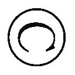

| 「超」怖い話 怪福 「超」怖い話シリーズ (竹書房文庫) | |
| 久田樹生 | |
| (2010) | |
本作品は縦書きでレイアウトされています。
また、ご覧になる機種により、表示の差異が認められることがあります。
一部の漢字が簡略字で表示されていることがあります。
※本書に登場する人物名は、様々な事情を考慮してすべて仮名にしてあります。また、作中に登場する体験者の記憶と体験当時の世相を鑑み、極力当時の様相を再現するよう心がけています。現代においては若干耳慣れない言葉・表記が登場する場合がありますが、これらは差別・侮蔑を意図する考えに基づくものではありません。
イラスト 久保田晃司
まえがき── 銭 魂
怪談仕事を続けていると、時折「何だったんだろう、アレ」という出来事に出会う。
例えば、心霊スポット・ルポ用の取材の場合。
〈入ると死ぬ〉と言われる穴に潜り、デジタルカメラで撮影をしていた。
奥に行くほど気温が下がる。その中を、上、下、側面、満 遍 なく写していく。
ところが、途中からシャッターが切れなくなった。数回に一度しか下りない。フラッシュも焚 けないし、非常に困ったのを覚えている。
結局、途中に撮影したはずの画像を含め、データが全て飛んでいた。
他には、取材に出たときカーナビがおかしくなり、全く役に立たなかったこともある。
まず設定した場所にきちんと案内してくれない。
そして、車が通れない先細りの道や行き止まり、果ては寺や墓地に導かれる。
勘を頼りに何とか目的地に着いたものの、何時間もタイムロスをしてしまった。レンタカーのナビと自前のポータブルナビ、両方が同時におかしくなったのだから始末に負えない。
また、〝通り慣れた道〟をナビなしで走って迷ったことがある。
真夜中の取材帰り、いつの間にか見知らぬ場所にいたのだ。何故こんな所に来たのか自分でもわからない。どこかで曲がり角を間違ったせいかとも考えたが、それもどうか。
周りを見ると、幾つかの苔 生した古い墓がヘッドライトに浮かび上がっている。
もう少し行けばどこかに出るか。甘い考えで先へ進んだ。が、それは失敗に終わった。
廃墟くらいしか出てこなかったからだ。知っている道も案内板も現れなかった。
結局Ｕターン、長い時間を掛けて何とか帰り着いたのである。
迷っている最中にたまたま知り合いから電話が来た。
『今、何してん......ぶッつッ』
車を停めて電話を取ると、切れた。また掛かってくる。取って一言二言言葉を交わすと、切れる。アンテナは全て立っているのにも関わらずだ。
その他、いろいろあったが割愛する。
この程度のことなら枚挙に暇 がない。むしろ日常茶飯事。わざわざ本に書き記すほどのことでもないなぁと考えていたくらいだ。それより、ひとつでも多く体験者の話を収録したいと思っていた。
ところがこの一年くらいの間、何人もの方に忠告された。
「マズイのが憑 いているって」
「自分でどうにかしないとダメですよ。酷いのが来てる」
こんなことを言われても、どうしようもない。本人に自覚症状はないのである。
確かに連続で事故に遭ったりなど、ここ二年はトラブル続きだった。
（これは、何とかせねばならないのだろうなぁ）
重い腰を上げたのであるが、いかんせん何をして良いかわからない。
御祓いも「行くだけ無駄です」と言われている。
仕方がないので身体を鍛えてみたりしたのだが、効果があったのかわからない。
やはり、悪い話と付き合いすぎたのがいけないということだろうか？
それなら少しくらいは〈ちょっといい話〉を書き、皆様に伝えれば何か良い効果があるやもしれない。というより、多分それが正しいようにも思えてくる。
例えば、このような体験談など如何だろうか？
◆
大阪に、売れない骨 董 屋があった。
まず、仕入れた品が売れない。それ以前に仕入れの時点で相場よりも高く売りつけられる。
人が良いせいもあるが、何かと損をしている。
当然、次第に身代も傾いていく。商売そのものが立ち行かぬようになった頃である。
骨董屋の主人は道を歩いていた。
店の先行きを思い悩みながら歩みを進めていると、前を行くものが目に入った。
「......ああ、何や。寛 永 通宝やないかい」
目の前を、古銭が歩いていた。
それも、人の背丈ほどはある巨大な寛永通宝である。
しかもそいつには、人の手足が生えていた。それらを振り振り、通りを闊 歩 している。
「や、いやいやいや。待たんかい！」
軽くツッコミを入れながら、彼は後を追い始めた。
巨大な古銭は歩道を左に折れていく。
「ああっ、なんでやっ！ おらへんやん!? 」
曲がり角まで来たものの、寛永通宝の姿は煙のように消えていた。
この話には続きがある。
寛永通宝に出会ってから間もなく、店の骨董が飛ぶように売れるようになった。買い付けでは、逸品をとんでもない安値で入手することが増えた。これまで考えられないことだった。
市場原理の当然、この骨董屋はみるみるうちに潤っていったのである。
曰く──。
「あの寛永通宝は、ゼニダマやなぁ。銭の魂と書いて、銭魂。見ると、裕福になれるんやって。そう聞いておったが、ホンマやったわ。ようけ儲けさせて頂いとります」
さて、この銭魂であるが、他にもこんなバリエーションがあるという。
「夜空を見上げると、空を飛ぶ硬貨に出会うことがある」
これも銭魂であり、見ると裕福になれるものだ。
満月の夜に、団子や芋などのお供え物をし、姿を現すように念じる。
それが銭魂に出会うコツだと聞いた。
試してみる価値はある、ような気がする。
目次
機縁
大居氏は今年で四十歳になる。
働き盛りであるが、悩みも多い。やはりこのご時世、出る話は暗い話題ばかりだ。
彼の会社でも、賃金・ボーナスカットやリストラは当たり前のようである。
「なんかこンだけ不景気だと、神様仏様ー、助けてくれー、って縋りたくなるよ」
愚痴を零しながら苦笑いを浮かべる。
「......でもなぁ。神頼みっていうのはさぁ。うーん」
表情が曇り、何かを言い淀んでいる。
「まあいいや。二年前かな。全部が全部、俺が体験した話じゃないんだけど......」
これから始めるのは、彼と、彼の知人の話である。
端緒
大居氏の会社は、所謂 商社である。
その会社の同僚に、中井川という男がいた。中途入社で、ひとつだけ年上だった。
外見は程々、かつ人好きのする性格であり、その上凝り性で博学。話題にも事欠かない。営業はこの男の天職と言えるだろう。
この彼と大居氏は何かとウマがあった。
だからプライベートでも付き合いが深く、飲みやゴルフなどよく一緒に出かけたという。
そんな中井川は三十五歳で離婚をした。
相手の言い分を全て飲み、多額の慰謝料を払ったようだった。
幸いというべきか、子供がいないおかげで月々の養育費を払うことはなかった。
「おい、大居君。引っ越してからうちに来てないだろう？ 今度飲みに来いよ」
中井川からこんな誘いを受けた。
家を売り慰謝料に充てたせいで、今の彼は借家暮らしだと聞いている。
誘いを受け、土曜の夕方に家を訪ねた。
驚いた。とんでもなく古い家だったからだ。
木造だろうか。平屋建てであるが、築何年かわからない。外壁は煤 けたように黒かった。
「入れよ。まあ遠慮は要らないよ。俺だけだからな」
誘われるままに玄関に入る。何かがしっくりこない。一体何だろうか。考えながら靴を脱いでいるとき、はたと思い当たった。
玄関のドアが外開きではないのだ。
出入りに不便な内開きになっている。
狭い玄関で靴を脱ぐとき、このドアが邪魔になる。少し動くと尻や腰にノブが当たった。
薄暗い廊下を進むと、一歩ごとにミシと軋 み、足が少し沈む。踏み抜きそうで怖い。
恐る恐る歩みを進めていると、彼がここが居間だと指さす。
どこにでもあるような和室であるが、調度品がほんの少しそぐわないように感じた。
どれも大きい。多分、前の家からそのまま持ってきたのだろう。
「いちお、家ン中を案内するよ」
玄関から続くあまり長くない廊下を進むと、左手に居間、右手側に風呂と脱衣所がある。その隣が便所になっていた。廊下の奥は突き当たりになっており、右手側が寝室、その向かい側にもうひとつ和室がある。
布団を敷きっぱなしの寝室に入ったとき、身体が震えた。気温が一段下がったようだ。
何故だろうと考えるうち、ひとつの理由に行き当たった。
「おい、この部屋、窓がないんだな。陽が入らないから寒いだろ」
構造から推し量ってみると、窓が切ってあるべき部分が壁になっている。
「そうなんだよ。何か俺が入るずっと前にリフォームしたらしいんだけどな」
言われてみると、外装と比べて壁が新しい。ベニヤ板のようなもので張り直している。畳の縁よりも少し飛び出しているところから見て、内側から施工したのだろう。
これは、寝室の向かいにある和室も同様だった。こちらにも窓がひとつもなかった。
おまけに、和室の出入り口は襖ではなく洋風のドアだった。なんともおかしな造りの家だ。
「不便だろう」
「いや、安いからな。ここに決めざるを得なかったんだよ。ほら、今、金ないし」
彼はおどけた表情を浮かべた。
新居案内が一段落して、二人は居間に腰を落ち着けた。
隙間風に首をすくめる。秋も深まっているせいだろう。襖とカーテンを全て閉めてもらった。
暖を取ろうと、燗 を付けた酒を飲み始めた。
「大変だったな、今回のこと。大丈夫か？」
「いや。そんなことはない。今はひとりで悠々自適だよ」
笑顔で答える。この話題はここで終わり、互いの話や趣味の話になった。
いつしか、テレビが深夜台のニュースを始めている。
そろそろ帰るかと腰を浮かしかけたとき、近くで何かが聞こえた。
とた、とた、ずー。とた、とた、ずー......。
同じテンポ、同じパターンの繰り返しだ。
誰かが歩いている音。それも途中でわざと足を滑らせているような調子である。
音は廊下から聞こえてくるようだった。
「おい、何だ？ この音」
中井川がさも当たり前のように答えた。
「ん？ 家鳴りだろ。古い家だし、寒くなってきたからな」
しかし、音は確実に移動をし、何かの意図を感じさせる。
廊下の突き当たり方向から玄関に向けて、着実に歩みを進めているようだ。
足音が玄関に辿り着いた。狭い家であるから、さほど時間は掛かっていない。
ごくりと生唾を飲んだ、そのときだった。
バンバン！
大きな音が玄関で鳴り渡った。両掌でドアを二度叩いた、そんな音だった。
思わず小さく飛び上がった。振り返ると、中井川はこちらを見て笑みを浮かべている。
とた、とた、ずー、とた、とた、ずー......。
また先ほどと同じ足音が戻ってくる。廊下の様子を覗き見ようと腰を上げた。
「おい、やめとけ、やめとけ。見るだけ損だぞ」
中井川が引き留める。既に顔から笑いは消えていた。
足音が止むのを待ってから、彼の家を辞した。
玄関に向かうときに気付いた。歩みに合わせて廊下がミシミシ軋み、板が割れそうになる。
（......さっきの足音、ミシリとも言わなかったな）
背中に冷たいものが走る。早く外に出ようと靴を確かめた。
揃えておいたはずの靴が、玄関の至る所に散らばっていた。
行動
中井川の営業成績が落ちてきた。
緩やかなものではなく、かなり急な下降線を辿 って。
「こんなこともあるさ」
本人は至って平気な顔をしているが、顔色はあまり良くない。血の気が引いているというのか、どこか灰色がかって見える。
（もしかしたら、あの家に潜む何かのせいなのではないだろうか）
あの〈足音〉を聞いてからの数カ月、彼の家を訪ねていない。彼から誘われても、理由を付けて断った。外に遊びに行くときだけ付き合うことにしていた。
はっきり言って、あの家に行くことが怖かったからだ。
「あの家、何かあるんだろう？ 大丈夫なのか？ 引っ越すか御祓いとか考えたら......」
心配するも、彼は冷静な態度を崩さない。
「いや。何もないさ。大体引っ越す金もないって。わかるだろ？」
そんなことはない。あの音を聞いたのは確かだ。金がないからと言っても、それなりの対策をしないとマズいぞと忠告する。
「いや、本当に大丈夫だって」
明らかな不満が顔に浮かぶ。少々気分を害してしまったようだ。
以来、この話はなかなか切り出せなくなってしまった。
決算が終わり、社内が落ち着いてきた頃だった。
「おい......あのな。ちょっと訊いていいか」
中井川が話しかけてきた。顔色は変わらず悪く、少々頬が痩けてきている。
一体何事かと聞き返すと、彼は少しだけ言い淀んだ。
「うん。いや。すまん。実はな」
実は、あの借家でおかしなことが続いていた。
足音と玄関ドアを叩く音だけではなかったようだ。
明らかな人の気配や咳 、また、電気系統の不具合が頻発していた。それどころか、寝室に割り当てた部屋で、得体の知れない気配を感じたとまで言う。
「寝てるとな、何かが覗き込んでいるような気がするんだ。目を開けると何もいない。電灯を点けても当然何も見えない。しかし、確実にいるんだ。何故なら」
覗かれていると感じたとき、頭側、枕元の畳がぐいっと沈み込むからだ。
あり得ない。こんな現象はフィクションだ。そう思い込んで、ずっと我慢をしてきたらしい。
だが、もう限界なんだと、彼はため息をついた。
「だから、何か良い方法がないかと思って。引っ越しは無理だけどな」
それならひとつしかない。
御祓いだろう。
「神社か寺を手配して、早急に対応すべきだよ」
中井川は無言で頷いた。
翌週、彼は明るい顔でやって来た。
「御祓い、済んだよ。いやあ、意外と簡単なものなんだな」
適当な寺に頼んで御祓いをしてもらったところ、足音も何もかもなくなったと喜んでいる。
「それは良かったなぁ」
近いうちに、再び彼の家で飲む約束を交わした。
疑念
御祓いが終わってから、二カ月が経った頃だろうか。
土曜の夕方、中井川の家を訪ね、二人で酒を飲み始めた。
確かに怪しいことは何ひとつ起こらない。そのことに関して話を振ると、
「いや、本当に御祓いというのは凄いものだな」
彼が嬉々として話し始めた。
生まれてからずっとそういった〈目に見えないもの〉は何ひとつ信じていなかった。だが、実際そんな目に遭い、また祓われるのを目の当たりにしてからは、認識が変わった。
「目に見えないものは確かに存在するし、また、我々の近くにあるんだな」
あれ以来、このような出来事に興味を持ってしまったらしい。
家の本棚にはそういったジャンルの本が大量に並んでいた。
最近は休みになると方々に出かけては知識を深めているようだ。
「ほら、これ見てくれよ」
一枚の名刺だった。名前の他には携帯の番号とアドレスくらいしか刷られていない。
そしてその名前自体に特徴はなく、どこにでもあるようなものだった。
「この人、霊能力者なんだよ」
胡散臭いなと鼻で笑うと、彼は必死になって言い返してきた。
否定論者だった反動なのか、今はすっかり肯定する側になっているようだ。
言い争うのも良くないだろうと適当に話を合わせた。それから三時間、帰るまでずっとこの霊能者──中井川はセンセイと呼んでいた──を賛美する話が続いた。
この日を境に、中井川の様子がおかしくなり始めた。
身に付けるものや行動が、これまでにないほど様変わりしたのだ。
これまでの快活さや人好きのする表情は消え、どこか歪 さを漂わせ始めている。
「いや、それはセンセイから許されていないから、できないんだよ」
何をするにも〈センセイの指導だから〉と前置きをする。
社内でも彼の存在が浮き始めたのは否めない。
どんな理由でリストラされるかわからないご時世だ。早いうちに修正しておかないと、中井川の人生が台無しになってしまう。
金曜の夜、大居氏は彼の家を訪ねた。家の中は様変わりしていた。
テレビなどの調度品がなくなっており、部屋の中は殺風景極まりなかった。
どうしたのかと訊ねると、彼はにこやかに答えた。
「リサイクル店に売った。猥 雑 な世の中の出来事から、身を守るためだ」
テレビや他の娯楽品は全てなくさなければいけないと、例の霊能者に指導されていた。
「あのな、個人の趣味には口を出さないけれどな」
せめて会社関係の人付き合いのときは、そんな行動を取らないようにとやんわり諭した。
だが、聞く耳を持ってもらえなかった。
「一度さ、そのセンセイに会わせてくれないか？ 俺からも話をだな」
その一言がいけなかったのだろう。
「煩 い！ お前に何がわかる！ センセイを馬鹿にするのか!? 」
彼は烈火の如く怒り狂い、激しい言葉でこちらに詰め寄ってきた。
売り言葉に買い言葉だ。あまりの口ぶりに、つい強い言葉で言い返してしまった。
「帰れ！」
中井川のその一言で、我に返った。慌てて取り繕うも、取り付く島もない。仕方がない。
軋む廊下を伝い、玄関に向かった。彼は居間に入ったまま、見送りにも来ない。当然だと落ち込みながら靴を履いた、そのときだった。
「ぐぅッ、ぐァッ...... 」
居間から何かを絞め殺すような声が聞こえてきた。
慌てて靴を脱ぎ、襖を開け放ったままの部屋に飛び込む。
何が起こっているのか、すぐにわからなかった。
中井川が、自らの首を絞めていた。
顔は赤を通り越して、紫に変わりかけている。
慌てて喉から手を引き剥がそうとするのだが、上手く外せない。身体に足を掛けて、全力で腕を引っ張っても、全くびくともしない。
「......ぷわ」
突如、首を絞める腕から力が抜けた。反動で尻餅をつく。
身体を起こす前に、彼が馬乗りになってきた。
殴られるのか。そう身構えたものの、何もしてこない。
様子を窺 うと、彼は呆けたような顔をしていた。
口をぱくぱくさせ、虚ろな目をしてどこかに見入っている。
視線が向かう先、そこは倒れた自分の頭側──廊下だった。
とた、とた、ずー......。とた、とた、ずー......。
いつからだったのか。あの足音が、頭のほうから聞こえる。
一歩一歩ゆっくりと歩みを進めては、摺り足を繰り返している。
襖が閉まっていないせいか、前に聞いたときよりも明瞭だった。
「あー。あー。あー。あー」
赤ん坊のような声を上げ、中井川が立ち上がった。
身を起こし、確かめるべきだろうか。それとも少し視線を上げるだけでもいい。廊下側は視界に入ってくるはずだ。だが、そのどちらも躊躇 われた。
突っ立ったままの中井川の顔をじっと見詰めることしかできない。
彼の顔が、大居氏から見て右から左に向かってゆっくりと動いていた。多分、廊下を渡るモノを眺めているに違いない。
余計に確かめられなくなる。
足音は玄関に向かって徐々に遠ざかっていった。
──ばんばん！
激しくドアを叩く音がし、一呼吸間を置いてからまた足音が帰ってくる。
とた、とた、ずー......。とた。
中井川の視線と足音が、居間の出入り口のところで同時に止まった。
少し顔を上げれば、自分にも廊下側を確かめることはできる。
だが、やはりできない。
視界の外側に何かがいるのはわかる。だからこそ、見ることができない。
中井川は満面に笑みを湛 えたまま、廊下に出て行く。
そして、足音が動き出す。
とた、とた、ずー......。とた、とた、ずー......。
みしりみしりと廊下を踏む彼の足音と共に、奥へ遠ざかっていく。
二つの足音が止んだ。
意を決して廊下に出る。
暗がりの中、中井川が奥の突き当たりに向かって、じっと立ち尽くしていた。
近付こうと、おずおず足を踏み出したときだった。
──みし、めり、めり、みりりり......。
奥の部屋、寝室側から生木を裂くような音が轟 いた。続いて、激しい家鳴りが響き渡る。家全体が揺らぐような酷いものだった。
薄情だが、もうこの家にいることはできなかった。
声も掛けずに、大居氏は逃げ出した。
隔意
それから、大居氏は中井川との付き合いを控えるようになった。
社内で顔を合わせても、適当な理由を付けてすぐに話を切り上げる。避けられているのを感じ取ったのか、彼もこちらと距離を置き始めた。
この頃から、中井川は無断欠勤を頻繁に繰り返すようになった。
「おい、中井川さん、馘 になるらしいぜ」
同僚が耳打ちしてきた。
営業の成績不振。無断欠勤。当然と言えば当然だろう。使えない者を置くほど、会社に余裕はない。
Ｘデーはすぐに来た。
ひと月を待たずに、中井川は解雇された。
「ああ、久しぶりだな。三カ月振りか」
金曜日。たまたま早く家に帰ると、門の前に中井川がいた。
少し痩せたものの明るい顔になり、以前の彼に戻ったようだ。彼が会社を馘になる前後の件で後ろめたさもあったが、家の中に招き入れた。
家人に酒を用意させながら、近況を訊ねる。
「うん。まあ辞めてからというもの、いろいろあったけどね。とりあえず前向きになろうかと思って、生活を改めてみたりしていたんだ」
例の胡 散 臭いものとは手を切った様子だ。すっかり元に戻っている。
今はアルバイトをしながら、新しい職を探しているのだと笑った。
「で、どんな仕事を探しているんだ？ バイトって？」
そうだな、と彼が顎を撫でる。
「自分の資格を活かした仕事を考えている。幾つか良さそうなところがあったから、今度面接なんだよ。まあバイトじゃ喰っていけないしな。あれは修行だし」
彼のバイトは、件 の霊能者のアシスタント兼弟子だった。
客あしらいや事務処理をこなしながら、空き時間に指導をしてもらっているらしい。
収入は雀の涙ほどで、家賃と光熱費を払ったら殆 ど残らない。貯金もないので、食べるのは師匠の家で出される昼食だけということだった。
話を聞けば聞くほど、相手の霊能者の胡散臭さが浮き彫りになっていく。怪しい新興宗教を個人でやっているような人間だ。
「まあ......。新しい仕事に就くのならいいけどな」
苦々さを噛み潰しながら、大居氏はやっとそれだけ口にした。
「まあな。職に就いたら夜が修行になるだろうし、謝礼金も包まないといけないけど」
中井川は笑っていた。不自然なほど幸福そうな笑顔だった。
「......ねぇ、あなた。これ」
彼が帰った後、妻が訝 しげな声でソファを指さした。
背もたれと座面がずたずたに切り裂かれている。調べてみると、表面だけを鋭い刃物で斬りつけた風に見えた。
中井川が座っていたソファだった。
彼は一度も席を外していない。こういったことを行った様子は微 塵 もなかったはずだ。しかし、確かにダメージが残っている。
彼を問い詰めるのは簡単だが、したくない。というよりも、縁を切りたかった。だから、このまま連絡を取らないと決めた。
その夜、居間でウイスキーを飲みながら、録画したゴルフ番組を眺めていた。
時計を見ると、十二時近い。
視界の端に嫌でも切り裂かれたソファが入ってくる。
ため息を吐き、グラスを干した。
〈......とた、とた、ずー......。とた、とた、ずー......〉
不意に、あの足音が聞こえた。
廊下側から。幽 かな音ではなく、はっきりと聞こえている。
グラスを握りしめたまま固まった。
ぷん......ッ。
何の前触れもなくテレビの電源が落ちる。
思わず音のするほうに顔を向ける。
廊下側のドアは、全面が四つに区切られた窓で構成されていた。それぞれに磨 り硝子 が填 められている。
足音は、そのドアの前で止まった。
硝子を透かして、何かが見える。確実に何かが居る。
大きさは、多分自分よりも小さい。全体が灰色というのか、澱 んだ色だ。
見たくない。これが何であるかを、はっきりと知りたくない。視点をわざとぼかす。
視線を外せば早いのだが、どうしてもできない。目の届く範囲から外すのが、途轍もなく不安であるからだ。
〈とた、とた、ずー......。とた、とた、ずー......〉
足音が動き始める。磨り硝子の向こうの何かも、それに合わせて消えていく。
足音が遠ざかった。
がちゃり。玄関ドアの鍵が開く音が聞こえる。
そして、全ての音が消えた。
「んー。どうしたの？ 鍵開けて。どこかに出るの？」
起きだした家人が隣の部屋から顔を出す。それに曖昧な相 槌 を打ち、廊下に出た。
足音の痕跡は何ひとつない。
ただ──閉めておいたはずの玄関の鍵が、完全に開かれていた。
そして、揃えておいたはずの靴が散らばり乱れていた。
忌避
大居氏は玄関に盛り塩をし、神社から札を貰ってきた。
廊下にはほんの少しだが塩を撒いておいた。家人が文句を言ったが、構わない。
そのおかげか、それからは何も起こらなかった。
ひと月ほど経った頃だろうか。
土曜の昼間、また中井川が訪ねてきた。
どこかスーツを上手く着こなせていない印象がある。
「よお」
気易い雰囲気で声を掛けてきた。しかし、もう家に上げるつもりはない。それどころか付き合い全てを断ちたかった。
「すまん。もう来ないでくれるか？」
はっきりと伝え、玄関から押し出した。彼は意外そうな顔を浮かべた。
「何でだよ？ 俺とお前の仲じゃないか」
馴れ馴れしい口調と、態度が気持ち悪かった。
いいからもう来ないでくれと厳しく言い渡し、ドアを閉めた。
が、上手く閉まらない。中井川が足を差し込んでいた。
「何でだよ？ 俺のこと、嫌いになったのかよ」
まるで男女の愁 嘆 場 だ。
押し問答をしていると、騒ぎを聞きつけたのか奥から家人が出てきた。
「どうしたの......？」
「いや、こいつがさ」
渋い顔で家人に訴える。
「え？ 誰もいないわよ」
振り返ると、ドアの隙間から中井川の顔が消えていた。
急に抵抗をなくしたドアが、激しく音を立てて閉まった。
確かに中井川はいた。
そして、ドアの引っ張り合いをしていたはずだ。
慌てて外に飛び出した。誰もいなかった。
一体、何だったんだ。門の中に入るなり、後ろから声が聞こえた。
「......俺ン家で、待っているから」
中井川の声だった。
振り返ると、門扉の向こうから首だけ出して、笑顔を向けている。
「俺は行かないぞ！」
斬って捨てるように言うと、彼は今にも泣き出しそうな顔をした。
「いいから、一度来てくれよ。俺を助けると思って」
幾ら断っても帰る素振りを見せない。いつまでも押し問答が続く。
根負けし、渋々承知する。
彼はさも嬉しそうな笑顔を浮かべた。
「明日、俺の家で待っている。午前中が良いな。早いうち。朝八時に来てくれ」
それだけ言うと、中井川は首を引っ込めた。
後を追いかけるが、どこで曲がったのか彼の姿は消えていた。
慚 愧
（もうこれで終わりだ。二度と関わらない）
翌日の朝、大居氏は中井川の家に向かっていた。
約束を反 故 にしても良いと一度は思った。だが、行かなければ彼は何度も訪ねてくるような予感があった。
中井川の家は、以前のままだった。
ドアを叩くと中から返事が返ってくる。
「入ってくれ」
彼はスーツ姿だった。無 精 髭 一本なく、髪はぴっちり整えられている。
玄関に入るが、やはり内開きのドアは邪魔でしかなかった。
テーブルを挟んで、彼と向かい合う。
出された茶にも手を付けず、切り出した。
「助けてくれ、って何だ？」
「その件なんだが」
彼は顔色ひとつ変えずに、一枚の紙を取り出した。
黒いボールペンで描かれていたのは、簡略化された家の見取り図だった。
所々にサインペンや赤いポールペンで矢印や注釈らしきものが入っている。
「これ、この家の見取り図なんだ」
確かにそのようだ。手に取ってじっくり目を通す。
一番奥の寝室と向かいの和室、そして廊下と玄関に矢印や文字が集中している。
〈ここ〉
〈この方向がダメだ〉
〈ドアの取り付け〉
〈廊下突き当たり、二部屋に問題〉
そして、何を表しているのかよくわからない文字や文様があった。専門用語っぽい部分もある。が、それよりも目立つものが描かれている。
突き当たりにある寝室と向かいの和室の中央にある棒人間だ。
赤いボールペンで印されており、どちらも同じ方向に頭を向けている。添えられた東西南北を示す十字から見て、頭は北側にあった。
「一体、これは何なんだ？」
「センセイが家相を見てくれたんだ。最近の俺が全く駄目な理由は家にあるって。でも引っ越しはできない。それにリフォームもできないだろう」
だから、別の方法を教えてもらったんだと、中井川は微笑んだ。
結局センセイのいいつけか。ため息が漏れる。
「その方法をやるには、俺ひとりじゃ無理なんだよ。だから、な。これが最後だから」
大居氏に頭を下げた。
何故か落ち着かなくなる。さっさと終わらせようと、話の続きを促した。
方法は至って簡単だった。
「あと少ししたら九時になる。そしたらお前は和室にいてくれ。三時間、昼十二時までずっとそこにいてくれたらいい。座っても寝転がっても、何なら眠ってもいい」
何もしなくていいのか、と訊く。何もしなくて良いのだ、と返ってきた。
九時になる数分前、和室に入った。中井川は寝室に入ったようだ。
窓がなく、蛍光灯を点けないと暗い。古ぼけた畳は毛 羽 立っており、足を運ぶごとに撓 む。座り込んで部屋を見回すが、家具もなく殺風景だ。湿気のせいか、どことなく黴 臭い。
ふと、あの出来事を思い出し、ぶるりと身が震えた。
（大丈夫だ。大丈夫。今は朝だ。何もない。何も起こらない）
胡座 を掻いたまま、じっと壁を見詰めた。
──どれくらい経ったんだろうか。
何もしない上、窓もない部屋なので時間の感覚が失せる。腕時計で確かめると、漸 く四十分ほど過ぎたところだった。
寝室からは中井川の声と気配、何かをしている様子が伝わってくる。声は何となくお経のように聞こえた。
しかしこちらは何もやることがない。思わず欠伸 が漏れる。
メールのチェックでもと、携帯を取り出した。
何故か、電源が落ちていた。
再び立ち上げようと電源ボタンを探ったとき、何か異音が耳に届いた。
目の前の壁からだ。
〈──ざしゅっ、さり、さりっ、ざりり、ざざざざ......〉
何らかの生き物が身体を擦りつけている、もしくは掌を擦りつけているような音だった。
心拍数が上がった。音の出所とおぼしき場所に目を遣ると、壁が僅かに震えていた。
擦過音が動いた。向かって右だ。音が移動すると、板が震える場所もまた移る。
音と振動はゆっくりとだが、縦横無尽に動き回っていた。
そして、気付いた。
畳が撓んでいる。それは音が聞こえる場所に同調するかのように動いていた。
──見えざるモノが、壁伝いに動き回っている。
そんなイメージが脳裏に浮かんだ。
いつしか、呼吸が荒くなっていた。顔に浮かんだ汗が垂れる。
（オレハ、ナニヲ、シテ、イルンダ......出よう。出よう、出よう！）
腰を上げたとき、明かりが落ちた。
同時に携帯が激しく震える。開けたままの液晶がぼんやりと部屋の中を照らし出す。
壁際に、何かがいた。
大きさは自分より少し小さいか。細かいディテールはわからない。否。わかりたくない。
多分、人だろう。そんな形をしている。
そいつが、こちらを見ている。圧迫感で身体が潰れそうになる。
液晶の光が乏しくなった。
壁際の何かが、こちらに向かってくるのがわかった。
無我夢中で、出入り口のドアを探した。
誰かが肩をぎゅっと掴んだ。強い力だった。
ノブを見つけた。転げるように和室を飛び出し、そのまま玄関に走る。
短いはずの廊下が、長く長く感じた。
ろくに靴も履かないまま、ドアを掴む。内開きのため、スムーズに出られない。それでも何とか家の外に飛び出した。
燦 々 と照る太陽の下、息せき切って走り続けた。
コンビニまで来ると、何とか落ち着きを取り戻すことができた。
握りしめたままの携帯を見ると、また電源が落ちている。立ち上げると、家人からのメールが何件も入っていた。
『お父さんとお母さんが事故に』
家人の父母が自動車事故に巻き込まれていた。命だけは無事だった。
それから数日の間、何者かに掴まれた肩は上がらなくなってしまった。
無理に動かすと激痛が走る。鏡で見ると、赤紫に腫れ上がっていた。
（二度と、あの家には行かない）
彼はそう決めた。
結論
それから、中井川は姿を見せなかった。
当然こちらから連絡を取ることも止めていた。
あの出来事は誰にも話さず、いや、話せなかった。そしてそのまま大居氏の心の中にそっとしまい込まれた。
それから半年が過ぎた。
ある雨の降る夜だったという。
接待の最中、二次会に移動するため信号待ちをしているときに、彼は見た。
歓楽街を歩く中井川を。
ダークカラーのスーツ姿だった。
彼は傘も差さず背を丸め、雨に濡れていた。
傘を差した二人の男が両脇を固め、彼を挟むようにして歩いている。
どちらかというと、どこかへ連行されている。そんな空気を醸 しだしていた。
どうしても彼の歩き方に目が奪われる。
数歩歩くと、右足を引き摺るようにしている。足が悪くなったのか。しかしその割にはしっかりとした足取りだ。わざとやっているようにも見えた。
中井川が顔を上げる。
こちらに気付いた。青白い顔で怨みがましい視線を投げている。
それに釣られたのか、両隣の二人もこちらを向いた。傘に隠れて顔は見えなかったが、どこか尋常ではない雰囲気を纏 っていた。
信号が変わった。逃げるようにその場を後にした。
二次会のバーでウイスキーを何杯も飲んだが、酔えなかった。
大居氏は言う。
──多分。多分ね。
センセイとかいうおかしなヤツに捕まってから、あいつはおかしくなったんだ。
それまで何も信じていなかった人間が、あんな体験をして〈裏返って〉しまえば、それはもう、そうなっちゃうのも道理だよ。
それが行き過ぎちゃっているのは事実だと思うけれど。
大体、霊能者や神仏に頼み事をして物事全てが好転するのなら、誰だってそれに頼る。でも、拝んだりとか、宗教ってのはそんなもんじゃないだろう？
あいつはね、依存し過ぎたんだよ。きっと。
依存は良くない。信仰と依存は違うと、俺は思うんだ。
あとね。センセイと呼んでいた霊能者も、どうかな、と。もしかすると何か性質の良くない連中に騙 されたんじゃないかな。
心残りはあるよ。
だって、俺にはアイツを助けられなかった──。
今も、大居氏は眠っているときにだけ、あの〈足音〉が聞こえることがあるという。
とた、とた、ずー。とた、とた、ずー......。
どこか遠くから聞こえるそれは、自宅の廊下を玄関から行ったり来たりしているようだ。
しかし、彼は言い切る。
──本当に極希にしか聞こえないよ。多分、気のせいだよ。ああいうことがあったから。トラウマとかそんなもんだよ。
だから足音なんかが聞こえる気がするんだ。
中井川の足音かも、って思うこともあるけど、馬鹿げた考えだからね──と。
吃驚禍福
人間、生きていると様々なことに出会うものだ。
毎回取材と称して、怪談とは全く関係ない四方 山 話に花を咲かせている立場としては、余計にそう思う。
老若男女。様々な立場。幾通りもの人生。
それぞれが、それぞれの価値観を持ち、多様な反応を見せる。十人十色だ。
もちろん体験談そのものも然りである。
特に場所によって〈体験談の肌触り〉が違うことには驚いた。
北には北の、南に南の怪談がある。
当たり前のこととはいえ、現地に行き、実際に触れてみないとなかなか感じることは難しい。
それもこの仕事を始めてから気が付いたことだが。
南北に長い日本だからこそである。だからこそ、興味深い。
では、北から南までの「吃 驚 禍 福 」な話を始めよう。
オーバー・ザ・レインボウ
初めての子供を産んだ後、育美さんは育児ノイローゼに陥った。
理由は幾つかある。
育児を手伝わない夫。
同居ではないが、いちいち気に障ることを言う姑 。
夫の実家近く、遠く離れた土地に住み、周囲に仲の良い友人が全くいないこと。
そして、意のままにならない産まれたばかりの息子。
絡み合った全てが彼女をゆっくりと蝕 んでいった。
目に入る物は色 褪 せ、耳に入る物はノイズとしか思えなくなっていた。
初夏の午後だった。
泣き止まぬ息子を無造作に掴み上げ、その顔をじっと見詰めた。
手の中にある湿り気を帯びた何か。まるで芋虫のように蠕 動 する物体。醜悪な生物。
自らお腹を痛めた子供であるということさえ、信じられないものとなっていた。
息子の肩越しに箪 笥 が見える。その上に結婚したときの記念写真が乗っている。幸せそうな笑顔の自分の隣に、仏頂面をした夫がいた。
（ア、ソウダナァ。コノテノナカニアルモノヲ、アノ、タンスニ、ナゲツケテシマオウ）
首の後ろで何かが弾けそうになる。歓喜、かもしれない。
（タンスノカドニ、バツーン、ト。キエテシマウカナ？ イイダロウナア）
今目の前で泣き喚いている異形の物体を箪笥にぶつけて消してしまうこと。
それが最良の選択であるとしか思えなくなった。
全身の力を使って叩きつけてやろう。息子を頭の上まで振り上げる。
あとは振り下ろすだけだ。
しかし、できなかった。
我に返った──いや、それとは違う。不意に言いようのない寂しさと憤 りに襲われたのだ。
それからも度々息子を〈壊しそうな衝動〉に駆られた。いつも途中まで行動し、取りやめることの繰り返しだった。
この頃、いつも口ずさむ曲があった。
オーバー・ザ・レインボウ。
披露宴のときに使った曲でもあり、彼女が大好きだった曲だ。
だけど、今は好きかどうかもわからない。ただこの曲が口を衝 いて出るだけだ。
「......さぁぁぁむうぇぇぇぁ あ、おーばぁ、ざ、れぇいんぼぉおう......」
うろ覚えの英語。息子のベビーベッドの傍に座り込んで歌う。あやすために歌っているわけではない。ただ歌いたいから歌っている。
火の点いたような泣き声が、彼女のか細い歌声をかき消すのが常だった。
それが厭 で堪らない。自分の歌を邪魔されたことなのか、それとも息子の存在自体が煩わしいからなのか。
やっぱり、壊して、しまおう。
そう決めたのは、夏の終わり。
いつもと同じようにベビーベッド傍の床に座り、オーバー・ザ・レインボウを歌い終わったときだった。
どうやって壊そうか。
ふらつきながら立ち上がり、息子を見下ろす。
「あ」
何故か息子の身体が柔らかな光を放っている。
唖然と見守るうち、光の帯が上方に向かって伸びていく。
立ち上った光は七色と化し、彼女の視界を包んでいく。
部屋全体が、安らかで心地よい色に染め上げられているかのようだった。
スペクトル。虹色の光の帯を目で辿る。
虹は息子の身体から開け放した窓に──南の空に向かって伸びていた。
急に我が子の泣き声が愛おしくなる。
壊れ物に触れるように抱き上げた。ほぼ同時に虹の光が滲 むように消えていった。
目の奥が熱くなり、いろいろなものが込み上げてくる。
「ごめん。本当に、ごめん。お母さん、駄目なお母さんだった」
息子が泣き止んだ。こちらをじっと見詰めていた。
そして、笑った。
息子が生まれた朝、空に虹が架かっていたという。
虹の橋の袂には、幸せが、宝物が埋まっている。
だから、虹一と名付けたのだった。
オーバー・ザ・レインボウ。虹を越えて。
虹一はこの歌が好きなのだろう。歌うと笑う。
それがまた、育美さんには愛おしくて、仕方がない。
二つの茶わん
風が冷たくなり始めた、初秋の頃だった。
〈ぽん......ぽん......ぽん............ ぽん、ぽん......〉
中根君は夢うつつに何かの音を聞いた。
音はまばらな感覚で鳴っている。
まるで柔らかなボールを叩くような、子供のお腹を叩いているような音だった。
ベッドが僅かに揺れている。音の間隔に合わせて上下に浮き沈みしていた。
すぐ右隣、妻が寝ている方向から音は聞こえている。
目を開けると、部屋が薄青い光で染められていた。
光源は、右手方向にあるようだ。
ゆっくりと顔をそちらに向ける。
目が覚めた。
寝ている妻の胸の上に、一抱えもありそうな青く柔らかな光の塊が浮いている。
声が出ない。
身じろぎせず、光に瞳を凝らす。中で何かが動いていた。
青いスモックを着た女の子だった。
幼稚園の年長さんくらいか。
ただし、その身長は無闇に小さい。五、六十センチ程度だ。長い髪を後ろに束ねた横顔には、残酷な笑顔が浮かんでいる。
起き上がろうとしたとき、女の子が膝を上げた。
一呼吸置いて、足が下ろされる。
〈ぽん〉あの音が鳴った。ベッドが沈み、元に戻る。
今度は逆の足を上げ、下ろす。再び寝室に音が響き、ベッドが沈んだ。
妻が目を覚ました様子はない。
足の上げ下げと音、浮き沈みが続く。
ふと、正気に返った。
「う、うわアアアアアアアぁッ！」
大声を上げて飛び起きる。
だが、子供は消えない。消えるどころかすぐ傍に、はっきりと浮かんでいる。
足の上げ下ろしを繰り返し、じっと妻を見下ろしていた。
再び悲鳴を上げる寸前。
妻がやおら身体を起こす。
そのまま宙に浮く子供を優しく胸に抱いた。
「──ねぇんねぇんころりぃよ、おころぉりぃよぉ......」
小さな声で子守歌を歌い出した。
結婚して三年。これまで聞いたことがないような、妻の優しい歌声だった。
青い光は消え失せている。妻の腕の間から子供の顔が覗いた。
無 垢 で安らかな顔がそこにあった。
何度か歌い終えた頃、気が付くと妻の胸から子供の姿は消えていた。
「ねんね、してね」
妻が細い声で呟く。
暗い部屋。呆気に取られた自分と、はらはらと涙を流す妻だけが残った。
翌日、妻の身体に小さな薄桃色の痣 が二つ残されていた。
場所は鳩尾 よりも少し下、胸と膨らみ始めたお腹の中間辺りだ。
まるで赤ん坊の小さな足跡のような痣だった。
妻はその跡を指で触れ、ほんの少し目を潤ませた。
その日からさほど時間を置かず、妻は流産した。
中根君にとって、初めての子供になるはずだった。
年上の妻を抱きしめ、ひと晩一緒になって泣き明かしたという。
彼の家には、小さな仏壇が設えられた。
仏壇には生まれてこなかった子供の位 牌 と、もうひとつの位牌。
そして、小さな茶わんが二つ並べて置かれている。
アラザン
水槽の側面、硝子の面に小さな泡が付いていた。
数え切れないほど密集したその泡は、角度によって銀色の粒に見える。
まるでケーキやお菓子に使う銀色の砂糖粒、アラザンのようだと彼女は思った。
熱帯魚たちが吐き出したものが付着したのか。それとも別の原因があるのかわからない。
銀色の粒が織りなす模様が、何となく大きな魚の形に見えた。
水槽の表面を指で叩いてみた。泡が一気に硝子を離れる。
そして、水面に触れた瞬間、消え──なかった。
泡はそのまま水を飛び出すと、無数の銀色の粒になって空中に浮き上がった。
そして、その場に留まっている。
粒に鼻先を近付ける。よく見ると、単純な銀色ではない。複雑な光の乱反射は、まるで小さな宝石のようだ。どれもこれも目 映 いばかりに輝いている。
美しさに誘われ、おずおずと指を差し出した途端、それらは四方八方に飛び散った。
慌てて部屋中を探してみたが、一粒たりとも見つけることはできなかった。
水槽ではいつもと変わらず熱帯魚たちがのんびりと泳いでいた。
「あ。これ、やる」
その夜、夫が小さな包みをこちらによこす。
開けると、ダイヤモンドの指輪が入っていた。
並んだ小さな石とプラチナのリングが柔らかく輝いている。
「結婚して十年経ったからね」
照れた夫の顔とリングを交互に見比べながら、自然と笑顔が零れる。
そして何故か、今日見たあの美しいアラザンたちのことを思い出した。
幸運のシャープペンシル
このシャープペンシルで試験を受けると、合格する。
──学生時代によくあるジンクスだ。
折原さんもそのようなシャープペンシルを持っていた。
二百円くらいで買った、青い透明樹脂のものだ。何の変哲もない。
彼女にとって、それは幸運のシャープペンシルだった。
ところが、だ。
学生時代が終わり、社会に出てからはその存在をすっかり忘れていたのである。
余裕のない社会人生活の最中のことだ。
休日、必要に迫られて部屋の片付けをする羽目に陥った。
ある程度作業も終わろうとしていた夕方である。
押し入れの奥にブリキの箱を見つけた。
それは、学生時代大事なものを入れていた箱だった。
開けてみると、当時好きだったものたちの残 滓 がみっしりと詰まっている。
懐かしさと多少の恥ずかしさに身悶えしながら中身を探る。
「あ。これ、このシャーペンって」
あの幸運のシャープペンシルだった。
久しぶりに握ると少々細く感じる。こんなものだったかと、持ち直したときだった。
右手が勝手に動いた。
引っ張られるような抵抗感も、何かに動かされている感覚もない。
肘から先が他人の持ち物のようだ。
右手が近くにあった段ボールの余白に何かを書き出していく。
〈みつもり ＡＲ１０１ すうじ だめ〉
ＡＲ１０１は折原さんが勤めている会社の製品の型番だった。そして、休みの前日残業をし、仕上げた見積もりの中に入っている。
まさかと思った。確認しようと思ってもデータは会社にある。機密事項があるため、社外への持ち出しはできない。
仕方なく次の日一本電車を早め、会社でチェックを入れた。
ＡＲ１０１の個数が違った。ロット数の値段で出すところを単品の値段で入れている。これだと大損をする数字だ。
慌てて修正を行い、見積もりを作り直した。
大きなミスになるところを、何とか回避できたのである。
これ以来、幸運のシャープペンシルがいろいろなことを教えてくれた。
〈じゅちゅうしょ みなおし〉
再確認したことで受注が増えた。
〈でんしゃ いっぽん まえ ずらせ〉
人身事故による遅れに巻き込まれなかった。
他にも小さなことを書き出してくれる。
だからこのシャープペンシルをいつもバッグに忍ばせるようにした。
だが、結婚が決まった日。
幸運のシャープペンシルはいずこかへと姿を消した。
これからはもう必要ないと言うことか。
それとも、今後はシャープペンシルを頼るなと言うことか。
それとも──。
仏飯
仏飯とは、仏壇に上げた御飯のこと。
大抵〈仏飯器〉という足付きの杯のような形をした器に丸く盛り、供える。
この仏飯のお下がりを食べることで、力を得られるという話があった。
例えば、河童と相撲を取る前に仏飯を食べておくと力が湧き、負けない。など。
仏様のお下がりであるからこその効能であろうか。
千里子さんも高校受験の朝、仏飯のお下がりを食べていったことがある。
「ほら、千里ちゃん、これ上がってお行き」
祖母が仏飯を差し出してきた。
供えたばかりでまだ堅くなっていない物であったし、あまり抵抗もなく口にした。
何だか、とても甘くて美味しかったことが印象に残った。
試験が始まった。順調に進んでいく。これまでの勉強が役立っているようだ。朝早めに起きて時間調整したせいか、集中力もあり、頭も冴えている。
試験が中頃まで進んだときだろうか。
マークシートを塗り潰している途中で、右耳に違和感を覚えた。
何か羽毛のような柔らかい物に触れられているような、くすぐったい感触だ。
手で触れてみようとするが、それらしき物はない。
しかし柔らかな感触は続く。
あまりに続くので、ちらりと右に視線を走らせた。
何かほわりとした金色のものが視界に入った。が、逃げるように姿を引っ込める。
（一体、今のは何？）
髪は金髪ではないし、アクセサリーを付けてもいない。だから、視界に金色のものが入るはずはない。
また感触と共に視界の端に金色が割り込んでくる。
ちらちら視線を向けているうち、挙動不審な自分に気が付いた。
（まずい。カンニングと思われかねない）
マークシートの用紙に目を戻した。
集中しなくては。鉛筆を握り直したとき、右耳がほんわり温かくなった。
そして。
〈ああ、あかん。ちゃんと見直してや〉
男か女かわからない、優しげな声が囁 かれた。
思わず顔を上げるが、周りの様子は変わらない。ただの試験会場だ。
またシートに集中する。
〈あかん。見直せ。あかんで〉
またあの声がする。
視界の右のほうに金色の物がちらついていた。
少しだけ顔を上げるが、それが何かまでわからない。
ヘンだなとは思ったが、何となく信じられる声のような気がする。
問題とシートを見比べた。
（くわわわ！ か、かっ、回答する部分がずれてる！）
全身から冷や汗が吹き出す。時間を確かめた。まだ大丈夫、リカバリーできる。慌てて回答をやり直していると、三度あの声が囁かれた。
〈よしや。がんばりぃ。ま、答えは自分でなぁ......〉
最後、ボリュームが絞られるように声が消えていった。
それと共に、右の視界にちらついていた金色と、温かさ、柔らかい感触も去っていった。
試験後、家に帰り祖母に報告する。
「ああ、それは良かった。仏さんのおかげだねぇ。どの仏さんかわからないけれども」
そう言って祖母は手を合わせて微笑んだ。
千里子さんの受験は成功し、春に女子高生となった。
そしてこれ以降、何か大一番がある日には仏飯を食べていくことを決めたという。
まもり
尼崎さんの娘、まもりちゃんが四歳のときのこと。
夕食後、大好きなトトロのＤＶＤを見ていた彼女がこちらを向き、ぽつりと漏らした。
「ママ、あのね。まもり、いなくなっちゃうから」
何を言っているのかわからない。またいつもの空想話だろうか。適当に返事をしていると、まもりちゃんは頬を膨らませた。
「ママ、ほんとうにいなくなっちゃうから。しんけんにきいて」
苦笑しながら話に付き合う。まもりちゃんは右手で太腿をさするいつもの癖を見せながら、尼崎さんを見詰めた。
「あしたね、まもり、いなくなっちゃうから。だから、さいごね、あたしのこれ」
まもりちゃんは自分の柔らかな髪の毛を摘んだ。
「ママ、ずっともっていて。そしたら、まもり、ママとずっといっしょ」
はいはい──といい加減な返事を返すと、まもりちゃんはトトロに戻った。いつもと変わらない日常の風景だった。
だが、まもりちゃんは翌日亡くなった。
家の庭で転んでしまい、ブロックに後頭部をぶつけたことが死因だった。
通夜の席、現実感のない世界で、尼崎さんは思い出す。
「あたしのこれ」
あのとき、あの娘の言葉。
真剣に聞いていれば、もしかしたら娘は死ななかったのではないか。後悔という言葉くらいでは表すことができない感情が彼女を責め苛 んだ。
涙は一滴も出ず、ただ朝まで自分を責めることしかできなかった。
まもりちゃんが言い残したことを夫に話し、一束の髪の毛を残してもらった。
遺髪は白い紙に包まれ、お守り袋に納められた。
以来、ずっと肌身離さず持ち歩いている。
それからというもの、たまにまもりちゃんの声が聞こえることがあるという。
〈ママ、だめよ、そっちは〉
声と共に、首に掛けた守り袋が軽く引っ張られる。
それでも進もうとすると、また引っ張られる。声の導く方向へ進むと、声は止み、守り袋が引っ張られることもなくなる。
そのまま進むと何があるのかわからないが、多分何かを警告しているのだろうと尼崎さんは考える。
一度だけこんなことがあった。
〈ママ！〉
強い叫び声。同時に守り袋が真下に引っ張られた。あまりの力に、思わずしゃがみ込む。
目の前を白い営業車が掠 めていった。
危なかったと思うのもつかの間、その営業車は突然蛇行し始め、ガードレールにぶつかった。それが居眠り運転だったと後から知った。
まもりが守ってくれている。確信と共に、涙が溢れて仕方がなかった。
まもりちゃんの妹が生まれて三年が経つ。
実はこの子が生まれる前、まもりちゃんから喜びの声が届いた。
〈ママ、あたしのいもうとなんだね。うれしいなぁ......〉
生まれてくる子の性別どころか、妊娠すらわからない時期の出来事だった。
だが──。
ここ最近はまもりちゃんの声も少なくなった。守り袋が引っ張られることも減った。
この前のお盆、まもりちゃんが囁いた。
〈ママ。いもうとがあたしとおんなじとしになったら、あたしいなくなる〉
寂しそうでもあり、また、どこか決意めいたものも感じられる声だった。
あともう少し。
この言葉を信じれば、もう少ししたらまもりちゃんはいなくなる。
それでもこれはずっと一緒なのだと、尼崎さんは守り袋を優しく握った。
まもりちゃんの妹が、隣でふんわりと笑っていた。
姑側
家に嫁 いできた女性が最悪だったと浅井さんは言う。
二十二歳。家事ができないくらいは許す。
だが、人として〝なっていない〟のが許せないのだと、彼女は眉を吊り上げた。
まず、挨拶もろくにできない。
朝は遅くまで寝ている。
働かない。姑を働かせ、自分はどっかり胡座 を掻いて、テレビを見ながら菓子を摘むか携帯を弄 っている。お客さん気分だ。
その代わりではないだろうが、外見には気を遣っている。美容院にはこまめに通い、家事に不向きな長い爪は、いつも綺麗にマニキュアが塗られている。
クローゼットに入りきれないほどの服を買い漁るが、それでも満足しない。
メイクや服に心を砕き、他を蔑 ろにしているとしか言いようがなかった。
（嫁いできて、これでいいと思っているのかしら？）
過去の因習に囚われているわけではないが、流石に我慢ならない。
「あのね、里沙さん。こういうことを言いたいわけじゃないんだけど」
嫁の顔が曇る。ソファに座ったまま、こちらを睨み付けてきた。
怯 むことなく、これまで感じてきたことを丁寧に説明し、改善を求めた。
「......で？ リサはァ、アキラと結婚しただけでェ、んなのカンケーねェし」
低い声でそれだけ言うと、またテレビに視線を戻した。
アキラ──息子に相談するが、反応は芳 しくない。
「ママ、いいじゃん。里沙もまだ子供なんだよ。それにアイツには親が居ないんだし。だからママに甘えているんだよ。本当の家族だからこそ、本音で話しているんだと思うよ」
逆に諭すような口調だった。
息子の世間知らずが露呈しただけなのかもしれない。早くに父親を亡くし、母ひとり、子ひとり。育て方を間違ったのかと後悔が湧き出てきた。
（家の中に味方はいないのね）
彼女は、ひとりだった。
我慢に我慢を重ねて、半年が過ぎた。
嫁の横暴さは更に磨きがかかっていた。
「友達ンとこ、遊びに行ってくっから」
日中、露出の高い派手な格好をして出かけていく。そのまま何時間も帰ってこない。
たまにアルコールの臭いをさせながら帰ってくることもあった。
注意をしても聞かない。それどころか怒鳴り返されることもあった。
息子に報告するが、あまりいい顔をしない。
「そんなさ、告げ口みたいなことをするなよ。それに里沙だって若いんだ。友達と遊んだりしたくなるって。そんながんじがらめにしたら可哀想じゃないか」
どこまでお人好しなんだろうか。我が息子ながら涙が出そうになる。
（一体、あんな女のどこが良かったんだろう。何故結婚したのだろう）
息子と嫁が上手くいっているのが、疑問でならなかった。
それから更に半年。
督 促 状から嫁の借金が露呈した。消費者金融から百万以上借り入れていたのだ。
「頼むよ、ママ。里沙も反省しているから、ね？」
頭を畳に擦りつけて頼む息子の後ろで、嫁はソファで足を組んでいる。興味そのものがないといった顔をして、自分の爪を見ていた。
堪忍袋の緒が切れた。
「出て行け！ この穀 潰しめッ！ 出て行け！」
怒鳴り散らした。だが、我関せずといった様子で足をぶらぶらさせている。
息子が止めに入る。
「ママ、止めてよ！ こいつだって悪気があったわけではないんだ！」
呆れかえるしかなかった。
夫婦共々この家を出て行くことを条件にし、借金を払ってやった。
だが、ひと月経っても出て行く素振りすら見せなかった。
ある寒い夜だったという。
廊下を歩く音で目が覚めた。わざと大きな音を立てているように思える。時計を見ると午前十二時を指していた。
息子か、あの嫁だろう。こんな時間まで煩いものだ。
「......早く出て行けばいいのに」
口の中で呟く。ほぼ同時に、足音が止んだ。
廊下側の襖の前に人の気配が残っている。
ざぁーっ。みきぃ。表面を撫でる手の音と共に、襖が軋む。
布団から顔だけ出し、そちらを睨み付ける。
廊下から光が漏れている。ほんの少し隙間が開いていた。
その隙間に影が差した。何者かが覗いている。
多分、二人。逆光で顔はわからない。
「起きているんだけど！ いい加減にしなさい！」
身体を起こし、鋭い声で叱りつけた。だが、人影たちはじっと動かない。
馬鹿にされている気分に陥る。眠気は完全に飛んだ。立ち上がり、襖を開ける。
「どうして」
暗い廊下がそこにあった。
今まで差し込んでいた光は失せ、覗いていた人影もどこにもなかった。
遠くから嫁の笑い声が聞こえた。馬鹿にした笑いだった。
ぽつぽつと同じような出来事が起こるようになった。
二週間に一度か、二度。足音と、覗く人影だ。
襖を開けると真っ暗な廊下しかない。そして、嫁の笑い声が遠くから響く。
「おかしなことがあります。助けてください」
亡夫の位牌に手を合わせ、特にこれについて頼むようになった。
それでも、事は収まらなかった。
ある夜、覗かれているときに部屋の電灯を点けたことがある。
隙間から覗く影はその場に留まっている。
目を凝らし、何がこちらを覗いているのか確かめようとした。
（......何？ 黒くって）
細かい部分は全く見えない。何なのかわからない。
室内からの光で照らされているのに、それらは艶 のない黒い塊としか形容できない。
狼狽 えていると、廊下の明かりが落ち、同時に部屋の電灯も消えた。
朝まで布団の中で震え続けることしか、できなかった。
この頃から、首と下半身に問題を抱え始めた。
覚えがないのに頸 椎 捻 挫 の診断を受けた。
検査の結果、子宮に異常がある可能性が出てきた。そして、精密検査が必要だとも言われた。
息子に結果を伝えると心配そうな表情を浮かべたが、どこか空々しい。
嫁は無表情なまま、どこか別の方向を見詰めていた。
その夜、また襖に隙間が開き、何かが覗き込んでいた。
遠くから嫁の品のない笑い声が薄く聞こえる。僅かに悦 びの色を伴っていた。
だが、もう怒る気力も湧かなかった。
検査の前日のことだったという。
息子と嫁は夕方から旅行に出かけていった。もちろん検査が翌日であることは伝えている。それでも予定を変えることはなかった。
久しぶりにひとりの夜だった。
魚を中心としたシンプルな夕食を摂り、風呂にゆっくり浸かった。
ふと、あの影のことを思い出す。
これまで自室の襖の隙間でしか見ていない。もし、浴室に現れたら......。
（どうでもいい。どうということもない）
自分の身体に起きていることからすれば、何もしてこない影など何でもなかった。
「明日検査です。もしかしたら近々お傍に行くかもしれません」
亡夫の位牌に手を合わせた後、リビングでお茶を飲む。
静かだ。寂しさはない。息子夫婦が出て行けば、この静けさを取り戻せるのだろう。
──息子には悪いが、早く出て行ってもらわないと。
ぼんやりと考えながら、再び湯飲みに手を伸ばした。
しかし、手に取ることができなかった。
湯飲みが真っ二つに割れていた。そして、中身のお茶はテーブルの上に広がっていた。
心臓の鼓動が速くなる。
ぷちっ、ぱちっ、ぷちっ、ぱちっ......。
テレビのスイッチが何度も入り切りを繰り返した。
〈どん！ どん！ どん！ どん！〉
身体が飛び上がる。
エアコンを取り付けた壁が、突然激しく叩かれた。
誰かが外から──違う。音が近い。すぐそこ、部屋の中......内側で鳴っている。
風もないのに、カーテンがずっと揺れていた。
観葉植物の鉢が左右に揺らぎ、床が音を立てる。
腰が抜けたようになり、立ち上がることができない。
全身を汗が覆い、呼吸が荒くなっていく。
「わ、う」
思わず声が漏れる。
座っているソファ。自分が腰を下ろしているすぐ傍が撓む。
すぐ真横、ソファの座面が凹んでいる。そこに何かが居る。何かが座っている。
ひんやりとした空気を纏った、何かわからないもの。
もう、そちらを向くことができない。
落とした視線の先に、隣に座る者の足が入ってきた。
派手なペティキュア。外 反 母 趾 気味の白い足首。細い脚。レギンス。
視点を上に移していくと、白いバルーンミニスカートがあり、そして。
手入れされた長いネイル。細い腕。
顔まで見なくとも、それが誰だかわかった。
嗤 ってこちらを見ていることもまた、わかった。
いるはずのないものが、ここにいる。
脂汗に塗れながら、立ち上がることも逃げることもままならない。
尻の下で、ソファが少し動いた。
真横からあの長い爪の腕が伸びてくる。
こちらの下腹部に掌を当てると、まさぐるように蠢 いた。
触られている感触はないが、言いようのない気持ちの悪さが広がっていく。
全身から力が抜けた。悪寒が背中を伝う。気が遠くなりそうになった。
〈......ざよごー!! 〉
突然耳元で大声が鳴り響いた。
遠くなった意識がぐいっと引き戻される。
力強い、割れた声。だが、それが誰の声なのか、すぐにわかった。
亡き夫の声だった。夫が私の名を──佐代子と呼んでいる。
部屋の中が銀色の光で満たされる。
伸びていた腕がぱっと引かれる。全身を襲っていた気怠さと気持ち悪さが失せた。
そして光が消えた。
部屋は静けさを取り戻している。残されたのは、真っ二つに割れた湯飲みだけだった。
ソファから崩れ落ち、床に膝を突く。
後から後から涙が溢れ、床に落ちていった。
「......ありがとう。ありがとう。あなた、ありがとう」
後日、検査結果が出た。〈問題なし〉だった。
旅行から帰ってきた後、息子がこれまでと態度を変えた。
「母さん、俺、目が覚めたよ。父さんの分も頑張らないとね」
いつの間にか、呼び方が「ママ」ではなくなっていた。
息子の変化と反比例して、嫁は全身から力を失っているかのように見えた。
それからまもなく息子はあの嫁と別れ、彼女を家から追い出した。
離婚した嫁の行く末はもう何も知らない。たまに街中で似た女を見るが、本人かどうかもわからない。
ぐしゃぐしゃの髪にトレーナー姿の汚い格好だったから。
もし本人であるなら、以前の面影は微塵もない。
まるで、今にも死にそうな顔だったという。
浅井さんは、息子さんとその嫁と住んでいる。
ただし、嫁は二人目だ。
付き合う相手で その１
付き合う相手で女は変わる。
外見どころか、趣味や性格まで変わる人もいるようだ。
ルカもそんなタイプだった。
中学生の頃は、バスケットボール部の先輩と付き合っていた。このときの彼女はスポーティで爽やかであったという。
高校に入り、軽音部の先輩が彼氏になったとき。このときはハードロックやパンクを聞き、鋲 付きのリストバンドを付け、黒い服を好んだ。髪はブリーチで脱色済みである。
そして、アナキストを気取り、ダム・ファッキン・デストロォオイであった。
専門学校時代は料理人の卵と付き合っていたせいか、料理にハマっていたという。家にはいつも調理器具と食材が溢れんばかりに用意されていた。
そんなルカだが、二十三歳の頃はショップの店員をしていた。
このときに付き合った男は、ショウといった。
ヒップホップとクラブ通いが好きで、ＤＪ志望だ。
二十一歳で、無職。
付き合い出してすぐ、ルカはヒップホップとクラブにハマった。
服もそれに合わせてコーディネイトしたのは言うまでもないだろう。ミュージックプレーヤーに入れているのは、日本のヒップホップのみ。ショウが好きだからだ。
「いつか俺、店やりてぇんだ。クラブ」
その夢と希望と自信が溢れる様に、ルカは惹 かれた。
そしていつしか同棲が始まった。ショウがルカのアパートに転がり込んできたのだ。
収入のないショウの夢を支えるために、ルカは頑張った。
ショップの仕事だけでは夢の資金にはほど遠い。節約を徹底し、夜のバイトを始めた。
だが、資金はなかなか貯まらなかった。
「ルカ。大丈夫なの？ 目の下、隈 作っちゃってっし。チョーシ悪そうだし。それにさ」
ショウと付き合い出してからというもの、ツキというものに見放されていると、同僚は心配する。何をやっても上手くいっていないのは、自分でもよくわかっていた。
だが、それを他人から指摘されるのは好きじゃない。
「いいよ。仕方ないし。今頑張れば、未来は明るいし」
ぶっきらぼうに答えるのはいつものことだった。
同棲が始まって一年が過ぎた。
部屋はどこを見てもショウの趣味に染められていた。
ショウはまだ無職だった。
「いつかさ、店やったら使えるからさ。今お買い得なんだよ」
言われるままにターンテーブルやＣＤ、ＤＶＤを買い与えた。もちろん日々のお小遣いの他に、だ。断って嫌われるのが怖かった。
兎 に角 金が要る。
ルカはショップを辞め、夜の仕事に力を入れた。賃金では、比べものにならなかったからだ。
そんなルカを見て、ショウはあまりいい顔をしなかった。
「水商売なんか辞めろよ」
誰のためにやっているのかわかっていない発言に、喧嘩をすることも増えていった。
寒い冬のことだった。
失礼な客にストレスを溜め、朝方アパートに帰ってくるとショウがいない。
ケータイにメールをしても、電話をしても繋がらない。
冷え切った部屋。今の自分を振り返ると、暗 澹 たる気分に落ちていく。
ショウが帰ってきたのはそれから十時間以上経ってから。その日の夕方だった。
どこに行っていたのか、何をしていたのか訊いても彼は答えなかった。
そんなことが度々起こり、喧嘩の回数が更に増えた。
それでもルカはショウから離れなかった。
そんな中、正月を過ぎ、世間がいつも通りになる頃。
仕事を上がり、アパートに帰ると部屋に明かりが点いている。珍しい、起きていてくれたんだ、と嬉しくなって階段を駆け上がった。
そっとドアを開けると、暖かい部屋のベッドにショウが寝ていた。隣に裸の女が寄り添っている。知っている顔だった。ショップ時代の後輩だ。
ルカが部屋に入っても気付かず寝こけている。ベッドからずり落ちた布団。多分、行為の途中で疲れて寝入ってしまったのだろう。
怒りよりも、ため息が出た。
──こんな生活を続けていても、駄目じゃないのか。
これまで怖くて直視できなかったことが、急に目の前に突きつけられた思いがする。
目眩 がする。暗くなる視界と共に、心が冷たく沈んでいく。
（コイツら殺して、あたしも死んだら、超ラクなんだろうなぁ）
二人の寝顔を交互に見比べる。
台所に行き、手入れしていない包丁を取り出した。
再びベッドを見下ろす。ショウたちは熟睡している。まだ起きる気配がない。
（ひと息に、迷わず......？）
包丁を逆手に握ったとき、ショウの首に何かが見えた。
首から何かが染み出していた。
くすんだ青をした、細い紐のような煙だった。
煙はショウの首に幾重にも重なっている。その端が、隣に寝ている女の首と乳房、そして下腹部にへばり付いていた。
煙はまるで意志を持っているかのように蠢いている。
「ううん......やだぁ。だめだよ......」
女が寝言で甘えた声を出す。だが、浮かんでいるのは苦悶の表情だ。
「俺の夢のためだからさぁ......いいだろ？ アイツよりもオマエが......」
ショウも寝言を漏らす。
半分目が開いていた。白目を剥いている。
涎 を垂らし歯を剥き出した顔には、明らかに何かを愚 弄 するような笑いに満ちていた。
怒りが湧き出してくる。
包丁を握り直したとき、その手に温かい物が触れた。
ふわりと懐かしい匂いが鼻に届く。
〈ほら、だめだよ。そんなことをして、しあわせになることなんか、ない......〉
右の耳元で誰かが囁いた。
振り返ると、ぼんやりとした光が消えていくところだった。
力が抜け、腕を下ろした。
「ばあちゃん」
数年前亡くなった祖母の懐かしい声と匂いだった。
泣きたいのに、涙が出ない。今の自分を祖母に見られたことが恥ずかしかった。
そっと部屋を出、冷たい空気の中を歩く。
陽が昇ったとき初めて、泣けた。
子供のように声を上げていつまでも泣き続けた。
ショウとは別れ、引っ越した。
新しい昼の仕事も見つけた。やりがいのある仕事で、毎日を楽しく過ごしている。
今、彼女が好きな音楽はＪレゲエである。
新しい職場で見つけた彼氏が大好きなジャンルだ。
今度フェスにも行く約束をしている。
気になることがあるとすれば。
──極希に、彼の首にくすんだ青の痣が浮くことだけだ。細い紐のような痣が。
付き合う相手で その２
それまでのマユミは、俗に言う「駄目な男」とばかり付き合ってきた。
金にだらしない男。
女にだらしない男。
働かない男。
負を背負ったような男たちだった。そんな相手と何故付き合っていたのか。
顔や表面的な性格がタイプだったから、もある。
そして、こういった男たちは必ず同じ台詞を吐いた。
「俺にはマユミが必要なんだ。こんな駄目な俺を愛してくれるマユミが」
だから、
「ああ、この人にはあたしが必要なのね」
──マユミは喜ぶ。自分が必要とされていることに。
その悦びが、マユミの心を駄目な男に惹き付けさせた。彼女は彼らが要求すること全てに応え続けた。
しかし、それでも男たちは去っていった。残されたのは借金と心の傷だけだった。
借金を返すため、昼の仕事以外に週三で夜のバイトをしていた。
近所にある深夜営業のスーパーのレジだ。幸いなことに同僚に見つかることもなかった。
夜十一時過ぎに仕事を上がり、自宅アパートに自転車を走らせる。
年末の冷たい空気に顔や耳が切れそうだ。呼吸すると鼻の中が痛くなる。
──あたし、何やっているんだろう。どうしてこんな辛いことになっているんだろう。
早く帰りたい。ペダルに力を込めたときだった。
「あっれぇ？」
唸るような音を立て、ライトが消えた。
住宅街だが、街灯のない場所なので困ってしまう。
自転車を降り、調べた。おかしなところはない。電球か配線が切れたのだろうか。
泣きたくなった。
鼻をすすり上げながらサドルに跨 ったとき、背中に何か柔らかいものが触れた。
驚き振り返る寸前、頭の後ろから何かの囁きが聞こえた。
優しげな女の声だと思った。
何を言っているのか理解できない。だが、心の底から安心できる雰囲気を纏っている。それが何故なのかは全くわからない。
声は「もう大丈夫」だと言っているようだ。
マユミは柔らかい感触と女の声に身を委ねた。
触れられている背中に温かさを感じた。囁きは身体を包み込むようだ。
温かさは首筋と顔に伸びてきた。上等なシルクのような肌触りだった。
自然と空を仰ぎ見る。
街の明かりにぼやけながらも、無数の星の瞬きが目に入った。
「もう、大丈夫」
女の声が次第にはっきりと、それでいて染み込むような優しさで届く。
胸が詰まる。いつしか、涙が溢れ始めていた。
どれくらい時間が過ぎたことだろう。
（ああ、こうして汚い物が流されていくんだな）
柔らかい感触と女の声が止んだとき、彼女は素直にそう感じた。
新春。
大学時代の友人の紹介でマユミはその人に出会った。
名をシンタロウという。歳は二十八歳。ひとつ上だ。とある専門職に就いている。
落ち着いた雰囲気で、服のセンスも良い。
口数は少なく、こちらの話に微笑みを浮かべながら頷く。要所要所で的確な言葉を述べる。
一言一言に優しい人柄が滲み出していた。
これまで出会ってきた人間と、根本が違っているように思えて仕方がなかった。
そして、どうしようもなくシンタロウに惹かれている自分に驚いた。
（絶対タイプじゃないのに。どうして？）
自分でも意外だった。どちらかというと苦手なタイプだったはずだ。それなのに。
何度か会ううち、自然と付き合うことになった。
毎日が楽しく、張りもある。辛いことも忘れられそうだった。
付き合い始めて半年以上が過ぎた。
（もうこれ以上黙っているわけにはいかないよね）
これまでの自分のこと、借金のことを告白すると、彼は笑った。
「大丈夫！ 二人で何とかしよう」
彼が貯金を切り崩し、借金を返し終えた。
「ちゃんと返すね......」
シンタロウのアパートで謝った。その言葉に彼が困った顔をし、呟いた。
「......えーっと、返さなくていいけど、さ......」
最後、声が小さくなり良く聞こえない。聞き返す。
「......だから、これから一生一緒にいるんだから、返さなくていいんだって」
彼が真っ赤な顔でぶっきらぼうに言った。
今、マユミはシンタロウの姓を名乗っている。
そして、三歳の男の子と、一歳の女の子の母親になった。
彼女の毎日は、喜びに満ちあふれている。
声の聞こえた場所は何の変哲もない住宅地のまま、今も変わらずにある。
にくづきにかなめ
腰。
にくづきにかなめ、と書いて腰。字が表す通り身体の要、大事なところである。特に女性は大事にしなければいけない部位だ。
だが、アヤカは腰を痛めた。
所謂、ぎっくり腰というやつだ。玄関先、ブーツの爪先に付いたゴミを取ろうと屈んだとき、腰に乾いた異音が走った。それきり動けなくなったのである。
脂汗を流しながら、うんうん唸るしかできない。
一歩でも動けば激痛が走ることがわかる。
「ひー、ひー、まだ二十代前半なのにぃ、こんなことなかったのにぃ......」
情けなさと痛さで声に力が入らない。
運動不足のせいか、はたまた不規則な生活のせいか。元来は痩せ形であったが、最近は少々下半身に贅 肉 が付き始めている。
原因はどれだと過去を振り返ったところで、当然腰は治らない。幸いなのは帰宅してからだったことだけか。
前屈のままどれくらい立っていただろう。腰だけではなく、全身が辛くなってきた。
痛みを覚悟して、前に倒れようとしたときだった。
〈むぅん！〉
野太い男の声が聞こえた。左右の脇腹を後ろから掴まれる。
〈......ふふ〉
忍び笑いに続き、足がほんの少しふわりと浮いた──ように感じられた。
「う、うひゃあ!! 」
叫び声を上げると、突然浮遊感が消え失せる。
何とか踏ん張り、バランスを取って身体を起こした。
「ちょっ、え？ 何？ え？ 痛くない？ え？ お。誰？ 誰？」
慌てて後ろを振り返る。そこには誰もいなかった。
しかし脇腹に掴まれた感触が残っている。服を捲ると、そこには乾いたタオルで擦られたような赤い痕が残されていた。大人の掌くらいの大きさで丸い痕だった。
何故か腰の痛みは、綺麗さっぱり消え失せていた。
アヤカにはちょっとだけ不満がある。
他に助けようがなかったのか、ということだ。
あのとき、脇腹の〈あまり肉〉を思い切り掴まれた。そして笑われた。
あの笑いは、確実に〈あまり肉〉に対してだと彼女は思っている。
おかげで腰は治ったのかもしれない。
しかし、乙女に対して失礼であると、今も憤 慨 している。
あーん、あーん
子供の泣き声で目が覚める。
暗いワンルームの中を見回すと、隅に小さな影が浮かんでいた。
長い髪を頭の左右で結び、顔に両手を当て、身体全体を震わせている。
多分、幼稚園くらいだろうか。ピンク色のカーディガン、焦げ茶色のスカートを穿いた女の子がしゃがみ込んでいた。
わざとらしい泣き声とありがちな姿に、小芝居を見ている気になる。
（......なんだろうなぁ。どうしてアタシの部屋で女の子が泣いてい......）
ベッドの中で身体が強 張 る。
二十六歳。ひとり暮らし。こんな時間に、自分以外の誰かがいることはあり得ない。
もう一度目を擦り、部屋の隅に視線を戻す。
やはり、いる。
全身を汗みずくにしながら、あらゆる可能性について考えた。
（近所の子供が入り込んできた......のかなぁ。それとも、幽......いや、あり得ないし）
若干の否定する気持ちを残しながら、玄関に視線を移す。暗さのため、ドアチェーンがどうなっているか見えない。
意を決し、身体を起こす。
「......ねぇ、どうしたの？」
少女に声を掛けたが、反応はない。ずっと泣き声を上げている。
「ねぇ、黙ってちゃ、わかんないよ」
ベッドから抜け出し、電灯のスイッチに向かうとき、ふと足が止まった。
こんなにはっきりと姿が見えるはずはない。
何故なら、自分は寝るときに全ての照明を消すからだ。
だが、暗い部屋の隅、数歩先に少女の姿がはっきりと浮かび上がっている。ピンク色のカーディガンの編み目も、焦げ茶色のスカートのプリーツも、はっきりと見て取れる。
止まったままの足が、小刻みに震え始めた。
進むこともベッドに戻ることもできない。少女から目を離すことさえできない。
暗い部屋の真ん中で、黙ったまま立ち尽くす。
立ち往生したまま、どれくらい経っただろう。
あーん、あ......。
少女が泣き止んだ。顔に手を当てたまま、じっと動きを止める。
〈はぁぁああぁ、あぁ、ふぅぅぅ〉
幼い声だが、深く、辛そうなため息が聞こえた。
直後、部屋がぐらりと揺れる。身体を平行に保てない。
一瞬意識が遠のき、崩れ落ちるかのように膝を折ると、その場に手を突いた。
頭を振りながら、無意識に顔を上げる。
息を呑んだ。
玄関ドアから室内に向かって、数人の子供たちが一列に並んでいた。
歳も姿も性別もバラバラだ。幼稚園児から小学校低学年程度までいる。
どの子供もありふれたごく普通の姿をしている。
ただし、いずれもこの暗がりでもはっきりと見えるところだけは同じだ。
そして、何故か全員が両手を顔に当てていた。
〈はぁぁああああぁあぁぁ〉
無数のため息。目の前に並ぶ子供たちが発したものだろうか。
全員がゆっくりと、気怠い雰囲気を醸 しだしながら動き出す。
まるで童歌の遊びのように、少女を囲んでいく。
彼らは自分のすぐ目の前、身体を掠めるような場所にいる。
だのに、こちらには何の興味もない態度がありありと伝わってきた。自分はそこにいないものとして扱われている感じがした。
少女は顔に手を当てたまま、ゆったりと立ち上がった。
子供たちの輪が切れた。
玄関の方向に向かい、少女が歩き出す。やはり顔から手を外さない。
子供たちも少女の後を追う。
やがて、少女が闇に吸い込まれて消えた。
続く子供たちも、ひとり、またひとりと闇に消えていく。
目の前で起こっていることが、どこか遠い出来事にしか感じられない。身体から力が抜け、頭がぐらぐらしている。とても立ち上がれない。
子供たちが全員出て行くまで、そのまま床の上に座り込んでいることしかできなかった。
その後、玄関ドアと少女がいた場所には、神社で買った札を貼った。
それからは特に何もない。
だが、たまにあの少女のことを思い出す。
あの日、立ち上がった少女の両太腿から、幾筋もの血が流れ落ちていた。
血が少女の白いソックスを汚していたことさえ、今もしっかり思い出せる。
今考えると、あの長い髪とカーディガン、スカートには見覚えがあった。
記憶を浚 い、やっと思い出す。
──幼い頃の自分の服だった。とても気に入っていた、あの組み合わせ。
古いアルバムに、その姿が残されていた。
だから今も、たまにあの少女の夢を見て魘 される。
疑心
ある真夏の日のこと。図書館に行くため、クミはひとり、坂を登っていた。
午前中だというのに、強い日差しが容赦なく照りつける。
このままだと死んでしまうのではないか。何も対策せずに家を出た自分を呪った。
「ふえぇ、やっと登ったぁ......あ？」
坂の頂点で、クミは我が目を疑った。
熱気に揺らぐ道の上、向こうから見覚えのある人物が歩いてくる。
黒のプリントＴシャツに、デニムのホットパンツ。団子にした頭。
自分だった。
向こうから来る自分は、視線を下に落としたまま歩いてくる。こちらには全く気付いていないようだ。
何もできず立ち止まっていると、相手がどんどん近付いてくる。
目と鼻の先に来たとき、漸く向こうが顔を上げた。
「ぽあ」
向こうが間の抜けた声を発した。
「ふわ」
こちらも気の抜けた声を上げる。
互いに目を丸くしたまま見詰め合った。
そして、ほぼ同時に口を開きかけた。
轟！
言葉を発する直前、唐突に熱い突風が吹き付けてくる。
目に砂が入りそうになり、思わず腕で顔を覆い隠した。
どういうわけだか、平衡感覚が鈍る。目の前が暗くなり、思わず固く瞼 を閉じた。
風が止む。そろそろと目を開ける。
「......え。どうして」
自然に声が漏れた。
もうひとりの自分はいなくなっていた。
そして、眼下には坂の下の景色が広がっている。
何故か、今し方登ってきたばかりの坂を見下ろす位置に立っていた。
──さっきまでもうひとりの自分がいた場所に。
まおちゃ
小学生の頃の麻央は病弱だった。
すぐ扁 桃 腺 を腫らして熱を出し、寝込むことが多かったという。
冬になりかけのある日。その日も彼女は熱でベッドに伏せっていた。
「いい？ ちゃんと眠っていてよ」
そう言い残し、母親は夕飯の買い物に出かけた。薬が効いてきたせいか、呼吸も身体も少し楽になっている。目を閉じ、とろとろと眠りに落ちた。
「......ちゃ、まおちゃ」
誰かが冷たい手を額に乗せている。母親だろうか。目が開かない。
「まおちゃ、まおちゃ......まおちゃ」
舌足らずでどこか甘えたような声だ。聞き覚えはない。額の手がゆったりと動き、頭を揺らしている。声は頭の上のほうから聞こえていた。
開かない目を無理矢理開く。
赤い光線が目に染みた。部屋の中が真っ赤に染まっている。既に夕方のようだ。
「まおちゃ」
やはり声が聞こえる。どこからだろうと耳を澄まし、頭の上のほうに視線を持っていく。
ベッドの枠越しに、誰かが立っているのが見えた。
自分より小さな女の子だ。多分、小学二年生くらいだろうか。
額に触れているのは、この少女だった。
自分を見下ろしている顔は、こちらから見ると丁度逆さまの状態だ。
色素が薄く、軽いウェーブの掛かった髪を二つに結んでいる。デニムのオーバーオールかジャンパースカートを着ていた。
少女は心配そうな顔を浮かべている。
「だ、れ？」
腫れた喉のせいで大きな声が出せない。
「まおちゃ、あたしだよ」
少女が屈託なく笑う。あたしだよ、と言われてもわからない。思い出せない。
「誰？」
もう一度聞いたとき、少女が寂しそうな顔で呟いた。
「そっか。そうだよね。......代わりに」
少女の手が、額から離れる。
そして、その小さな手が喉元に触れた。冷たさに身を捩りそうになる。少女がくっと力を込めた。喉の奥に何かが弾けた感触が走る。少女はすぐに手を引っ込めた。
苦しい。喉が詰まったようになり、息が吸えない。
手足の自由も利かなくなっている。
しぬ、しんじゃう。どうしよう、どうしよう。
涙でぼやける視界の中で、少女の寂しそうな逆さまの顔が揺れた。
「まおち......」
消え入る声と共に、少女の姿が消えた。同時に身体の自由と呼吸が戻る。
大粒の涙を流しながらベッドの上に飛び起き、激しく咳き込んだ。
どれくらい経っただろうか。落ち着いた後、部屋を見回した。だが、少女の姿はどこにもいない。そして、気が付いた。
「あ、嘘」
ベッドのヘッドレスト側は壁にぴたりとくっつき、人が立てるスペースは一切ない。
思わず喉に手を当てる。何故か、喉の腫れと痛みが消えていた。
「何してるの？ ちゃんと寝ておかないと──ええ......？ それ、どうしたの!? 」
部屋に入ってきた母親が叫んだ。喉から離した手が、夕日よりも赤い。
喉の周りも血に染まっていた。
しかし、原因となるべき傷はひとつも見つからなかった。
少女が来ることは二度とない。
そしてあの日以降、病弱だったことが嘘のように健康になった。
扁桃腺を腫らすことは、今はもうあまりない。
驚いた
夜中、破裂音が響き渡った。
目が覚める。音の出所はすぐ傍だ。破 れ鐘 のように打つ心臓を抑えながら、布団を出る。
手探りで明かりを点け、枕元を見た。
お守り袋が破裂し、真ん中から裂けていた。
〈......何や、こら〉
〈......あかんなぁ〉
窓の外から幽かな声が聞こえる。
〈......でも、もうええんちゃう？〉
ぎしり──と、窓のアルミフレームが軋んだ。
もうこの部屋にいられない。
すぐさまフロントに電話をして、部屋を変えてもらった。新しい部屋は静かで、朝までぐっすりと眠ることができた。
「初めて泊まる場所では、枕元にお守りを置くといいよ」
旅慣れた彼女からの助言である。
なんなんさー
「なんなんさー」
三歳になる娘が、手を合わせる。
いつもの散歩コース、川の土手の前だ。一体何に手を合わせているのか、真由子さんは娘に聞いてみた。
「んー、あそこにね、なんなんさーがいるから」
娘が言う〈なんなんさー〉とは、仏壇、もしくは位牌、仏様などである。
娘が示すところ、土手の斜面、膝の高さくらいに浅い穴が穿 ってあった。湿った土の状態から見て、作られて間もないようだ。
丁度大人の女性が手をいっぱいに広げたほどの大きさだった。
「ふーん、なんなんさーがいるの」
「うん。いるの」
多分、子供なりの発想なのだろう。
手を合わせ終えると、娘が駆け出す。後を追いかけながら、何となく振り返る。やはり穴以外何もなかった。
三日後、同じ散歩コース。あの穴の前で、娘が再び手を合わせる。
「なんなんさー」
よく覚えているものだと感心しながら、穴を見た。
小さな石がひとつ置いてあった。丸く滑らかな肌をしている。下の河原で取ってきたのだろう。ただ、そのときはそれ以上は気にも留めなかった。
が。
散歩のたび、石が増えているのに気が付いた。
二つ、三つと積み重ねられるに従って、それが意図的に行われているとわかる。
まるで賽 の河原のようだ。
通るたび、娘はその石の入った穴を拝む。なんなんさー、と。
気持ちが悪くなり、散歩コースを変えた。
「ママ、やだ、あそこ行く。なんなんさー」
娘がむずがる。あそこは通れなくなったんだよと言い訳をするが、聞かない。こんなに聞き分けの悪い子ではなかったはずだ。
根負けして、土手の前に連れて行った。
「......えっ。ちょっと」
思わず声が漏れる。穴の中には石がいっぱいに詰まっていた。
もうひとつも積むことはできないだろう。もし無理矢理石を乗せれば、そのまま全部が崩れ落ちる、そんなバランスであることが見て取れた。
「なんなんさー」
娘が拝む。無性に気持ちが悪くなった。
「駄目よ！ こんなもの拝んじゃ、駄目！」
咄 嗟 に穴の石を壊し、全て河原に投げ棄てた。
娘が大声で泣き始める。
「なんなんさーが、なんなんさーがぁああああ」
構わず抱きかかえると、そのまま家に戻った。帰った後、何故かそわそわして落ち着かない。
軽い興奮状態がその後数時間治まらなかった。
翌日から散歩コースを変えた。娘も「なんなんさー行く」とは言わなくなった。
ひと安心した頃だったという。
近所に住む、娘より年上の子たちがうちに遊びに来た。
皆が仲良く庭で遊んでいる。子供たちのために焼きたてのクッキーとミルクを用意した。縁側から声を掛ける。
「おやつよー」
誰も振り向かない。庭の真ん中に丸く座ったまま、何かに夢中だ。
再び声を掛けるが、無反応のままである。
何に夢中になっているのだろう。庭用のサンダルをつっかけ、近付いてみる。
子供たちの背中越しに、その手元を見た。
どこから持ってきたのか、丸い石をピラミッド状に積んでいた。
その手順は淀みない。それどころかどこか手慣れたようにも感じられる。
脈絡もなく、河原の穴に積まれた石たちを思い出す。
不安を振り払い、何の遊びか訊ねるが誰も振り向かない。
石が崩れた。
「はぁ......」
幼い声のため息が重なる。小さな手が再び石を積み始める。
「ねぇ、どうしたのかな、みんな。ねぇ？ アリ......」
同意を求め娘の顔を見たとき、喉の奥が締まった。
娘は半眼だった。背中を真っ直ぐに伸ばし、膝に乗せた掌を上に向けている。
よく見ると胡座とは少し違う座り方をしていた。
まるで、お坊さんの座禅のような雰囲気だ。もちろんこんなことを教えた覚えはないし、これまでにやっていた覚えもない。
そんな娘に供えるように、子供たちは地に膝を突き、石を積み続ける。
崩れるたび、小さくため息を吐き、再び石をひとつずつ重ねていく。
「止めなさい！」
叫んだとき、子供たちの手が止まった。
そして、ひとり、またひとりと立ち上がりこの場を立ち去っていく。どこかふらふらと足元がおぼつかない。
後を追いたいが、娘も心配だ。
庭から出て行く子供たちの背中から、娘に目を移した。
娘はこちらを見上げていた。
半眼ではなく、目はしっかりと開かれていた。
ただ、上下左右にゆらゆらと泳いでいた。
定まらない視点はこちらに向いてはいない。ただ顔がこちらを向いている。それだけだ。
声もなく立ち尽くしていると、娘の口が大きく開かれた。
「ばち」
小さなピンク色の唇から発されたのは、濁った女の声だった。
娘は後ろに転がった。慌てて駆け寄ると口から泡を吹いていた。
倒れた娘の前に、石が綺麗に積み終えられていた。
それから、一年。特に変わったことはない。
娘も家族も健康なままである。今のところ、ばち、らしきものは当たったようには思えない。
あのときのことを娘に訊いても、もちろん覚えていなかった。
後日、気になってひとりあの土手に出かけた。
穴に石が積んであった。
やはり飽和状態だった。
まともに見ることができず、そのまま走るように逃げ去ったという。
それから間もなく、台風による増水で土手周辺は綺麗に洗われた。
穴も石も何もかも全て。
きれい好き
狭い事務所の神棚は、所長の椅子の後ろにある。
チヨミは、その神棚が非常に汚れていることに気付いた。蜘蛛 の巣が張り、埃が積もっている。そればかりか榊 は枯れ、三枚の札が斜めに倒れかけている。
たまたまひとりで事務所の留守番をしていた彼女は、神棚を綺麗に掃除した。
溜まっていた汚れを払い、枯れた榊は棄てた。
札も乾いた綺麗なタオルで拭き清め、真っ直ぐに立てて神棚に納めた。
「よっし！ これで気持ちよくなった」
腰に手を当て、頷 いていると所長が帰ってくる。
「お、掃除してくれたんだ。ありがとう。でも、キミはこういうことをしないでもいいんだ。きちんと仕事をしてくれなきゃ。例えばこの前の......」
嫌味混じりの説教が始まった。よかれと思ったことで説教されては気分も良くない。
それが態度に出たせいか、その日はずっと嫌味を言われ続けることになった。
翌日の朝、会社に出勤すると所長が来ていない。
いつもは所長、自分、主任の順で出社する。首を傾げていると、電話が鳴った。
『あ。すみません』
所長の奥さんだった。今日は急な体調不良で会社を休むと言う。
お大事にと言いながら、昨日掃除したばかりの神棚を見上げた。
（あっれー！ どうして？）
真ん中の札がなくなっている。
昨日、最後に事務所を出るときにはきちんと並んでいたはずだ。
電話を切り、辺りを探す。落ちているのかと床を見るが札はない。一体どこにあるのか、四方に目を配る。
「あ、あったー！ ......でも、何でここに」
所長の椅子の上に札はあった。椅子の背もたれ部分と座面を繋ぐパイプに、真っ直ぐ寄りかかるようにして立っている。絶妙のバランスだった。
おかしいと思いながら、再び神棚に戻し、手を合わせた。
結局、所長はヘルニアで入院した。
退院後、彼は何故か朝晩神棚に手を合わせるようになった。それどころか、自ら掃除をし、御 神酒 と米、榊を絶やさないように気を遣う。これまで全く大事にしていなかったのに、一体どうしたのか──誰が聞いても答えは同じである。
「いや、商売繁盛のためだよ。うん」
用意されたような答えには、どこか別の含みがあるように思えた。
ダイエット その１
ダイエットは、明日から。
ダイエットは今日からではない。明日からだ。だから今日は食べても良いのだ。
このような理論を持つ人は多い。
ミチもそのひとりだ。
「明日からだからー、今日は海老フライにタルタルたっぷし、いっちゃおう！」
食べられなくなるから、今のうちに。ということらしい。
友人を伴い、ファミレスで散々食べた。海老フライどころか、目玉焼きの乗ったハンバーグやメガ盛りポテト、デザートにパフェまで平らげた。
膨らんだお腹を抱え、アパートに帰る。
「くるしぃー、たべすぎたー、しぬぅー、きぶんわるいー」
胃薬を飲み、ソファの上でのたうち回る。
なかなか効かず、苦しさが続く。時計を見ると、既に三十分は経っていた。
〈くるしいの？〉
何の前置きもなく、幼い声が聞こえた。
ゲップが出た瞬間だったから、聞き間違いかと思った。
〈くるしいの？ おなかいっぱいでくるしいの？〉
違う。幻聴ではない。すぐ傍ではっきりと聞こえる。男の子か女の子かわからない。ただ幼い子供だということしかわからない。
ソファから起き上がり、部屋を見るが誰もいない。
〈いいなぁ〉
背後から声が聞こえた。
同時に、胃の中に何かが入ってくる感触が走る。小さな穴から無理矢理何かドロドロとしたものを押し込まれたような。
満腹感が更に増す。
胃が膨れあがっていくのが外からでもよくわかる。
何かが胃の中でひとつに固まっていく。
裂ける。裂けてしまう。
激痛が走った。
思わず胃の上に手を乗せる。
中で何かが動いていた。
汗が噴き出し、全身を濡らす。七転八倒しているにも関わらず、子供の声はずっと聞こえている。耳の中に直接響いているようだ。
〈──もう、いいよ。くく〉
嘲 るような笑いだった。そして、この声と共に、痛みは去った。
ひとり残されたミチは、ソファの上で呆けるほかなかった。
ぐうと腹が鳴った。時計を見ると、ほんの十数分のことだった。
以来、ミチは痩せた。
ダイエットの効果ではない。胃の調子が悪くなったのだ。不健康な痩せ方だった。
最初は胃炎だと言われていたが、それはいつしか潰 瘍 となりかけた。
食べても食べても太れなくなり、体力が落ちていく。集中力も続かなくなり、ケアレスミスを連発するようになった。
太りたい。
彼女の切実たる願いである。
ダイエット その２
久しぶりに履いたスカートがきつい。
このことに気付いたとき、ミサはダイエットを決意した。
細かくチェックすると、どうも下半身に肉が付き始めているようだ。二十代前半であることを過信して、酒と肴 を愉しみ過ぎたせいかもしれない。
（......このままだと、好きな服が着られなくなるかも。じゃあ、どう痩せる？）
食べないダイエットだとリバウンドしやすい。
では運動か。それは嫌だ。身体を動かすのは苦手だから。
そしてお金が掛かるような方法も避けたい。一カ月分が一万二千円なんてごめんだ。
自問自答の果て、結局〈間食を止め、食事量と酒を減らし、紙パックから煮出した烏 龍 茶を飲む〉方法に落ち着いた。
ダイエット開始当初は上手くいっていた。
体重も徐々に落ち、ウエスト周りもすっきりし始めている。
烏龍茶のせいか、トイレに行く回数が増えた。吹き出物も減り化粧の乗りもいい。
このままいけば、服もワンサイズ落とせるかもしれない。
そう考えていた矢先、リバウンドが来た。
否、リバウンドかどうかもわからない。太る原因が見当たらなかったからだ。
油断をして食べたとか、飲み過ぎたのならわかる。だが覚えがない。
それでも下腹に肉が付いて、ジーンズがきつくなっている。
食べる量を減らしてみても変わらない。嫌々、腹筋運動を取り入れたが、余計に肉が増えてきているようだ。
ぽっこり出た下腹を押さえると、どことなく硬い。皮下脂肪ではなさそうだ。ということは、どちらかというと内臓脂肪か。
この日から脂分をできるだけカットした食事を意識するようにした。加えてお酢を飲むように心がけた。
しかし。
それでも下腹に肉が付いていく。
「......あンた、それどうなってんの？ 子供でも入ってンの？」
友人知人が口を揃えて驚くのも無理はない。見ただけでわかるほど太ってきている。
誰かがぽつりと言った。
「それ、病気じゃないの？ 腫 瘍 とか」
血の気が引く。友人たちの勧めもあって、その日のうちに病院の予約を入れた。
検査当日の朝。
「え......？ どうして？」
思わず声を漏らした。
下腹が凹んでいた。昨日寝る前まではぽっこりと肉が付いていたはずなのに。
手で触れてみるとすっきり平らになっている。
病院での検査は問題なし、だった。
翌朝、再び声が漏れた。
また下腹が膨らんできている。触れてみると、硬く、丸く盛り上がっていた。
身体から力が抜け、ベッドに腰を落とす。
どう考えても異常だ。
決して一日で増減する量ではない。何か別に原因があるのではないか。
「何とかしなきゃ。わけわかんないけど、何とかしなきゃ」
立ち上がりかけたとき、下腹を痛みが襲った。
ほんの少し生理痛に似ている。そう思ったのもつかの間だった。
鈍い痛みが鋭い痛みに変わる。
腹の中身を乱暴に引っかき回されるような痛みだ。もちろん、そんな経験はない。
「つつつつっつつ！ ～～～～～～～～ッッ」
抗えず、もんどり打って床に倒れる。のたうち回りながらお腹を押さえるが、良くなる気配がない。脂汗に塗れながら目を閉じ、唸るほかなかった。
〈目を開けろ〉
何分経ったときか。何時間経ったときか。
どこからか高圧的な声が聞こえる。若い女の声だ。痛みが勝り、何もしたくない。
〈開けろ〉
再び声が命じる。どうしても開けないといけないと、何故か思った。
身を横たえたまま、歯を食いしばり、瞼を持ち上げる。
痛みに霞 む視界に二本の足が見えた。若い、自分くらいの女の足だと、直感した。
黒いソックスとパンプスを履いた足がこちらに向かってくる。
視線を上げると、黒いフレアのレイヤードミニと黒いニーソックスが見えた。
上半身は白黒のボーダーセーター。長い髪の毛は少し色を抜いてある。
色白だが、どんな顔をしているかわからない。きちんと見えないといったほうが正しいのかもしれない。
「──っツ」
髪の毛が引っ張られた。
すぐ目の前に女の足がある。床に広がった自分の髪の毛を踏んでいるのか。
さも憎々しい様子で、何度も何度も足首を捻っている。そのたびに頭皮に痛みが走った。
抵抗しようにも、気力が湧かない。腹部の痛みで起き上がることさえできないのだ。
ただ耐えるほかない。
目を閉じると、また〈開けろ〉と命じられた。
頭皮の痛みが消える。ぼやけた視界の中、女の足が後ろに振られるのが見えた。
「げっ！ ぐっ！」
思わず声が出る。腕ごと下腹を蹴られた。
女は繰り返し蹴りを入れてくる。スクエアカットの爪先が肉に食い込んだ。痛みのあまり、腕から力が抜ける。
〈しね、しね、しね、しね〉
腕の隙間から蹴りこまれた硬い爪先が、下腹に突き刺さる。
「おごっ」
生まれて初めて出すようなおかしな声が、自分の口から絞り出された。
上手く呼吸ができず、口を大きく開くことしかできない。
気が遠くなるが、気絶までは至らなかった。意識がどこかで繋ぎ止められている。
〈ふふ、ふふふふ、うふふふふふふ。あはは、ははははは、あはははは──〉
蹴りが止んだ。高飛車な笑い声が小さく、遠くなっていく。
女の気配が消えた。
だが、起き上がれない。できるのは、腹を抱えて丸まることだけだった。
汗が冷たくなる頃、下腹部の痛みが去った。
恐る恐る起き上がる。部屋には誰もいない。
腕が痛んだ。見ると痣だらけになっている。身体に鈍い痛みが点在していた。大きく息を吐きながら床に視線を落とす。
抜けた自分の髪と、靴の泥汚れが残されていた。
部屋の鍵を確かめるが、どこも開いていない。
ドアにはチェーンまでしっかり掛かったままだった。
その日を境に、下腹部の肉はなくなった。
体重は元に戻り、どの服もちゃんと入るようになった。
変わりに生理が重くなった。これまで特にそのようなことはなかったのに。
生理が来るたびに、痛みで何もできないほど苦しむことが増えた。
贅肉とあの女の因果関係について、何もわからない。
ただ、憎まれていたことだけは何となく覚えている。
どうして
鏡の中にある、自分の顔。その顔の上にある、髪。
その髪の中から一本、ぴょこりと白髪が立っていた。
ハルミは思わず声を上げる。
「うえー、まだ二十になったばっかなのにィ!? 」
これまで白髪なんか一本もなかった。それなのに。
茶色の髪の中、真っ白な毛は目立つ。痛みを予想しながら、一気に引き抜いた。
「れ？」
痛みどころか、頭皮が引っ張られる感覚もなかった。
抜いた白髪を見ると、自分の髪の毛よりも太く硬く、表面がぼこぼこしている。
栄養が行っていないのか、それとも傷んでいるのか。
ショックを隠しながら、引き抜いた白髪をゴミ箱に棄てた。
「うえええええ!? 」
翌日、ハルミはまた声を上げた。
白髪が増えていた。太く硬く荒れている。即抜いてみるが、昨日と同様、感触はなかった。
それから、たまに白髪を見つける日が続いた。
彼氏と会う約束をした朝、起き抜けにテーブルの上の鏡を覗いた。
声も出ないほど驚いた。頭の所々から、数え切れないほど沢山の白い毛が飛び出している。
「うそうそうそうそうそ！ 昨日はなかったし！」
無意識に髪を手櫛で掻き上げる。はらはらと何か白いものがテーブルに落ちた。
数本の白髪だった。太く硬くぼこぼことした表面をしている。
まさかと思い、手で髪を掻き回す。何本も何本も白髪が落ちてくる。
小一時間もやっていただろうか。
白髪は落ちてこなくなった。鏡を覗くと、頭には一本の白髪もない。
テーブルの上に散らばった白髪を集める。
下手すると百本近くありそうに見えた。どれもこれも自分の髪質ではない。
それどころか、長さもまちまちだった。
睫くらいの長さのものもあれば、テーブルからはみ出しそうに長いものもある。直毛もあれば、ウェービィでパーマの掛かったものさえあった。
一体、どうして。
ただただ首を捻るしかなかった。
集めた白髪は窓から棄てた。
以来、白髪に悩まされることはなくなった。
どこまでも
マナが勤める会社には、女性社員が十数人いる。
殆どが内勤であるから、何かと派閥ができる。マナ本人は「しょーもない」と思っているが、流石にそれを口に出すことはできない。大人の判断である。
しかし、派閥にも関係なく嫌われている女性社員がいた。
総務課所属、アイコという女だ。
興味があるのは男と流行もののことだけ。
常に男に媚 びた態度を取っていることが嫌われる理由である。
また所作が鼻につく。
「私、こんなに可愛いんだよ」的な作った動きだ。正直、二十八歳がやることではない。確かに外見はそれなりだが、どこかふわふわとしていて落ち着きがなかった。
女性社員の殆どが裏で気持ち悪いと吐き捨てていた。
その上仕事がほぼできない。ちょっとしたことでもミスをする。
はっきり言って使えない人材だ。
ところが、男性社員にはウケが良かった。
所謂社内のアイドル的扱いに近い。何をしても許してもらっていた。
それが余計に女性社員から嫌われる理由になった。
四年前の話だ。アイコが仕事上のトラブルを起こした。
会社に多大なダメージを与えるようなミスだった。当然問題になったが、責任の所在についての議論になったとき、誰もが驚く展開を見せた。
〈アイコに非はなく、同じプロジェクトに関わっていたもうひとりの女子社員に問題があった。よって責任はその女子社員にある〉
どう見てもアイコに原因があるのにも拘わらず、だった。
上司を始めとした男性社員の一部がアイコを庇 ったためである。
結局、その女性社員は会社に居辛くなり、責任を取る形で依願退職となった。
これと同じようなことが、それから何度も繰り返された。
アイコは会社の男から守られる存在になっていた。
「アイコと関わるとろくなことがない。だから関わり合いはできるだけ薄くすべし」
女性社員の間での約束事になった。
それでも仕事上の付き合いは、こちらの都合だけでは避けられない。渋々一緒に仕事をすると、トラブルに巻き込まれる。そして尻ぬぐいをさせられる。責任転嫁の矛先にされる。ただただ閉口するほかなかった。
「アイツ、早く辞めればいいのにねぇ」
女性社員全員が影で口を揃える。いつしか、アイコは共通の敵と見なされていた。
そんな中、アイコの寿退社が決まった。
相手は取引先の会社の御 曹 司 らしい。
会社の男性社員は悲しんだ。辞めなくてもいいとさえ言い出す者もいた。
「あたしー、あと三カ月がんばりまぁす」
小首を傾げるような仕草でアイコが言う。女性社員の殆どは思った。
（辞めるの今日でも良いよ。引き継ぎも必要ないから。てか引き継ぐことないから）
当の本人にはそんな思いも全く伝わらなかった。
それから三カ月。ついにアイコが辞めるという日だった。
退社時間のベルが鳴る。しかし関係ない。また仕事に戻る。残業だ。
アイコだけは立ち上がる。
「お疲れ様でしたぁ。これまでお世話になりましたたぁ。お先にしつれぇいたしまぁ......ぁぁぁぁぁぁぁぁぁぁ あ。あ」
彼女の語尾がうわずった。
部署の全員が訝しげに顔を上げる。
蛍光灯の光の下、アイコの顔が真っ白になっていた。
あんぐりと口を開け、黒目が上を向いている。
「どうしたんだ？」
部長が心配そうに声を掛けた。反応がない。
アイコの口から舌が伸び、宙を舐め始める。淫 猥 な動きだ。
近くにいた男性社員が立ち上がる。
「なあ、どうしたんだ？」
肩を叩くと、アイコはその場に崩れ落ちた。
騒然となった。
救急車を呼ぶ呼ばないの議論をしていたとき、突然劈 くような悲鳴が轟いた。
「──ィイイイイイイイッ、ギャァァアアアッ!! 」
アイコだった。
いつの間にか立ち上がっている。制服のブレザーを脱ぎ捨てていた。中にあったベストのボタンも外されている。
「ギャアアア、ギャアアア！」
黒目を上に向けたまま、涎 を垂らして怪鳥のように叫んでいる。
近くにあった分厚いバインダーを片手で持ち上げると、部長に向かって投げ付けた。
続いて椅子を持ち上げ、隣の男性社員の頭めがけて振り下ろす。辛うじて避けられたが、パソコンのモニターが壊された。
アイコは奇声を上げ、暴れ続ける。
男性社員が取り押さえようとするのだが、するりするりと腕をすり抜けていく。
騒ぎを聞きつけた他の部署の連中が集まる中、突然アイコの叫び声が止んだ。
彼女はペン立てからカッターナイフを掴み、そのまま机の上に仁王立ちになった。
そして、自分の首に刃を向けた。
男性社員数人が飛びかかった。激しい抵抗に何人かがカッターで傷を負う。
格闘すること数分。やっと止めることができた。
「......あ、いったぁぁあいぃ。何？ 何なのぉ？ やだ、何してるの!? 」
間の抜けた声が部内に響いた。アイコがいつも出す甘えた声だ。
彼女は正気に戻っていた。
今し方あったことを男性社員が伝える。
「そんなことあるわけない。あたし何もしてない」
アイコは手を顔に当てると、さめざめと泣き始めた。
部内の人間も、駆けつけた部外の人間も、ただただ呆然とその姿を見詰めるだけだった。
「あのさ、信じられないかもしれないけど」
翌日の昼食時間、女子社員数人で食事をとっていたとき同僚が呟いた。
「昨日、アイコが暴れたでしょ。そのとき、見ちゃったんだ......」
騒ぎの最中、彼女はアイコに何かが纏わり付いているのを見た。
じっと目を凝らすと、それが平面的な人間であることがわかったという。
薄い紙に印刷されたような男たちが、アイコの周りを取り囲んでいる。
数にして十数人。年老いたのから、若いのまで、様々な男たちだった。
何時現れたのかはわからない。本当にいつの間にか、としか言えなかった。
そのうち数人は彼女の身体に絡み付いていた。
アイコの身体にしがみ付けないものたちは、近くでじっと見詰めている。
それぞれに共通しているのは、泣きそうな表情をしていることだろうか。縋るような表情にも見えた。もの悲しさを背負っていた。
ただ、その中のひとりはイヤらしい表情でアイコの口を吸っていた。
そいつは中年で、役職に就いていそうな恰 幅 の良いスーツ姿の男である。どこかで見たような覚えのある顔だったが、それが誰なのか思い出せなかった。
「でね、みんなが取り押さえる寸前、姿が消えたの」
同僚が顔を伏せた。
「......ごめん、それっぽいの私も見た。何人かだけど」
もうひとり、告白した。続いて、
「私、何かへんな煙みたいなのが纏わり付いているの見た」
隣の後輩がこちらに不安そうな顔を向ける。
「ごめん、あたし何も見てない」
そのグループでマナだけが何も見ていなかった。
それから一年。
アイコが嫁いだ御曹司の会社が、再生法を申請した。
その煽りで、マナの会社も大きな被害を被り、何故かマナが責任を問われた。
アンタッチャブル
週末、亜美さんは友人とファミレスで珈 琲 を飲んでいた。
午後十時を過ぎた頃、一団の客が入ってくる。
ベースボールキャップを被った小太りの男。歳は多分四十代後半。
ひっつめ髪、窶 れた感じの中年女性。黄色いトレーナーを着ている。
三歳から四歳くらいの男の子。小綺麗な格好で、子供用のブーツを履いていた。
そして、その後ろから厳しそうな顔の老婆が付いてきている。灰色の留め袖姿だ。
多分、家族だろう。
しかし入ってきてから一言も口を開かない。そこに団 欒 の雰囲気はなく、冷たい空気が流れている。
「何だろうね」
「何だかヘンな感じだね」
亜美さんは友人と顔を見合わせた。
父親と思われる男が注文を始める。
「これと、これ。お前はこれだ。そしてお前はこれ。あンたはこれ」
家族の食べるものを勝手に決めつけているような口調だった。
注文を終えると、また静かになる。小さな男の子も黙ったままじっと下を向いていた。
食事が運ばれ、皆黙々と食べ始める。目の前にあるものを機械的に口に運んでいるようにしか見えない。食に対して興味そのものがないようにも思える。
「へンなの。何だろね、あの家族。キモいなぁ」
「だねぇ。でもさ、あんな小さな子が行儀良く食べられるものだねぇ。うちのお姉ちゃんの子供なんてもうすぐ六歳なのに、外食でも構わず暴れてるよ」
友人が小さな声で笑う。
確かに行儀が良い。いや、良すぎるくらいだ。箸や器の扱いもしっかりとしている。両親や祖母と同じようなレベルで食事を続けているのに驚いた。
家族の食事は十数分で終わった。
母親が席を立ち、全員分の飲みものを取ってくる。全部珈琲のようだ。砂糖もミルクも持ってきていない。もちろん子供の前にもそれは置かれた。
カップの中身をひと口啜 ると、父親が口を開く。今までと違いぼそぼそと囁くような声で、何を言っているかよくわからない。
父親の顔が笑み崩れた。爛 れた笑顔だ。
母親も祖母も、全員が下品な笑顔を浮かべる。ただ子供だけが下を向いたままだ。
「やっぱ、ヘン......」
友人が耳打ちをしている最中だった。
向こうで子供がゆっくりと立ち上がった。そして、こちらに向かって歩いてくる。視線はずっと足元に注がれている。
唖然としているうちに、子供は自分たちの席までやって来た。そこで友人の左腕を掴むと顔を伏せたまま小さな声で囁いた。
「あのね、おかあさんとおばあちゃんはね、ちがつながっているんだけど、あのおじさんはね、たにんなんだ。おとうさんがそういった」
姿に似合わない、暗く重い呟きだ。そして、たどたどしく幼い声のせいだろうか。瞬時に話の内容が理解できない。
目を丸くしていると、顔を上げた子供は初めて笑った。
無垢の笑顔だった。
思わず釣られて笑った。友人も笑っているようだった。
突然、子供の顔から笑みが消えた。首を傾げ、身体全体を斜 に構える。
「だからさぁ、こんなことになっちゃっているわけ。ッんとにぃ、こまぁる」
子供の口から、野太い中年男の声が吐き出された。
粘つくような語尾だ。
「いまだからわかるけど、ほんとうに、こまぁる」
合間合間に笑いを零す。が、先ほどの無垢さは微塵もなく、どこかスレた印象だ。
友人は子供の手を払い除けた。
さも残念そうに、子供は自分の手をさする。
一体、この子は何なのだろう。
どう対応して良いのかわからず、おろおろと友人の顔を見た。彼女もどうして良いかわからないといった表情をしていた。
不意に背中に悪寒が走る。離れたところから視線を感じた。
あの家族が、こちらをじっと見詰めている。
全員、零れんばかりの笑みを浮かべていた。
「あンたらも、たまたま、うんが、わるぅ、かったねぇ。いらないものにぃ、きょうみぃ、もっちゃぁ、いけないんだよぉぅ」
捨て台詞のようにこう囁くと、子供が席に戻っていく。
それを待っていたかのように、全員が席を立った。
既にこちらには何の興味もない顔に戻っていた。支払いを済ませ、店外に出て行く後ろ姿を見送りながら、友人が呟く。
「......何、何だったの、あれ」
友人と二人、顔を見合わせることしかできなかった。
ファミレスからの帰り道、亜美さんは階段から落ち、足を挫 いた。
友人は、自宅が半焼した。そして、父親が半死半生の目に遭った。
メイク その１
「ねーねー、あの人おかしくない？」
彼女が笑いながら指さす先には、化粧品売り場がある。
そこに立つ制服姿の女性──美容部員のことを言っているらしい。
ところが、どこがおかしいのかわからない。
「ん？ 何？ 何がおかしい？」
「ほらぁ、あの人だよ、ちゃんと見えてる？」
やはりわからない。美容部員は全部で三人立っている。どの人も制服を着込み、ばっちりメイクをしている。おかしなところはない。
「わかんないかなあ。真ん中の人、あの人のメイク凄くヘンなの」
曰く、〈まるで初めてメイクをした人っぽい〉のだという。どこかしっくりせず、周りから浮いて見えるらしい。
もう一度しっかり観察してみるが、そんなことは一切ない。メイクも顔もどこもおかしくないばかりか、三人の中で一番化粧映えしているように感じられる。
「──ひっ」
彼女が声を上げた。硬い表情をして件の美容部員を見詰めている。
いつまで話を引っ張るのだろうと思いつつ、再びそちらに視線を送った。
「──なっ」
同じように声が出る。
美容部員の顔が変わっていた。
いや、変わっていると言うより、メイクが変化していた。
目の周りと口の両脇に赤く太いラインが引かれている。
例えるなら、京劇や歌舞伎の隈取りのようだ。いつの間に。目を離したのは数秒のはず。
周りを見るが、驚いているのは自分と彼女のみ。隈取りされた美容部員が対応している客も、異変に気が付いていない様子だ。
一体何故だろうか。理由を考えながらじっと見詰めていると、美容部員がちろりとこちらに視線を流した。その目、白目の部分が深紅に染まっていた。充血ではなさそうだった。
隈取りされた営業スマイルと相まって、凄い顔だ。
「ちょっ、いこ、行こう。行こ......」
彼女に腕を引っ張られ、その場から連れ出される。
化粧品売り場から離れるまで、背中に視線を感じ続けた。
翌日、自分も彼女も眼科に行く羽目になった。
何故なら、両目が真っ赤に充血したからだ。ｈ
炎症を起こしていると言われた。原因についてはわからない。
心当たりについて、考えるのもイヤだった。
メイク その２
メイクは人に与える印象を変える。
アイラインやアイブローのやり方を変える程度でも、印象の変化は如実に表れる。
だから接客業であるカンナさんは、いつもメイクに気を配っていた。
ところが、ある日。
「あれ？ 何だろ？」
朝、鏡の中の自分の顔にシミを見つけた。
左の頬だ。角度を変えて確かめてみる。さほど大きくも濃くもない。楕円形をしていた。
ショックだ。
まだ二十九歳。シミが出る年齢ではないと思っていた。だがこれだ。
ケアをしっかりすれば大丈夫だと自分に言い聞かせて、ファンデーションで誤魔化した。
その夜、化粧を落としていると、またシミを見つけた。
今度は鼻の右脇だ。
「えー......何なの。これで二つ目......ん？」
朝見つけた左頬のシミが消えている。あるのは鼻の右脇だけだ。日中チェックをしたとき、確かに左頬にシミがあったはずだ。
だが、今は鼻の右脇にしかない。
形も大きさも色も朝見つけた物に似ている。
おかしいなとは思いつつ、しっかりとケアをしてその晩は眠った。
「あっれー!? 」
朝から大声を上げてしまった。
鼻の右脇にあったはずのシミが、顎 の左に来ている。やはりそれ以外にシミはない。
首を傾げるほかなかった。
それからというもの、気が付くとシミがどこか別の場所に陣取っている。まるで顔中を移動しているようだった。
ケアをしても治らず、ファンデーションで隠す日が続く。
次第にメイクそのものが濃くなり、顔の印象が変わってきた。ケバケバしいというより、尖った感じだと同僚が言う。
そのせいか、接客も上手くいかなくなってきた。
シミが現れて四カ月ほど過ぎた。
その夜もドレッサーの鏡を覗く。シミは上唇の上、右よりの場所に浮かんでいた。
ふと頭に浮かんだ。
「これ、何だか指先の跡みたい」
大きさ、形。指先にインクを付けてぽんと叩いたようだ。
これまで散々見てきたが、今日初めて気が付いた。
シミに触れる。
がたん。
同時にどこからか音が聞こえた。
がた。がたん。
ドレッサーの引き出しだった。釣られて視線を落とす。
引き出しがほんの少し、数センチほど開いている。
そこに何か黒いものがするりと呑み込まれていくのが目に入った。
一瞬のことで、それが何かわからない。
虫かもしれない、と恐る恐る隙間から中を確かめる。暗く、何も見えなかった。
意を決し、引き出しの取っ手を握った。そして、思い切り開けた。
反動で中身が前に滑り、ゴトリと音を立てる。
（何これ......。こんなのあったっけ？）
一番奥から見慣れないコンパクトが出てきた。
ふと記憶が蘇る。
「あ。山下さんか」
海外ブランドのファンデーション。半年ほど前、お得意様である山下という男性から貰ったお土産だった。
好みの色ではないし自分に合わないタイプだ。だからここにしまい込んだまま忘れていた。
悪いことをしたなと思ううち、ふと気付いた。
──山下さん、ここんとこ来てないな。何カ月も。
そっとファンデーションのコンパクトに手を伸ばした。シェル部分がやけに冷たい。
取り出そうと握り直したとき、何かが引き出しの奥からにじり出てきた。
「......虫？ ......え？」
虫ではない。それは人の右手だった。
小指と薬指が欠損した、独特の──山下さんの手だ。
ファンデーションに伸ばした自分の手に向かって、それがじりじり近付いてくる。
引っ込めなくてはと頭では考える。
だが、腕に信号が伝わらない。
彼の、山下さんの手が辿り着いた。
自分の手の甲を、彼の人差し指が愛おしそうに一度なぞる。
冷たくも温かくもない、ざらついた感触だけがあった。
それで満足したのか、手はまたゆっくりと奥に消えていった。
何が起こっているかわからず、手を引っ込めることを忘れていた。
我に返った瞬間、全身から血の気が引き、脂汗が吹き出した。
出てきたのが、手だけだったのか。それとも手首から後があったのか。印象が全く残っていなかった。
この日を境にシミは消えた。
山下さんから貰ったファンデーションは、一度も使わないまま棄てた。棄てる前に中身を確かめると、ミラーを含め中身が粉々になっていた。
山下さんは今も姿を見せない。どこに行ったかもわからない。
スモーカーズ・フェイス
山岸さんは友人と二人、女同士水入らずの会話と食事を楽しんだ。
最後、珈琲を飲んでいるとき、友人が煙草に火を点ける。
気を遣って煙を横に吐き出しているが、狭い個室なのであまり意味がない。とはいえ山岸さん自身吸わないまでも嫌煙家でもないので、特に気にしなかった。
「あと二年で三十かぁ......」
友人が二本目に火を点けた。
何故か、炎の向こうにある友人の顔が老けて見えた。火でできた陰影のせいだろうかと思ったが、そうではない。ライターが消えた後も友人の顔は老けたままだ。
「ぇえ？」
理由がわかった途端、小さく声が出た。
友人の顔にもうひとつの顔が被さっている。半透明の老婆の顔だった。
どこか立体感を感じる。乾いた肌も、少し上を向いた鼻も、深いほうれい線も、全てが現実感を持ってそこに存在する。
その老婆の顔の向こうに、煙草を咥えた友人の顔があった。
まるで、半分透けた老婆の面を被っているかのようだ。
だが、明らかに面ではない。老婆の顔の動きは、友人の表情と同調していた。
自嘲する笑い。物憂げに流す視線。煙草の吸い方。全てが完全にリンクしている。
友人の顔から目が離せない。
「......ん？ どうしたの？ 私の顔、何か付いてる？」
慌てて首を振った。友人は首を捻っている。
その最中も、老婆の顔は友人の顔に被さったままだった。
自分の目がおかしくなったのか。途中トイレに立って、鏡でチェックしたが、特にそのようなことはない。自分の顔はいつも通り映っている。
席に戻ると、老婆の顔はまだそこにあった。
やはり自分の目がおかしいのか、それとも別の原因があるのか判断が付かない。友人に何か一言言うべきなのかもしれないが、それはそれで精神を疑われそうで躊 躇 してしまう。
ふと思いついた。
「あのさ、ちょっといいかな？」
携帯を取り出し、友人に向けた。液晶の中でも重なる顔は確認できる。
「何ー？ 写真？ ちょっと待って」
煙草を消し、友人が顔を作る。口角を上げ、少し顎を引いた。上目遣いのすまし顔だ。
が、このとき、老婆の表情がずれた。
歯茎を剥き出し、眉間に皺 を寄せ、眉毛を吊り上げている。
怒りの顔に変貌していた。
そしてその怒りは、明らかにこちらへ向かって放たれていた。
思わず決定キーを押した。
瞬間、右手全体が引き攣 った。携帯を取り落とす。こむら返りのような鋭い痛みが手に走っている。
手首を握りしめたまま下を向き、呻 いた。
「えっ。どうしたの!? 」
友人がおろおろとした声を出す。痛みが勝り、答えられない。脂汗が滲み出る。下を向いたまま痛みと闘った。
「店の人、呼ぼうか？ えっ、どうしよう」
友人が立ち上がろうとしたのと同時に、急に痛みが治まった。
「もう大丈夫だから......」
汗みずくの顔を上げると、友人が立ち上がりかけたまま呆然とこちらを見詰めていた。
もう、あの老婆の顔は消えていた。
大きく息を吐きながら背もたれに身体を預ける。
「どうしたのよぅ。もう」
腰掛け直した友人が、煙草に火を点けた。
写メは失敗していた。
残された写真は、大きくブレ、顔の判別がつかなかった。
部屋が暗かったせいか、それとも手ブレをしたせいかわからない。
千野
「おめぇの部屋、落ちつかねぇなぁ」
彼氏が顔を顰 め、ミワに言う。
理由を聞くと、
「何だかごちゃごちゃしてるし、色遣いがおかしいんだよね」
そう言って苦笑いを浮かべた。
ミワは風水にハマっていた。
最初はテレビで見るだけだったが、いつの間にか風水師の著作を読み耽 るようになった。
だから棚にはこの手の本が満載だ。
加えて、ネットで調べたり、知り合いの風水好きに話を聞くこともある。
そして、風水の定義に従い、窓際に何々を置けば良い、玄関にこういう色を使えば良い......などをひとつひとつ実行している。
だからアパートのインテリアコーディネイトは少々おかしくなっていた。
彼氏が落ち着かないのも当たり前である。
「でもね、風水を取り入れてから凄く良くなったんだよ？」
「あ？ マジで？ てか気のせいだろ、気のせい」
そんなことはない。
風水を意識し始めてから、少しずつであるが幸運が舞い込んできている。
懸 賞 に当たったり、良いバイトに出会えたりなど心当たりは沢山ある。
タイミング的にどう考えても風水の力だとしか考えられない。
本当は彼氏の部屋にも風水を取り入れてあげたいのだが、毎回断られている。それがとても残念で仕方がない。
ある秋のこと、知り合いからひとりの女性を紹介された。
二十代後半か。セミロングの明るい色の髪に、黄色いセーター。緑のスカート。笑顔がとても明るい女性で、はきはきと話す。やる気に満ちあふれた印象だ。
名を、千野知菜子と言った。
「知菜子さんはね、風水の修行をしているのね」
きちんとした師について学んでいるのだという。師の名前を聞いたが、知らなかった。
「有名な人よりね、こういう人のほうが本物なのよ」
知人の紹介を受けて千野がはにかむ。
この日から、千野が風水の先生になった。
携帯やメールで質問すると、きちんと答えが返ってくる。内容も理路整然としており、信用できるように思えた。
『今度、ミワさんのお部屋に行って、直に見てあげるよ』
冬が始まる頃、千野からこんなメールが来た。
渡りに船とばかりに、この申し出を受けたのは言うまでもない。
土曜日の午前中、千野を部屋に迎え入れた。彼女は玄関先で足を止める。
「ははぁ、これはいけないわね。間違ってる」
玄関に飾ってあった黄色い写真立てを指さした。顔を見ると眉間に皺が寄っている。
「彼氏、あなたのことをわかってくれない所があるでしょ？」
当たっている。彼氏は自分の言うことをちゃんと聞いてくれないし、わかってくれない。
風水に関してもそうだ。それで喧嘩することもしばしばだ。
感心していると、千野は無遠慮に上がり込んでくる。
そして、部屋中を指摘した。
どれもこれも間違いだらけで、風水としては役に立っていないと言い放つ。
「私が教えた部分だけはいいんだけど。でも、他のもので打ち消されてる。これはちょっと厄介かな。最初からやり直さないと」
千野がバッグからコンパスとスケールを取り出した。
この日、夕方まで掛かって全ての風水をやり直した。部屋の中がガラリと様変わりし、まるで自分の部屋じゃないように感じるほどだった。
「おいおいおいおい。何だこりゃ、このシュールな部屋は」
日曜、訪れた彼氏が目を丸くしている。
きちんとした風水の人にやってもらったと言うと、彼氏があんぐり口を開けた。
「それはいいとして、だ。何だか悪趣味だよな。色遣いとか。大体なんだよ。全部の壁にポスターとか鏡とか」
彼氏は常になんか気持ち悪い、居心地が悪いと帰るまで舌打ちを続けた。
千野による風水コーディネイトから一週間ほど経ったくらいだろうか。
夜中、息苦しくて目が覚めた。
空気がねっとりとしている。布団を剥いだとき、今が冬であることを思い出した。
ストーブかエアコンを点けっぱなしだったのか。
慌てて飛び起き、部屋の電灯を点けた。どれもスイッチは切れている。
時計を見ると三時前だ。タイマーが切れてから二時間過ぎていた。
それなのに、空気が生温かい。湿気を含み、詰まった排水口の臭いがする。
（明日、パイプの掃除をしなきゃな......）
電灯を消そうと、スイッチに指を伸ばしたときだった。
カタン。カタタタタ。
硬い音が聞こえた。
振り返ると、ベッド上の壁に掛けてあった鏡が揺れている。
国道を通るトラックの振動か、それとも自分が引っかけたのか。原因として考えられるのはこれくらいだが、どちらも違う。
カタタタタ。カタン。
また音が聞こえた。
今度は違う壁に掛かった鏡が揺れていた。
この日を境に、部屋で少しだけおかしなことが起こり始めた。
風もないのに、ポスターが小刻みに震える。
排水口から悪臭が漂う。自分の物ではない髪の毛が詰まっている。
冷蔵庫が知らないうちに開いている。中身の一部が囓 られていたこともあった。
トイレの便座が割れていたり、掛けておいたタオルがずたずたに裂かれていた。
風呂に入っていると、ドアの磨り硝子の向こうを横切る丸い影を見た。
ひとりしかいないはずの部屋で、自分以外の咳や衣擦れ、足音が聞こえることもあった。
「ああン？ あンたがミワってのか？ ちょっといいか？」
見知らぬ男が訪ねてきて一方的に怒られることさえあった。話の内容に全く身に覚えがなかったが、所々に〈千野〉という名前が散りばめられていた。
また、微熱や咳などの体調不良も続いたという。
それだけではなく、急な出費が重なり、貯金の一部を切り崩した。
「俺、お前と会うの外か俺ン家がいい。お前ン家、何かケツの据わりが悪ぃから」
追い打ちを掛けるように彼氏も寄りつかなくなってきた。
千野に報告し、相談をするも、
「あ、そういうことがあっても大丈夫。それは良い気が溜まり始めたってことだから。風水ではよくあること」
気持ちが悪く不安であることに変わりはなかった。そして、千野への信頼も揺らぎだした。
新年を迎える少し前だったという。
夜中、また寝苦しさで目が覚めた。寝惚け眼でぼんやりと天井を見上げる。
カタン。カタタタタ......。硬い音。
音のする方向、ベッドの頭側にある壁へ目を遣る。壁の鏡が揺れている。
（またか）目を閉じ、枕に頭を沈める。
大きく息を吐くと、瞼の向こうに光を感じた。
強くなく、どことなく頼りない光だ。
位置的に自分のいる場所より上。丁度頭側の壁。真上。
ゆっくりと目を開けた。
そのことを悔やんだ。
自分の上にある鏡から、丸い光が盛り上がってきていた。
黒と緑を混ぜたような、濁った鈍い光だ。
日の出のようにじわりじわりと盛り上がっていく。と共に次第に形が変わっていった。それが何を形作っていくのか、さほど時間も掛からず理解できた。
光は人間の頭の形をしていた。
グレープフルーツほどの大きさの坊主頭だ。
何故か、鏡から這い出ようとしているのが手に取るようにわかった。
「な、に？ 何......なの？」
声に反応したのか、歪な頭がこちらを向いた。
出 鱈 目 な顔だった。
目と鼻と口の位置が狂っている。まるでピカソの絵だ。
それでもどういう表情をしているのか、伝わってきた。
ピカソ風の顔は、呆れていた。そして、こちらを見下していた。
自分の息が荒くなっていく。
耐えられない。大声を出して暴れてしまおうか。そのギリギリのとき。
くぱぁ。
ピカソが嗤った。
違う。もうピカソではなくなっている。
顔の部品は正しい位置に戻っていた。
見知った顔だった。
光は千野の顔をしていた。
こちらに向けて厭な嗤いを振りまいている。
千野はぬるりと鏡から飛び出した。
頭より小さな身体と、小枝のように細い手足が顕 わになった。
そのまま宙をゆったりと滑っていく。
そして、対岸にあった壁の鏡に吸い込まれるように消えていった。
その間中、千野の顔はずっとこちらを見詰め、嗤っていた。
翌日、部屋の模様替えをした。風水に関するグッズを棄て、千野とも縁を切った。
何度か向こうから連絡を取ってきたが、無視を決めた。
模様替えをしたと聞いた彼氏が、部屋に来て開口一番。
「あれ？ 何だか居心地の良い部屋になったなぁ」
今は風水の類 に手を出していない。
そして、整理整頓、空気の入れ換えを心がけている。おかげで毎日気持ちよく暮らせ、生活に張りが出てきた。
風水を棄てた今が、絶好調である。
だから、風水に詳しい知り合いにも会っていない。千野が本物だったのか、それとも虚言を吐くおかしな女だったのかも、聞いていない。
夢にまつわるエトセトラ
ナツキはこんな夢を見た。
血みどろの彼氏が、大きなナイフを持ってこちらに走ってくる。
笑みの零れる口元と、見開き、血走った目に足がすくむ。
「殺ス、こロす、コろす、殺ス、ころス、コろス」
目の前に立った彼氏が、覚えたてのようなイントネーションで呟いた。そして、右手のナイフを大きく振りかざす。
風を切る音と共に、彼氏のナイフが心臓に突き立った──ところで目が覚めた。
枕元から虫の羽音のような音が聞こえる。
メールの着信だった。送信者は、彼氏。
『オマエの言いたいことはわかった。別れる』
これだけが書いてあった。
話がこじれ、ずっと別れる別れないの押し問答が続いていた。
時には暴力を振るわれたこともある。ストーカー紛いのことをされたこともある。そのせいでアパートの鍵を付け替えた。
それが今になって、別れると言ってくれた。
了解の意味のメールを返信し、彼氏のアドレスを消そうとキーを打つ。
──ぶぶぶぶ、ぶぶぶぶ、ぶぶぶぶ。
どこからともなく虫の羽音のような音が聞こえる。
手元の携帯からではない。少しだけ離れた場所からのようだ。
顔を上げると、玄関ドアの前に誰かがいる。携帯を開く音と共に、虫の羽音は止まった。
手にした液晶のバックライトに顔が照らし出される。
彼氏だった。
彼は、部屋の入り口近くにある電灯のスイッチを入れる。
デートのときよく着てい服だった。が、手には、大振りのナイフを持っている。
「殺してやんよ」
笑いながら、ぽつりと呟いた。
どうやって逃げだしたか覚えていない。
気が付くと裸足で公園のベンチに座っていた。
手に持った携帯には、何件もの着信履歴とメールが入っている。
全て、あの彼氏からだった。
◆
トモミの彼氏が夢を見た。それも何度も何度も似たような夢を。
「マジ凹む夢でなぁ」
死ぬ夢だという。それもかなり事細やかに描写される。
刺される。トラックに轢 かれる。首を絞められる。ビルから突き落とされる。水に沈められ、溺れる。灯油塗れの身体に火を点けられる。
どれも現実じゃないかと疑うくらいの痛みと苦痛を伴うのだという。
起きてからも激しい動 悸 が続くほどだった。
「死ぬ夢って、良い夢だって言うよね？」
彼氏が首を傾げる。
「そうなの？ 俺、そんな話シラネ」
夢占いの話を幾つか聞かせると、彼氏の顔が明るくなった。
「こんだけリアルな死ぬ夢を見ているんだ。凄くいい夢に違いない」
ところが、だ。
その直後、彼は何人かの親族を続けて亡くした。
おまけに仕事も失い、借金もかさむ。それが原因で荒れに荒れ、友人たちは去っていった。
そして、車で事故を起こした。保険には入っていなかった。
間もなく、トモミと別れた。
彼氏が見ていた「自分が死ぬ夢」。
殺しに来る相手は、彼自身。
彼は自分に殺される夢を、何度も何度も繰り返し見ていた。
それも、別れる直前まで。
◆
〈きっと大丈夫だから。君は君の信念に基づいて進めばいい〉
また、恩師の夢を見た。
チカが何かに迷ったとき、よく夢に出てきて励ましてくれる。
生前と変わらない姿と声で。
大学時代、チカはこの教授に絶大な信頼を寄せていた。そして、言葉にはしていなかったが、尊敬の念を抱いていた。
師はどの学生も平等に扱った。えこひいきというものがなかった。
それぞれに的確な助言をし、時には言葉少なに窘 める。手放しで褒めることはなかったが、努力し、結果を出すと正しく評価してくれた。
どの学生からも信頼されていた数少ない人物のひとりだった。
だからだろう。師の告別式には、大勢の人が集まった。
ＯＢから現役の学生まで、多数の人が会場を訪れたのである。
師が亡くなった日、チカは泣かなかった。喪失感のほうが勝り、泣けなかったのだ。
恩師が夢に出てくると、何故か事態が好転する。
師の助言の通り、諦めず、歯を食いしばり努力を怠らない。
そうすると、いつしか問題は解決しているのだ。
努力し、結果を出しているのだから当たり前と言えば当たり前の話である。
（迷ったときに恩師が夢に出るのは、多分、私の記憶と心が関係しているからだろうな）
師の助言を求める気持ちと記憶が結びつき、夢という形で現れるのだろう。チカはこう結論付けていた。
ある夜、いつもの夢を見た。
恩師が夢に現れた。腕組みをし、苦虫を噛み潰したような表情を浮かべている。
怒っているのか、それとも他に何か理由があるのか。
それでもいつもと同じように淡々と助言をしてくれる。
お礼を述べた途端、師が唐突に笑った。悪戯っ子のような顔だった。生きていたときにも、夢の中でも見たことがない表情だ。
〈今日はひとつ、この夢に関するものを残そう〉
いつものパターンと違う。
師が手を振った。まるでコンダクターのような手付きだった。
途端に白い光が溢れ、目が眩 む。
そこで目が覚めた。
関するものを残そう、か。夢の記憶を辿りながら、ベッドから起き出す。
「今日のはヘンな夢だったなぁ......ん？ 何これ？」
ぼんやりとしていた視界がはっきりする。
何気なく見た手の甲に、赤い曲線が浮かんでいた。
汚れているのか、それとも怪我をしているのか。触れてみるが、痛みは全くない。
指でなぞるうち、曲線は何か文字のように思えてくる。
「あ。これ！」
左手に〈克〉。
右手に〈己〉。
手の甲に浮かんだ線は、朧 気 ながらこう読めた。
二つ合わせて読むと、克 己 。恩師が好きだった言葉だ。
──よくこう言っていたっけ......。
「自分の欲望、邪念に打ち勝ちなさい。信念を持って、進みなさい」と。
◆
ケイさんの夢は、南の島で暮らすことだった。
旅行の類ではなく、永住するのだ。
できることなら小さな家を買い、日がな一日のんびり暮らしたいと考えている。
だが、その夢も最近は少しだけ考え直し始めたという。
不況のせいで、生活するだけで精一杯になってきたのが一点。
そしてもう一点。
彼女が旅行で訪れたハワイでの出来事が原因だ。
夜、友人と食事に出かけたときだった。
雑踏の向こうからこちらに向かって、しわくちゃで小さな老婆がやってくる。
真っ白な髪を頭の上で団子にまとめ、空色のムームーのようなものを着ている。
アジア系で、背筋は伸びているものの、足元はおぼつかない印象だ。
そして、これだけの人数がいるのに、何故かそこだけ黒く切り取ったように目立つ。
すぐ目の前に来たとき、老婆が流 暢 な日本語で声を掛けてきた。
「あンた、ケイちゃんだろ？」
吃驚 した。面識のない老婆が、何故自分の名を知っているのだろうか。驚きのあまり、足が止まってしまう。
「ケイちゃん、あんた将来は南の島とかで暮らしたいと思っているだろう？」
どうして自分の夢を知っているのか。問い質 したくても、何故か言葉が出てこない。
「止めておいたほうがいい。これから酷いことがあるから。逃げられなくなるよ。いいね？ 止めるんだよ。その夢は諦めるんだよ」
念を押すようにそこまで言うと、老婆は雑踏に消えていった。
「ねぇ、ケイ！ 何してんの？」
見送っていると、友人が肩を叩く。
「あ、あのね、今お婆さんが話しかけてきてね......」
今し方の話をすると、友人は首を傾げた。
「ケイの言ってるお婆さんは見たけど、そのまんますれ違っただけだったよ？」
そんなことはない。しっかりと話しかけられたはずだ。
友人に言い返すと、呆れた顔を見せた。
「あンたねー。すれ違ったって言ったでしょ？ ほんの一、二秒くらいの間に、何でそれだけ話せるのよ!? 」
だから今、ケイさんは夢を考え直そうとしている。
コンサート
知り合いの知り合いが出るコンサートに出かけた。
クラシック。興味はなかったが、義理立てのためにチケットを買ったのである。
ホールに入ってみると、席はガラガラだった。
観客の殆どが演奏者の知り合い、もしくはそのツテであるようだ。
ホール一階、中央よりの席に座ったものの、両側に誰もいない。横一列、十数席が空いている。寂しいことこの上ない。
照明が落ち、演奏が始まった。
最初こそ知っている曲があったが、途中からよくわからなくなった。途端に眠気が襲ってくる。決して心地よい環境ではないが、瞼が重くなった。
いつの間にか、眠りに落ちた。
「......シュルセシュルミラッツォ！」
左肩を小突かれた。
「ふぁ、しゅ、しゅみましぇん......」
目を覚まし、小声で謝りながらそちらを見る。
誰もいない。だが、左肩に小突かれた感触が残っている。誰かが悪戯をしたのではないかと前後左右を調べるが、誰もいなかった。
席に深く腰掛け直し、演奏に耳を傾ける。
やはり眠くなった。
「......セラスッパ、ミラッツォ！」
右肩を揺すられた。やはり誰もいない。
一体誰がやっているのか。というより、何を言われているのか。全然わからない。
（日本語じゃないよなぁ）
三度眠りに落ちたときだった。
「......ミラッツォ!! 」
「きえぇぇぇぇっ！ 」
後頭部をかなり強く殴りつけられた。思わず奇声を発する。
数少ない客がこちらをじろりと睨 め付ける。
居心地が悪くなり、コンサート途中で席を立った。
その晩、夢を見た。
広いホールでひとり、退屈なクラシックを聞かされる夢だ。
演奏者も、指揮者も全員が外国人である。
有名曲は一曲もなく、冗長で刺激のない知らない曲ばかりが演奏された。
「セパルツ、メンダナ、アペッツォ」
いつも間にか隣に外国人の中年男が座っていた。
短い金髪にスーツ姿で、ライオンのような顔をしている。どこか険しい表情だ。何かを身振り手振りで説明しているようなのだが、日本語ではないので理解できない。
男の右手に仰々しい装飾の付いた太いリングが見えた。
説明を聞くうち、夢の中なのにも関わらず眠気が襲ってきた。
隣の男が何度も起こしてくる。肩を揺すったり、小突いたり、頭を叩く。そのたびにリングがどこかしらに当たる。
あまりのしつこさに腹が立って、思わず腰を浮かして叫んだ。
「何なのよ！ わかんないっつの！ いい加減に」
男が無言で立ち上がった。身長は頭二つ分ほど高い。肩幅も広く、恰幅が良い。
出し抜けに指輪を填めた拳をこちらの顔面に叩き込んでくる。
激痛。鼻と目の奥がツンとなる。身体を折り曲げた途端、髪を掴まれて顔を上げられた。
もう一発殴られた──ところで目が覚めた。
目覚ましがけたたましく鳴っている。
ふらつきながら起き上がり、いつものようにテーブルの鏡を覗いた。
「......え」
鼻血が流れている。そして、顔が紫色に腫れ上がっていた。
それだけではない。腫れた頬に指輪の跡が残され、ベッドの上には何本もの髪が抜け落ちていた。
友人
萌美さんの元にひとりの友人が訪ねてくるようになった。
ただし、その友人は既に故人である。
大学三年のとき、世を儚 み自ら命を絶った友の名は、優という。
優は彼女の親友だった。
優が現れるようになったのは、萌美さんが社会に出て三年ほど経った頃。
寒い冬の晩、風呂から上がったときのことを今でも覚えている。
アパートの部屋の中央に置いた小さなテーブルの前に、優が座っていた。
ベッドの真向かい、生前いつも座っていた優の指定席だ。もちろんここは学生時代に住んでいた部屋ではないが、何故かその光景がしっくりとくる。
生前の姿のままだ。死んだことを思い出すよりも前に、
「......優？」
思わず声を掛けた。
優が振り返る。肩に届かないくらいの黒い髪が揺れた。
両の口角を上げると笑顔ができる。それは以前と変わらない笑顔だった。
もう一度呼びかける寸前、優は立ち上がった。そしてそのまま、玄関のドアをすり抜けて外へ出て行った。
そのとき初めて、全身に冷水を浴びせかけられたような感情が湧き起こったという。
友人──優の訪問はそれからも度々繰り返された。
頻度は高くない。いつも忘れた頃にやってくる。
トイレに立った後。日記帳から顔を上げたとき。ちょっと目を離した隙。
いつの間にか優はいつもの場所に座っている。
現れるたびに違う服を着ていた。服好きの優らしいな、と内心頷いた。
声を掛けると彼女は笑顔を浮かべ、玄関ドアを抜けて消える。
だから、寝る前や帰ってほしいときにその名を呼ぶことに決めた。
次第に優が来ることに違和感を感じなくなっていた。最初こそゾッとしたが、そのうち慣れてしまったせいか、特になんということもなかった。
ただそこにいるだけの死んだ友人。
萌美さんの認識はその程度だった。
優が現れ始めてどれくらい経った頃か忘れたが、変化が起こり始めた。
部屋の小物の位置が変わっているのだ。
定位置にあるはずの小瓶や小さな籠、クッションや座布団が別の位置に移動している。
また、使った覚えのないグラスやカップがテーブルやシンクに置かれていることもあった。
グラスやカップには口紅の跡が残されていた。
気持ちが悪くなり、それらの器は棄てた。
それだけではない。優が来た日にはもうひとつ気になることが起こった。
その日の日記に、書いた覚えのない文字が必ず書かれているのだ。
例えば、こんな風に。
『～明日も頑張らないと。
○今日も優が来ている
あ 山 る し ら ま ぱ か 』
意味を成さない。
自分の字であるが、書いた覚えもない。
誰かが悪戯をしているのか。疑ってみるが、ひとり暮らしのアパートには自分以外の形跡はない。
ふと、
（優がやっているのかな）
頭に浮かんだ。一度考えると、それ以外はないように思える。
そのことに気が付いた後、また優がやってきた。
いつも通り、テーブルを挟んで座っている。
ふと、グラスや文字のことについての疑問をぶつけてみようと思った。声を掛けると帰ってしまうことはわかっていたが、訊かずにいられなかった。
「ねぇ、優、もしかしたら──」
優はいつもと違う反応を見せた。
心外そうな顔をこちらに向けている。さも「私そんなの知らない」とでも言いたげな表情だ。
「ご、ごめん」
思わず謝った。
しかし、優の顔は変わらなかった。
じっとこちらを見詰めていた。
もう一度謝ったとき、優が席を立ち、外に出て行った。
何故か全身に汗を掻いている。冷たく粘つく汗だった。
その日から優が来なくなった。
小物が移動することも、グラスやカップが使われることもなくなった。
日記に意味不明の文字が書かれることもなくなった。
元通りの平穏な毎日だ。
──だが。
萌美さんは日記を書かなくなった。いや、書けなくなった。
ある日、日記を読み返したとき、それに気付いた。
あの、意味不明の文字列。
それらを塗り潰すかのように赤茶けた線が引かれていた。
線の始点と終点にうっすらと指紋の跡さえ残っている。
ついこの前までこんなものがあった記憶はない。
（どう見ても、これ......）
日記帳はバラしてから燃やした。
立ち上る煙から、髪と爪の焼ける臭いが放たれた。
優の死因は、自殺。
大学三年のとき、彼女は剃刀 で首を──。
憧憬
マチは女子高出身だ。
その母校には、人気のある先輩がいた。
名を、鈴村喜 美 香 といった。
百七十センチ以上の長身に、長く形の良い手足。整った顔は清 廉 そのもので、長い黒髪を靡 かせ、颯 爽 と校内を歩き回っていた。
中性的と言うよりは、できる女風だったと記憶している。
また性格も清々しく裏表がない。誰からも好かれていた。
黄色い声援こそ飛び交わなかったが、後輩たちは喜美香先輩にある種の憧れを持っていた。
だから、裏では生写真が出回っていた。
マチもその生写真を幾枚か持っていた。
公の場で撮られたスナップ。携帯で撮られた写メ。デジタルカメラで撮られ、プリントされたもの。使い捨てカメラで撮られた物が多量に流通していたというから、人気の程がわかるというものだろう。
特に人気のあったのは、携帯の写メと使い捨てカメラで撮られたとおぼしきプライベートスナップだった。
喜美香先輩が三年の二学期のとき、新しいスナップが手に入った。
それはいつも通り隠し撮りのようだ。
正面顔。カットソーの上にシャツをざっくり着こなし、長い髪を後ろで束ねている。視線はこちらから見て左方向を向いていた。
いつもの写真よりもずっと自然な表情をしていて、別の魅力を感じる。
誰かが左にいるようも見えるが、その姿はきちんと収まっていない。
この写真は、あっという間に後輩の中でベストショット扱いとなった。
「ねぇねぇ、マチ。これさぁ......」
二学期の終わりくらいだった。友人のひとりがミニアルバムを手に話しかけてくる。
開いたページにはあの喜美香先輩のベストショットがあった。
「これ、何かおかしくない？」
友人が写真の左側を指さす。
先輩の隣にちらりと映った誰かの部分が黒く滲み始めていた。
デジカメの画像をインクジェットプリンターで印刷したものである。
友人が恐る恐る小さな声で呟いた。
「......これ、さ。何か人の横顔に見えない？」
黒い滲みの途中に目のような点がある。そして、鼻筋とおぼしき隆起と、顎のようなラインがはっきりと見て取れた。
思わず声が漏れる。友人は不安そうな顔で、アルバムを閉じた。
「先輩、何もないと良いんだけど」
いつしか、この心霊写真が密かな噂になった。だが、必ずしも全部の写真にその黒い横顔が現れているわけではなかった。
見つかったのは数枚だけだ。
しかし噂は尾ひれを付けて広まり続けた。
──先輩の死んだ彼氏の顔。
──先輩を思っていた男の子が自殺して映り込んだ。
──先輩をストーカーしていた男が首を吊った姿。
──先輩が好きだった男が浮かび上がっている。
そんな他愛のない話だけではなかった。
先輩が中絶した赤ん坊の顔。先輩がストーカー行為をした挙げ句殺した男。
このような根も葉もない攻撃的な噂もまた、広がったのである。
以来、先輩の人気は急落し、写真は棄てられたり消されたりした。
噂が本人の耳に入らないわけがない。
それでも、喜美香先輩は凜 としたいつもと変わらぬ態度で過ごし続けた。
翌年の春、喜美香先輩も卒業となった。
大学に進学すると噂に聞いた。
それからまた季節が巡り、マチが大学を卒業し、社会人になった頃だ。
帰りの電車で、見覚えのある顔を見つけた。
喜美香先輩だった。
髪型や着ている物以外、あの頃と変わらない。
横顔は今もなお、清々しく凜としていた。
声を掛けるか掛けないか悩む。相手が覚えているかどうかもわからない。しかし、懐かしさが勝った。
「先ぱ......」
近付こうとした足が止まった。
喜美香先輩の横顔。
そこに、無数の蚯蚓 腫れが交差していた。
さっきまで全くなかったものだ。
蚯蚓腫れは顔面の至る所で交わっている。それどころか、まともな肌の部分を見つけるのが難しいほどだった。
逆側がどうなっているのか、こちらからではわからない。
本人に変化はない。じっと窓の外を眺めている。
どうすべきか決心が付かず、先輩の横顔を見詰めた。
「え」
身体全体が〈くん〉と前に引かれるような感覚と共に、視界が薄暗くなる。
音が一瞬消え、耳がキンと鳴った。
静寂。しかしそれはすぐに破られた。
〈キミカメ〉
〈アイツ、ウゼー〉
〈ナニサマノツモリ〉
〈スカシテンジャネー〉
前後左右、上下から苦々しさを纏った声が襲いかかってくる。
女の声もあれば、男の声もある。また、年齢もまちまちだ。
声はある種の圧迫感を持って、マチを責め苛んだ。
心臓の鼓動が早まり、脂汗が滲む。息を吸えても吐くことができない。
吊り輪を掴み、何とか倒れないようにするのが精一杯だ。
前方にぐっと慣性が掛かる。電車がホームに停まったようだ。
途端に声が止んだ。視界が元に戻り、息が吐けるようになる。
ドアが開き、先輩が降りていく。
顔に蚯蚓腫れはなくなっていた。
すでに追いかける気持ちは萎 えていた。
窓の向こうを歩く先輩が、ちらっとこちらに視線を流した。そしてそのまま階段を上っていくところで、電車はホームを離れた。
マチの身体から力が抜けた。
後日、マチは昔のアルバムを引っ張り出した。
数年振りにあの〈黒が滲んだ写真〉のページを開く。
小さな声が漏れた。
滲んでいた黒は更なる広がりを見せ、先輩の顔だけを侵していた。
（先輩みたいな人には、生き難い世の中なのかな......）
マチは写真を燃やしながら、ふと思った。
ぼろぼろ
真由子の携帯に実家から電話が入った。
『あんた、庭になんか埋めてたでしょ。取りに来なさい』
庭に木を植えようと穴を掘ったら出てきたのだと、母親は笑っていた。
よく晴れた休みの日に見に行くと、ぼろぼろのクッキー缶があった。白いガムテープか何かが貼り付けられており、そこに文字が書かれている。辛うじて読めた。
タイムカプセル けいこ まゆこ みか
思い出した。小学校のとき、仲の良かった三人で埋めたのだ。
今も親交のある美佳に連絡を取る。驚きながらも思い出してくれたようだ。今から家に来るという。一緒に開けようという趣向だ。
泥がまだ付いていたので、縁側の下、踏み石の上で開けることになった。
美佳と共に何重にも巻かれたガムテープを剥がし、蓋を開ける。
中には封筒に入れた手紙と玩具のアクセサリーなどが入っていた。封筒には当時人気のあったキャラクターが印刷されている。
「何年も前に入れたのに、中身は綺麗なもんなんだね」
懐かしみながら、それぞれの名前が入った封筒を開ける。
便 箋 を広げると、そこには将来の夢が書いてあった。
美佳は花屋さんで、自分は婦警だった。現実は違う職業に就いている。
「美佳もあたしもＯＬだもんなー」
「まあ、そんなもんだよね」
二人顔を見合わせ、笑った。
残されたもうひとつの手紙。恵子の手紙を開けるか否か悩んだ。
恵子はもういない。ここには来られない。
死んだと言うことではなく、消息不明なのだ。
高校を卒業する少し前、恵子一家は夜逃げ同然にこの街から姿を消した。父親が事業に失敗したのだと聞いている。
「読もう。恵子の手紙」
美佳が寂しそうな声で呟く。頷き返して、手紙を開いた。
「え、何で？」
二人同時に声を上げた。
便箋の表面、折りたたまれた内側が茶色く変色している。陽に焼けたのとも違う、嫌な色に変わっていた。質感も何となく悪くなっている。
自分たちの手紙と比べるまでもなく、ぼろぼろだ。
それだけではない。
恵子の夢が書かれている場所が、黒いペンで執 拗 に塗り潰されていた。
あまりに真っ直ぐなその線は、定規を使っているものと思われた。
塗り潰された夢のすぐ真下に、黒いペンで文字が書き込まれている。
おちるところまで おちる
右上がりだが、几帳面な男文字だった。
手が震える。手紙を落とさないようにするのが精一杯だ。
「誰かが書き直して、埋め戻した？」
声も震えている。もう一度手紙に目を落としたときだった。
〈ごめんね......〉
酒焼けしたような女の声が、何もないところから聞こえた。
手紙から顔を上げ、周りを見るが自分たち以外誰もいない。
聞き覚えはない。
だが、知っている声に思えて仕方がなかった。
告白
大学に入学するとき、リノは家を出た。
実家からさほど遠くないワンルームのアパートにひとり暮らしだ。
新しい環境と人に、毎日刺激を受ける。新生活は素晴らしく楽しかった。
入学から半年以上過ぎたときだった。
友人と食事をし、帰ってきたのは夜の十一時半過ぎ。深夜番組を垂れ流しにしながら、ちゃぶ台の上のノートパソコンに向かう。
メールチェックをし、受信音が鳴ったとほぼ同時だった。
玄関のドアが軋んだ音を立てた。
風か何かだろうと、何となくそちらに目を遣る。やはり何もない。
モニターに映ったメールマガジンの文章に視線を戻す。
ぎし、みし、ざり。
また同じ音が鳴った。さっきよりも少しだけ大きく聞こえる。部屋の気温が少し下がったような気がした。
カーディガンを取るついでに、ドアスコープから外を調べる。誰も、何もいない。
パソコンの前に座り直し、マウスに手を乗せた──ところで身体が動かなくなった。
右手を伸ばし、座った姿勢のまま指一本動かせない。
目だけは動くものの、瞬きがあまりできない。乾く。視界が霞む。身体に力を入れるが、どうやっても動かなかった。
（何コレ。一体何？）
初めてのことにどうして良いのかわからない。声を出そうとしても、出てこない。
どうすることもできず、時間だけが過ぎていった。
出し抜けに視界の隅にあるテレビの光と音が消えた。
途端に、耳の感度が上がる。
パソコンのハードディスクがカリカリいう音。時計の秒針の音。冷蔵庫のモーター音。部屋の中の音が大きくなったように感じた。
〈どして？〉
不意に声が聞こえた。それもとても近い場所から。
〈ねぇ、どして？〉
恐る恐る目を動かすが、視界には何も入ってこない。
〈答えてよ。ねぇ、どして？〉
知っている声に聞こえる。だが、その考えをどこか否定しようとしている自分もいる。
声は続けた。
〈リノ、ねぇ、どして？ あたし、何か悪いこと、した？〉
チナツの声だった。
チナツ。高校二年のときのクラスメートだ。
ルックスも性格も至って普通。無害な女子だった。
だが、彼女は深刻なイジメに遭っていた。
相手はクラスの中心になっていた女子グループ。
彼女たちは陰湿なイジメを繰り返した。時には自分たちと仲の良い男子グループを使って、チナツをいじめた。とことんいじめ抜いた。
リノたちはそれを見て見ぬ振りを続けた。我が身に降りかかるくらいであったら、心を殺して無関係を装うのが一番だとわかっていたから。
二年の三学期、チナツは学校に来なくなった。そして、そのまま辞めた。
チナツがいなくなった後も、イジメは続いた。
新しい標的は、イジメグループの中にいたひとりの女子だった。
「気に入らなくなったから」が、その理由だった。
卒業後も、チナツがどうなったかは誰も言葉にしなかった──できなかった。
そのチナツの声が聞こえる。
すぐ傍、本当に間近に。
〈リノ。ねぇ、聞こえているんでしょ？〉
聞きたくなくても、耳を塞げない。叫びたくても、声も出ない。
ぷンッ......。
パソコンの電源が落ちた。
黒くなったモニターに、自分の顔が映る。
〈答えてよ。どうしてなの？ アタシ、何かしたの？ どうしてみんな助けてくれな〉
我が目を疑った。
モニターに映った自分の口が、勝手に開閉を繰り返していた。
顔の下半分だけが動いている。どこかちぐはぐでおかしな表情だ。
唇の動きは、チナツの声と同調している。
〈の？ アタシが悪かったってい〉
声がすぐ傍から聞こえていたのも当然かもしれない。
〈......ねぇ。......聞いてよ〉
チナツの告白が始まった。
いじめられていたときの気持ち。誰も救ってくれない絶望。学校や親に言えなかった自分への後悔。本人しか知らないような内容が語られていく。
そして、凄絶なイジメの内容。
最初はただの無視から始まった。だが、それは次第に陰湿、陰惨を極めるものに変わっていった。とてもまともに聞いていられない。
〈あのこたち、「ストレス発散してる」んだって、言っていたの。じゃあアタシは〉
いつの間にか、泣き声に変わっていた。
モニターの中の自分は泣いていなかった。
泣きそうになりながらも、泣けなかった。何故か、嫌悪感だけが先に立っていた。
〈リノ。あた〉
声が途切れた。
殆ど同時に身体が自由になる。
一呼吸置いて、叫び声を上げた。
同時に部屋の電灯が落ちた。視界が塞がれたように真っ暗になる。
〈あのこたちをねぇぇぉぉ くぉぉぉるぉぉぉそぉぉぉ...... 〉
チナツの声が闇に響く。最後は間延びしたテープのようになり、何を言っているのか全くわからなかった。
何故チナツが自分の口を借りに来たのか。
クラスメートであったが、特に仲が良かったわけでもない。それにイジメに加担していたわけでもない。それなのに、どうしてなのか。
よくわからないまま誰にも話さずにおいた。話すことでもないだろうし、多分誰も信じてくれないからだ。
そして「もし話して何か自分に降りかかったら」と考えてしまったからでもある。
チナツのことを知っている人間たちが集まる同窓会でも、その姿勢は崩さなかった。
ただ、そこにチナツをいじめていた連中の顔ぶれはなかった。
ピアッシング
ピアスを開けると、運命が変わるんだって。
ずっと前からそう言われてきた。自分の身体に穴を開けることで、変わることがあるのかどうかはわからないけど、やってもいいかなってね。
最初から臍 ピアスとかは難易度高いから、やっぱり耳から。
病院で開けてもらうのが一番安全だから、予約をして行ってみた。あんまり時間も掛からずにあっさり終わった、っていうのが第一印象かな。
最初はちゃんとしたピアスを付けておかないと、化 膿 したりするらしい。だからプラチナのものにした。赤い石の入った、あまり主張しない可愛いの。
でもね、ピアスをしてから何だかヘンなの。
身体がおかしいっていうのかな。頭から血の気が引いてくらくらしたり、微熱が続いたり。何か原因があるのかなって。だから病院に行ったのね。
でも、悪いところはない。風邪でもないし。
仕方なく市販薬を飲んでたんだ。一瞬だけしか効かなくて困った。
あと、その頃、対人関係もあまり良くないカンジになってさ。
彼になりそうだった人は他の子とくっついちゃうし、大学の友達からは遊びに誘われることが減っちゃったし。
何か悪いことをしたかどうかわかんないし。
原因不明のまま、いろいろ悩んでいたの。
そんなとき、ピアスをなくしちゃったんだよね。ほら、ピアスを付けてるときって、服を脱ぐとき引っかかるんだけど。セーターとか。
だから着替えるときには気を付けるか、取るかしてたんだ。
そのときも着替えるから取っておこうかなぁって、耳に手をやったの。そうしたら、ない。
左耳のピアスがどこにもないわけ。
ああ、どこかに落としたか、なくしちゃったみたいって、ますます落ち込んだなぁ。一番好きなピアスだったし。そう、赤い石のピアス。安くなかったし。
仕方なく他のピアスに変えたわけ。
今度は金色で、小さな飾りがぶら下がっているヤツ。
でね、それに変えた頃から、彼ができたり、対人関係が良くなって。もうはっきりわかるくらいだよ。それくらい良くなった。
赤い石のピアスが良くなかったのかなぁ。原因としたらそれくらいしか思いつかない。
だから残ったほうも棄てちゃった。
うん、そのピアス。だって片方だけあっても意味ないし。それに運が悪くなるものだったら、持っていたくないでしょ。
──でもね、それから少しして。たまたま下を見たら、カーペットにあったの。
うん。
赤い石のピアス。
え？ なくしたほうかって？ 違うよ。
両方揃って落ちていたの。まるできちんと並べたみたいに。
同じものを二つ持っていた覚えもないし、買い直した覚えもない。燃えないゴミの日にちゃんと棄てたんだよ。
目の前で見てみたけど、やっぱり最初に使ったピアスだった。
何だか気持ち悪くてね。また棄てようと思ったんだけど。何だかまた帰ってきそうな気がして。じゃあどうする？ って考えたんだ。
一つ。潰して砕いて棄てる。
二つ。売るか人にあげる。でも人にあげるのはどうかなって。
だから売っちゃった。千円くらいだったけど、まあ良いかなって。
それから何カ月かしてそのリサイクルショップに行ってみたんだけど、売れてたんだ。
何だか悪いなぁって気持ちと、ほっとした気持ちが一緒に出ちゃった。
その日、彼氏がうちに来てね。
「ほら、これやるよ」って。開けたらどう見てもあたしの売ったピアスで。
驚いてどこで買ったの？ って聞いたらショップで買ったって。うそ、リサイクルでしょ？ って聞き返してもしらばっくれてるのね。
でもどう見ても自分が売ったピアスなの。
だんだんムカついてきて、ちょっと強めに訊いたら「ああ、うん。そうだよ」って渋々認めたんだけど。
だから、返してきてって頼んだ。中古嫌いだからって嘘の理由を付けて。
彼、半分怒りながら外に出て行った。こっちも半分キレた状態で見送りに出たの。
そしたらね。
アパートの前の道から大通りに出るところで、彼、トラックと事故っちゃったの。
バイクはもう直らないくらい壊れたんだけど、彼自身は足を折ったくらい。
まだあまりスピードが出ていないときにぶつかったのが良かったみたい。
でもね、それから何だかぎくしゃくしちゃって、別れちゃった。
「お前に返しに行けって言われなきゃ、事故ってない」って言われちゃね......。
事故の理由？ やっぱり不注意だったのかな。
「トラックが見えなかった」「変な物が飛び出してきたのを避けようとして転んだ」とか言っていたけど。何を避けたかははっきり言わなかったな。
ただ「誰に言っても信用されないようなモノだった」ってそれとなく、ね。
でね。事故でピアスはどこかに行っちゃった。
もうピアスはしてないんだ。
しなければ穴も塞がってくるだろうし。臍ピもする予定ないし。まあ可愛いと思うんだけど。
でも、穴があるとまた帰ってきそうで怖いんだよね。うん。
ストラップ
夕方、マキは自分の部屋でそれに気付いた。彼から貰ったストラップが壊れていた。
某ネズミの彼女を模した樹脂製マスコットは歪にひしゃげ、片耳と手足が千切れている。ペンチか何かで思い切り潰したらこうなるだろうか。
原因について思い当たる節はない。
大体、さっきメールしたときには壊れていなかった。
床を探してみるが、残骸らしきものはない。首を捻っていると、手にした携帯が震えた。彼からだ。通話ボタンを押す。
『私、勝の母ですが......』
彼の母親だった。初めて聞くが上品で落ち着いた声だ。
『あのね、うちの勝、今、死んじゃったの。ビルから落ちて』
自分の耳を疑った。慌てて詳細を聞き返す。
『ええ、死んだの。墜落死』
淡々としている。自分の息子が死んだことを話すような口調ではない。悲しみを堪えているとも言い難い雰囲気だ。
（まさか、悪戯かな。でも、番号はあいつのだし）
疑念が渦巻く。もう一度聞き返そうと携帯を握り直した。
「あの......申し訳ありま」
がしゃん！
不意を突く大きな音に、飛び上がるほど驚いた。
大きな質量を持ったものがぶつかる音だ。例えば、車同士の事故のような。
音はすぐ傍、ベランダのほうから聞こえたようだった。
白いカーテンを透かして見るが、何もない。
『もしもし。息子が死にました』
携帯の向こうでは、同じ内容の言葉を何度も繰り返している。
一度切って、掛け直します──そう告げようとしたとき、再びあの大きな音が轟いた。
『勝が墜落死をしゴシャヌシャベシャニュシャル......ブツッ』
直後、通話口を擦ったような雑音が混じり、唐突に通話が切れる。
一体なんだったのか。
首を捻りながら立ち上がり、カーテンを開けた。ベランダを覗きながら彼の携帯に掛け直してみる。
コール音が続く。ベランダには何もない。あるのは枯れた観葉植物の鉢だけだ。
彼が出た。
『電話？ してねぇし。大体死んでねぇって。それに俺の携帯で母親がお前に電話なんかするもんか。あ。おまゴシャヌシャベシャニュシャル』
ノイズと彼の声が混じり合い、不明瞭になる。電波が悪いせいかと場所を変えた。
不意にノイズが途切れた。
『......勝が死に』
ブツッと切れた。最後、あの女の声が被さっていた。
その日、彼は怪我をした。
職場近くの十字路で、乗用車に引っかけられたのだ。
丁度マキと〈あの電話の話〉をしているときだった。
幸い大きな怪我ではなかったが、眼鏡と携帯を台無しにした。
彼の携帯に付いていた某マウスのストラップもなくなった。
恋愛相談
あンたはまだ男を知らなさ過ぎる──と、カコがハスキーな声で笑う。
「もっと遊ばなきゃ。もっと恋してさあ。アタシたちまだハタチじゃん」
トモミは頷く──その通りだ、アタシは男を知らない。経験に即しているせいか、カコの言葉はひとつひとつに説得力がある。
日曜の夜、自宅近くのファミレスで恋愛相談。
トモミ自身、何人もの男と付き合ってきたが、それぞれにろくな思い出がない。
ついこの間別れたコウイチなんて、勘違い男の最たるものだ。頭が悪く、自意識過剰。自分以外は全部下と人を見下している。そして女は俺に奉仕すべしと言っていた。
「だからもっとね、男を知らないと。どんどん遊んで、恋していかないと。少女漫画のような男や世界なんてね、あり得ない。嘘。ドリーム」
カコが煙草を摘んだ指を左右に振った。
恋愛の話はいつまでも終わらない。知らないうちに客の姿が消えている。携帯を見ると、午前四時を越えていた。
「今日は帰ろうか。今晩また仕事だし」
相談を一区切りさせ、カコは煙草を揉み消した。
カコと別れ、トモミは自宅アパートに通じる道をひとり歩いた。
晩秋の夜、冷え込みが厳しい。思わず小走りになる。そのとき、街灯の下に停まった一台の車が目に入った。
ローダウンしたワンボックスカー。コウイチの車だった。
知らない振りをして横を通り過ぎようとしたとき、突然ドアが開いた。
「トモミ。おい、ちょ、待てよ」
茶髪の長髪、浅黒い顔。コウイチだった。
この寒空の下、何故か半袖の柄シャツを着ている。
「トモミ、さみーじゃん。車に乗れよ」
震える声だ。
「はあ？ 何言ってるの？ 別れたじゃん。ストーカーみたい」
「まま、まあまあ。いいから乗れよ」
声は柔らかいが、態度は硬くなってきていた。
イヤだ──と言い終えるか終えないかの瞬間、左の頬骨辺りに衝撃が走った。
コウイチの拳骨が叩き付けられていた。
虚を突かれたせいか、足元がふらつく。痛みはあまり感じない。
「オラ、乗れよ......ッ!? 」
無理矢理後部座席に押し込められ、自分のバッグを投げ付けられた。中身が散らばり、座席の下に転がる。
拾う間もなくドアがロックされ、車が走り出した。
後ろから罵詈雑言を浴びせかけると、コウイチが笑う。
「ああん？ おま、誰に向かってそんな口を利いてんの？」
急ハンドル。蛇行。急アクセル。信号無視。
ルームミラーに映ったコウイチの目は、どこかイッているように感じる。
──逆らわないほうがいい。じっと黙ったまま、シートの縁を握りしめた。
「ふふふふふふ、ふぇっへへへへへへ。ヒップな音楽」
ＣＤが再生される。重低音のせいで、コウイチの言葉は途中から聞き取れなくなった。
車は走り続けた。
辺りが薄明るくなってきた頃、どこか知らない山の空き地に車が停まった。
コウイチが狭い車内を伝い、後部座席に移ってくる。
「なあ、トモミ。よりを戻そうや」
両手首を強く掴まれる。彼の目はギラギラと鈍く光っていた。
「──いやだ」
掠れた声がやっと出た。掴まれた手首が痛い。更に力が込められていく。
「なあ。よ、り、を、も、ど、そ、う、や」
一文字ずつ区切りながら、言い聞かせるように言う。黙って首を振ると、何度も何度も繰り返してきた。
「いやだ。ほんとに、いやだ」
「わぁったよ。わぁった。わぁった」
何度目かの問答の後、不意に力が緩んだ。ほっとする間もなく、コウイチがのし掛かってくる。荒い鼻息が耳元に掛かった。
「やだ、やだ、やだ、やだ！ やめ、ぃやぁっ！」
叫びながらありったけの力で抵抗するが、コウイチは止めない。それどころか、逆に興奮したのか、獣じみた声を上げている。
「トモ、ミ、トモミ、なあ、なあ、なあ、ぶふぅっ、ぶふぅっ── あ」
コウイチの動きが止まった。
力が緩む。慌てて横に転がり身体の下から抜け出した。
「あ。あ。あ。あ。あ。あ。あ。あ。あ。」
コウイチはこちらを見ていない。短く声を上げている。
そして、だらしない顔のままじっとリアウインドウを見詰めていた。
（今のうちだ......）
逃げだそうとスライドドアに手を掛ける。開かない。忘れていた。ロックが掛かっている。汗がどっと噴き出した。
もう一度コウイチの様子を窺った。
彼はヘッドレストを引き抜き、リアウインドウに向かって振り回している。
明るくなった窓の外には何もいない。何も見えない。
ゴガン！
ルーフトップに重く、硬いものが落ちてきたような音が響き渡った。
咄嗟に視線を上げるが、天井は凹んでいない。
もう一度リアウインドウに視線を戻そうとしたとき、車体に強い衝撃が走った。
今度は真横から車か何かに突っ込まれたような揺れ方だった。
思わず座席の下に尻餅をつく。
兎に角外へ......這い上がろうとしたとき、冷たい風が車内に吹き込んできた。
振り返ると、逆側のスライドドアが全開になっている。
コウイチの姿が消えていた。
リアウインドウから外を見る。木々の間に消えていくコウイチの後ろ姿がちらりと覗く。
彼の背中が林の中に消えた。
〈あぁ、ああぁああぁあああぁ......あああぁ......あぁぁぁぁぁぁ...... 〉
風に乗って、小さな叫び声のような物が途切れ途切れに聞こえた。
多分、コウイチの声と──女の声だった。
トモミは、投げ付けられたバッグの中身を座席の下から拾い集め、慌てて外に飛び出す。
振り返った車には、凹みなど何もなかった。
が、車体の殆どが泥を被ったように汚れていた。
何故か、窓だけが綺麗に光っていたのを覚えている。
途中、携帯が通じるようになったのでカコに助けを求めた。彼女はすぐに来てくれた。
「大丈夫!? 顔ぐちゃぐちゃじゃん」
カコの顔を見、声を聞いた瞬間緊張の糸が切れた。
全身に痛みと恐怖が蘇る。
大声で泣きながら抱きつくと、カコは背中をさすってくれた。
以来、コウイチの姿は二度と見ていない。
あのとき持っていたバッグの中に、覚えのない物が入っていた。
見知らぬピアスの片方と、女物のライター。
そのことをカコに話すと、彼女は渋い顔をした。
彼女は何かを知っているようだったが、詳しい事情については何も話してはくれなかった。
結果報告
ここ二カ月ほどの間、真下君は規則正しい生活を送っていた。
朝は七時に起き、仕事に行く。夜は早めに寝るよう心がけた。
食事も三度三度食べている。内容は肉魚を避けた野菜中心の献 立 だった。酒も飲まず、専 ら水を飲んでいる。
本人曰く、僧侶のような生活であるらしい。
そうやって得た〈清い身体〉で事故現場や心霊スポットに出かけていっては、彼は大きく深呼吸をした。時には、新しいお供え物も口にした。
どうしても彼は、得体の知れないモノに取り憑かれたかった。
そして、心霊現象に出会いたかった。特に、全身が動かなくなるアレに。
だが──ここまでやっても、思っているようなことは何も起きなかった。
あったことと言えば。
「夜中、地震だと思って飛び起きたら、揺れていたのは自分の部屋だけだった」
「夜中、目が覚めたら押し入れの中に寝ていた。中身は外にきちんと積み直してあり、戸も閉まっていた。もちろん夢遊病の気はない」
「朝飯を食べていると、目の前でコップが勝手に割れた。綺麗に縦半分に」
「会社のロッカーに入れていた服が、ぐしょ濡れになっていた。下には小さな水溜まり」
「最近会社に〈出る〉という噂が流れたが、見たことはない」
「後輩のひとりが自分の顔を見て怯えることがある。訳を訊いても教えてくれない」
こんなこともあった。
「......んア？」
肌寒さで目覚める。
布団の中ではない。というよりも、寝転んでいない。ぼうっとする頭で自分の置かれた状況を確かめる。
何故か、膝を揃えて座っていた。
そして、深々と頭を下げている。所謂土下座の状態だ。
顔を上げると、薄明るくなった玄関の上がり框 にいることがわかった。
霞む目の前で、ガチャンとドアが音を立てる。
丁度ドアが閉まったところだった。
寝る前、しっかりと鍵の確認はしている。なのに、解錠されていた。
親なのかと確かめたが、誰も外に出ていない。時計を見ると、まだ午前六時になるかならないかという時間だ。
結局これも訳のわからないことで終わった。
期待とは裏腹なことばかりで、彼はすっかり嫌気が差した。
結局、三カ月目に入ったところで元の生活に戻った。
今は肉魚を食べ、酒を飲み、不規則な生活を心がけている。
「研ぎ澄ました清い身体って、ヤツらの大好物なんでしょ？ ねぇ？ 穢 れた身体よりも、清い身体なら寄ってくるって、言っていたじゃないスか？」
確かに話した覚えがあるが、それは他の体験者からの受け売りだ。
〈心霊スポットとかヤバめの場所に行くときは、焼き肉をガンガン食べていけ〉
肉食で身体を汚していくと、そういうものが寄ってこない。汚さずに行くと逆にそういうものが寄ってくるので、大変辛いのだと聞いたことを、彼に教えたのである。
「全く、信じちゃって損したっす」
彼は頬を膨らませた。
四十六
真希子さんは、今年四十六になる。
自立した大人、そんな印象の女性だ。しかしよく笑う。ころころと笑う。
取材と称したいつもの雑談の最中、ふと今書いている原稿の話になった。どういった方向性の企画で書いているか、また、どういう話を書いているか。
いつもと同じ楽しいノリで話をしていると、彼女がまた笑う。
「ふふ。あー、でも。あなたが聞きたいような話、私にはあんまりないのよね」
こちらに苦笑いを向ける。
あんまりってことは、ちょっとくらいならあるんですか？ と訊ねる。
「うーん。凄いことが常にある、ってことじゃないけど、少しだったら」
真希子さんの話に、耳を傾けた。
六歳
真希子さんは海沿いの町に生まれた。
漁と農作物が主な産業の町だ。父と母は農業を営んでいた。姉とは少しだけ歳が離れていたことと、身体があまり丈夫ではなかったことから、甘やかされて育てられたという。
そんな彼女が小学校に入る直前だった。
小雨の降る午後、誰もいない家の縁側でひとり、おままごとをしていた。
「おーい、おるかーい？」
玄関で誰かが呼ぶ。おばさんのようなちょっと嗄 れた声だ。
「あーい、だれですかー？」
いつものように答える。すると大体の人は勝手に戸を開き顔を出すか、上がり込んでくる。田舎ならではの振る舞いだろう。
だが、今日の訪問者はそのような素振りを見せない。
「おーい、おるかーい？」
ただ繰り返す。何度返事をしても、全く変わらない。
仕方なく玄関に向かおうと立ち上がった。
「おーい」
声が間近で響いた。縁側の隣にある、和室の欄 間 の辺りだった。
思わず見上げると、欄間を透かして目を疑うものが覗いていた。
一言で言うなら、巨大な面だろうか。
赤、青、黄、緑、白、黒。
派手な色使いのお面だ。言うなれば、バリ島辺りの南国のものを思わせる。
それが、逆さまになってこちらを向いている。
「おーい、おるかーい？」
膝がかくかくと震えた。返事をしないと、何かされるのではないかと泣きそうになる。しかし、どうしても声が出ない。出るのは「ひっ、ひっ」という喉の音だけだ。
数度目の問いかけのとき、彼女は見てしまった。
欄間の向こうの目が、ぐりっと動いた。
不自然なまでに白い眼球に、ぽかりと空いた穴のような黒目。
お面の目は、確実に彼女の姿を捉えているようだった。
「おったわ」
ほんの少しだけ喜びを滲ませた呟きが、欄間の向こうから聞こえた。
欄間がみしりと軋んだ。
「ただいまー。ああ、濡れたわぁ、寒い。真希子はええ子にしちゅったか？」
そのとき、父と母、祖母が帰ってきた。
面が動きを止めた。
そして、そのまま欄間の上に姿を消した。
「おお、真希子ぉ。なんしちゅうたがや？」
縁側に来た父にしがみついて泣いた。怖かったことと、安心したこと。二つの気持ちが同時に雪崩れ落ちた。
何故泣いたのか、理由は嘘をついた。
信じてもらえないだろうということ。そして、話してはいけないことなのではないかと、子供心に考えたからだった。
翌日、落ち着いてから欄間の裏側を見上げた。
いつも通り、何も変わったことはなかった。
ただ──その日を境に、欄間を透かして得体の知れないモノが見えるようになった。
八歳
真希子さん曰く、自分は所謂〈見える人〉ではない、という。
ただ、家の欄間の向こうに、何かを見るだけだ。
それらは、面であったり、白く丸い壷のようなものであったり、茶色く荒々しい毛皮に見えるものだった。希に、人の白い手であったりもした。
何故か最初のように声が聞こえたことはなかった。
最初は怖さだけがあったが、次第に慣れてしまった。というよりも、自分が見ているのは幻であると思い込んでいたからかもしれない。
こんなことはあり得ないから、そう決めつける。それが彼女の対処法だった。
しかし、ひとつだけ不思議だと思ったことがある。
おかしなものは、いつも同じ場所、同じ方向からでないと現れない、ということだ。
見えるのはあの縁側の場所で、逆側からは一度も見たことがない。
理由については全くわからなかった。
その日、十数日振りに欄間の向こうに何かが居た。昼の日差しに白く丸いものが浮かび上がる。大きさから、また壷のようなものかと目を凝らした。
「えっ？ 違」
黒目がちの細い目がひとつあった。
目は彼女を捉えていた。何故かふと、あの最初に見た面を思い出す。
〈おったわ〉
あのときと全く同じ声が聞こえた。欄間の隙間から、ちらりと目以外のものが覗いた。
紫色をした、口のようなものだった。
〈よしや〉
よしや？ 平坦なイントネーションで意味がわからない。肯定の言葉なのか、それとも人名なのか。子供には難しい。
〈よしや〉
白く丸いものはもう一度同じことを呟くと、そのまま上に登って消えてしまった。
その日、祖母が亡くなった。
農業機械にのし掛かられての圧死だった。
真希子さんが初めて死人を見た日となった。
十四歳
姉が就職で県外に行き、家にいる子供は真希子さんだけとなった。
父と母、三人だけで少々寂しかったことを覚えている。
この頃になると、欄間の向こうに透けるものたちを見ることは殆どなくなっていた。
学校の勉強や部活が忙しく、そんなものに構っている暇がなくなったのだ。
普通に中学生の生活を謳 歌 していたとも言える。
夏休み、お盆だった。
就職した姉が帰ってくると聞き、朝から楽しみに待っていた。
だが、夕方になっても戻ってこない。
「お姉ちゃん、どがいしたんやろか？」
「うーん。昨日の電話だと、昼ぐらいじゃと聞いておったが」
連絡を取ろうにも、この時代は公衆電話である。向こうからの電話を待つしかなかった。
とりあえず迎え火を焚こうと、父母が外に出て行く。
彼女は電話の前から離れたくなかった。何か連絡があるのではないかと、予感があった。
じ、じりりりりん、じりりりりん。
黒電話が鳴る。
『今日は帰れんきに。明日の昼には着く予定』
姉だった。
予定変更の理由を聞こうとしたが、ブザーが鳴った。
『もう十円な』
切れた。がっくりと力が抜ける。父母にその旨を伝え、座ったまま迎え火を眺めた。
（あれ？ 何？）
迎え火の向こうに、何かが立っている。
つっかけを履いた生白い足が、火に炙 られている。座りだこだけが色濃い。
母親かと思ったが、つっかけの種類が違う。
顔を上げた。
そこには誰もいなかった。ただ、二本の足だけがあった。丁度膝の高さ辺りで空気に溶け込むように消えている。
呆気に取られ、何度か視線を上げ下げしたが、足は消えない。
それどころか、もう一組増えた。
今度は下駄履きの男の足だ。すね毛までしっかりとわかる。
また増えた。今度は女だった。そしてまた増える。次も女だ。
全部で四組の足が、迎え火の向こうでじっと佇んでいる。
隣に立った父母を見上げるが、何も見えていないのか普段通りの顔をしている。
自分の目だけに見えているのだろうか。
〈よしや〉
八歳のときに聞いたあの声、あの言葉だった。
不意に迎え火が大きく燃え上がった。襲ってくる熱気から身を躱 し、一瞬視線を外した。
次の瞬間、足たちは姿を消していた。
翌日、見知らぬ車に乗って、姉が帰ってきた。
ひとりの青年と一緒だった。結婚するのだと、姉は顔を綻 ばせて教えてくれる。
父は別として、母は殊 の外 喜んだ。
しかし、だ。
秋頃、青年は仕事先の工場で片足を切断する事故に遭った。
『こんな身体ですし......まともな結婚生活は無理でしょう。それに将来もない。娘さんの未来を考えたら、このお話はなかったことに......』
向こうから断りが入った。姉は抵抗したようだったが、互いの親同士の話し合いの末、結婚は取りやめとなった。
一年後、姉は他の家に嫁いだ。が、病で短い生涯を終えた。
二十三歳だった。
二十二歳
短大を卒業後、真希子さんは県外に就職した。
父母は当然出したくなかったようだ。姉がああいう形で夭 折 し、たったひとり残った娘を手元に置けないというのは不安でしかなかっただろう。
しかし、彼女は一度外に出たかった。だから、県外の某企業にＯＬとして就職を決めた。
この頃、ひとりの男性と付き合うようになっていた。
同じ会社の一年先輩で、名を務という。
仕事もでき、人当たりも良い好青年だった。そして何より見目が良かった。
彼との交際は満ち足りていたと言える。しかし、同じ会社というのが問題だった。
他の女性社員と笑顔で話しているのを見るにつけ、嫉妬心が燃え上がった。もちろん務も真希子さんが他の男性社員と仲良くすることをよく思っていなかった。
次第に喧嘩が増え、苦痛な時間が増えていく。
別れを決めたのは真希子さんだ。最後はあっさりとしたものだった。
務と別れた後、同僚と食事に出かけた先でひとりの男性と知り合った。
ひとつ年下で、学という男だった。
彼はガソリンスタンドに勤務していた。人好きのする性格だったが、どこか粗野な印象を漂わせている。そして、何となく影があった。
真希子さんは彼に惹かれた。彼もまた、彼女に気があるようだった。
何度か一緒に遊びに行くうちに、自然と付き合うようになった。
学は務と全く違うタイプだった。
よく言えばぐいぐい引っ張る男。悪く言えば自分勝手か。その割にどこか子供っぽい部分が残っている。そのギャップに惹かれたのかもしれない。
ある夜、学が帰った後に自分の部屋の後片付けをしていた。
時計を見ると既に深夜三時である。あまり物音を立ててはいけない時間だ。
そっと整理しているうちに、どういうわけだかベッドの傍にあるカーテンが気になってくる。
隙間が開いていた。さっき、何かの拍子に引っかかったのだろうか。
閉めようと手を伸ばしたとき、カーテンが大きく波打った。
風はない。秋で扇風機も使っていない。
首を捻る彼女の目の前で、またカーテンが揺れた。
〈よしや〉
身体が硬直した。
数年振りに聞いた。あの平らで嗄れた声だ。
まさかと思い、隙間の上から下まで視線を動かす。何もいない。
〈よしや〉
再び声が発された。
──下からだった。
目を下げてはいけない。しかし、見ずにいられない。
「ふわ」
気の抜けた声が漏れた。
膨らんだカーテンの裾から、逆さまの白い顔が覗いていた。
見えているのは丁度鼻から上の部分だ。それ以外はカーテンに隠れていた。
長く、色素の薄い髪の毛がベッドの上に広がっている。
陶器か樹脂でできたドールアイのような目が、じっとこちらを見上げていた。そのせいか作り物に見える。
顔に向けて、自然と腕が伸びた。
触れる必要はないのに、触れなくてはいけないと、どうしても思った。
あと少し。あと数ミリ。
指先が触れる直前、顔が消えた。
カーテンが平らに戻る。
眼前で起こった出来事に現実味を感じない。恐ろしさよりも呆気に取られる。
「あれ？ 何だろう......？」
ふと懐かしい臭いが鼻をくすぐる。
決して良い香りではない。実家近くの海。釣り人が棄てた魚が腐った臭いだ。
臭いの出元を探る。ベッドの上、髪の毛が広がっていた部分のシーツが濡れていた。
臭いはそこから立ち上っている。
マットレスまで濡れたせいか、それから随分長い間、臭いが取れなかった。
それから数カ月後、学は喧嘩による傷害事件を起こした。
ほどなくして、真希子さんは彼から興味を失った。
そして、彼と付き合っていた時間をなかったことにしたいと考えた。
自分でもよくわからない感情だったという。
二十六歳
二十六歳の頃、真希子さんはある男性と籍を入れた。
披露宴も何もせず、二人だけでひっそりと婚姻届を提出しただけだった。
男は毅 という名で、五歳年上だ。
転職先の小さな事務所に出入りしていた業者である。
何度か言葉を交わし、食事に行き、そしていつしか付き合い始めた。そしてそのうち、男が真希子さんの部屋に転がり込んできて、同棲状態になったのだ。
そして、お腹に新しい命が宿った。
「責任を取るさ。男だからな」
覚悟を決めた顔で、毅が言う。だから、籍を入れた。ただそれだけだ。
しかし、結婚生活は長く続かなかった。
彼の家庭内暴力、今で言うドメスティック・ヴァイオレンスが原因である。
暴力は日ごと激しさを増し、命の危険を感じるほどになるまでそう長くは掛からなかった。
子供が生まれる前に籍を抜いた。
慰謝料やその他の金は一切要らないという条件での離婚だった。
当然生活は困 窮 するに決まっている。
出産準備のため仕事は辞めているし、大きな貯蓄もない。
「どうしよう......」
悩みに悩んだ末、彼女は実家に帰ることを決めた。
実に四年振りの帰郷だった。
「真希子ぉ。どうしちゅったがや？」
白髪の増えた母親が半分泣いたような顔で玄関に出てくる。
たまに電話で連絡をする程度で、ずっと顔を見せていなかったせいだ。
居間に上がると、憮然とした顔で茶を啜る父がいる。
「......もうええきに、ゆっくりせぇ」
精一杯のねぎらいだったのかもしれない。
しかし、父と母は大きな腹を抱えて帰ってきた娘を、どう思っただろうか。
よくわからなかったが、両親の言葉に甘えた。それしか選ぶ道はなかった。
そして、何とか無事に出産を終えた。男の子だった。
「かわええの」
父母が初孫を前に目を細める。
（そうか、初孫か。お姉ちゃんはダメだったから）
涙が溢れそうになる。如何に親不孝をしてきたか。
彼女は自責の念に苛まれた。
これから子供はすくすくと成長していく。
当然、掛かる養育費も膨らんでいく。父母の負担も増えるだろう。
農業を営んでいると言ってもさほど規模は大きくない。収入もたかが知れている。
「あたし、外に働きに出るよ」
収入の点で、田舎は不利だ。だから出稼ぎに行く。真希子さんは決めた。
幸い幾つか資格を持っている。それを活かせばある程度の給料は望めた。
「おまん、希は？」
希。息子の名だ。別れるのは辛い。だが、子連れで仕事はできないだろう。
だから年老いた父母に任せる──と、血を吐く思いで告げた。
引っ越しの前日、息子の寝顔を見ながらぼんやり考えた。
親がずっと一緒にいることが、子供にとっての幸せかもしれない。しかし、世の中お金がないとどうしようもない。
そして、衰えゆく父母にいつまでも頼るわけにはいかない。
「ごめんね」
息子の頬に触れながら、小さな声で謝った。
みしり。
声をかき消すように、どこからか木の軋む音が聞こえた。家鳴りだろうか。
再び軋みが起こる。締め切った襖のほうだ。それも多分、上のほう。
視線を上げる。
そこには欄間があった。
戻ってきてから、あの欄間のある和室に布団を敷いて寝ていた。
あの頃のことを、すっかり忘れていた。
「あ」
蛍光灯の豆球がほの明るく照らす欄間の向こう側に、何かが動いた。
それは、上からじりじりと降りてきていた。
光量が少ないせいか、その正体はよく見えない。
影の輪郭も、欄間越しのためはっきりしていなかった。
ただ、これまで見た何よりも横幅があった。欄間一枚分の幅か。
影は欄間を越え、降り続ける。襖のおかげでそれから先は遮られて見えない。
じわりと汗が浮かんだ。
幼いときとは違う。
何か〈良くないもの〉だと、身体が感じ取っている。
理由はない。ただの直感に近い。しかし、息子の危険を本能が告げている。
息子を抱き、向こうの襖まで走ることができるか。
欄間の向こうから目を離さず、手探りで息子を抱きかかえる。
違和感が走った。
感触が、重さが違った。
毛布でも、タオルでも、またベビー服でもなかった。
ただずっしりと重い物が腕の中にあった。
ぎこちなく目を落とす。
「何、え？」
息子ではなかった。
ぐずぐずしたもの。使い古しのモップを丸めたようなものを抱いていた。
むわりと潮の臭いが鼻を衝く。
悲鳴と共に取り落とした。
「どがいした!? 」
駆け込んできた父母が、蛍光灯を明々と点けた。
「あ、あれ......」
指さす欄間にも、布団の上にも異常は見られなかった。
ただ、息子が布団の上から姿を消していた。
「何しちゅうが!? 」
父が欄間の真下に駆け寄っていく。
そこに息子が転がっていた。
わけのわからないものが降りてきた、あの欄間の下の襖にぴったりくっつくようにして、泣いていた。
「こんなとこに......」
事情を知らない母から怒られた。
たった今起きたことを説明しようにも、その気力が湧かなかった。
寝惚けていたと言い繕い、その夜は母子二人、テレビのある居間で眠った。
翌日、予定を変えることなく旅立った。
〈よしや〉
電車の中、どこからともなく聞こえた声は、幻聴だとしておいた。
三十一歳
息子と離ればなれの生活を続けている。
長い休みが取れるときだけ実家に帰るのだが、なかなか懐かない。人見知りしがちだと言うことと、実際に息子を育てているのが彼の祖父母だからだろう。
可愛い盛りなのに自らの手で子供を育てられない。
そこにもどかしさとやるせなさを感じる。
（仕方がない。この子の幸せのためだ）
何度も心で呟いて自分を誤魔化すのに精一杯だった。
職場では子供がいるということを知るものは誰ひとりいなかった。
婚期を逃した独り身の女。そう思われていたようだ。
聞かれなかったから答えなかっただけであるが、今更訂正するのも面倒臭かった。
「真希子さんも、いい人なんだから誰かと結婚すればいいのに」
後輩たちが口を揃える。まあひとりが楽だからと答えることにしておいた。
そんな彼女に地味なアプローチを掛けてくる男性社員がいた。
三十六歳。営業主任の井口さんだ。
離婚歴があり、子供がひとりいた。別れた妻に月々の養育費を払っているらしい。
「今度、食事でも如何ですか？」
彼の常 套 句 である。悪い人でもないだろうし、嫌いでもないが、そんな気になれない。
我が子のことを思うと、男性と付き合うことは悪いことに思えて仕方がなかった。
だが、決算打ち上げの二次会だった。
騒々しい中、井口さんが右隣に座り、耳元で呟く。
「あのぅ、誰かー、お付き合いしている人ぉ、いるんれすか？」
何となく煩 わしくなる。彼から身を離しながら、適当にあしらった。
「いやー。あのね。うーん。いるんれすかぁ」
酷く酔っている。鬱 陶 しい。
席を移ろうと立ち上がりかけたとき、じわっと背中に生暖かいものが広がった。
ぬるま湯を服の上から掛けられた。そんな感触だ。
確認しても、何もない。
「何、しているんですか？」
井口さんが空いている右手を握ってくる。
「いえ、何でもな──」
振り払おうとした手が止まった。
井口さんは目を閉じていた。
全身から力が抜けたように、椅子に沈み込んでいる。
自分の手を掴む腕だけがしっかりと力強い。
言ってみれば、彼とは別の意志を持って動いているようだ。
「何、しているんですか？」
また訊ねられる。しっかりとした口調だ。
井口さんの声のように聞こえるが、彼の口は動いていない。
力が抜け、彼の腕は膝の上にぽとりと落ちる。
「何、しているんですか？」
三度同じ言葉が繰り返された。
どこから聞こえているのだろうか。騒々しい周りのどこかからか。周りに目を配るのだが、該当人物らしきものはいない。
井口さんの顔に瞳を凝らす。やはり、口は動いていない。
「何、しているんですか？」
四度目の声を聞いたとき、視界が薄暗くなった。
くうーっと、頭が右斜め前に引っ張られるような感覚が襲ってくる。
立ちくらみだ。
テーブルに手を突き、何とか身体を支えた。
三次会は欠席させてもらった。
声は聞こえなくなったが、体調がすぐれない。
酔いのせいではない。あの立ちくらみの後から、脂汗が滲み、息が苦しい。
タクシーから降り、足を引き摺るようにしてアパートの階段に足を掛ける。
〈......ったわ......〉
背後から掠れたような女の声が届く。振り返るが誰もいない。
〈......ったわ......ったわ......ったわ......〉
音飛びするレコードのような声だった。
階段の途中、また立ちくらみが襲う。慌てて手すりを掴んだ。
〈......ったわ......ったわ......ったわ......おっ......たわ......〉
おったわ。
幼き日のあの声だった。
アパートの入り口にある壁の向こう。その後ろにある暗がりから、何かがちらりと覗く。
弾かれるように階段を上り、部屋に飛び込んだ。鍵だけはしっかり掛けた。
部屋を見回し、どこにいるべきか迷う。狭い部屋。どこにも行き場はない。
ごとん。ドアに何かがぶつかるような音が鳴った。
台所の小さな窓。磨り硝子越し、上から何かがせり出してくるのが目に入る。
丸くて、所々にくすんだ赤や黄色らしいものが混じっている。
硝子とアルミ製の桟 を透かしているので、細部までははっきりしない。
じりじりと時間を掛けて降りてきたそれは、卵形をしていた。
斑 の卵は振り子のように左右にゆっくり動き出した。
こつン、こンこン──あまり硬くない物がアルミに当たるような音が、時折響いた。
（中を窺っているみたい）
目の前のものを冷静に見ている自分が嘘のようだった。
卵は何度となく往復した後、窓の真ん中で動きを止めた。
そして、出てきたときと同じように、上に向かってじわりじわりと引っ込んでいく。
姿が消えた。音も何もかもが失せる。
安堵した直後、ドアが激しく二度鳴らされた。
心臓が止まるかと思った。
その後は、朝まで何もなかった。
それから間もなく、井口さんは退職した。
ギャンブルで身を持ち崩したせいだ、会社の金を使い込んだのがバレたからだ。
だから馘になったんだ。
そんな話を聞いたが、どれが真実なのか、彼女にはわからなかった。
半年ほど経ったとき、こんな噂を耳にした。
「井口さん、これに追い込みかけられて、これしちゃったって」
会社の営業は、頬の上を指で斜めになぞり、自分の首を両手で絞めた。
三十八歳
真希子さんは変わらぬ毎日を過ごしていた。
ある程度の貯金もできたし、子供も無事に暮らしている。父母もつつがなく暮らしているが、流石に寄る年波には勝てないだろう。
そろそろ田舎に帰ろうかと考え始めていた。
（子供はまだまだ小さい。母親がいつも近くにいれば、喜んでくれるだろう）
それなりに準備だけはしておいたほうがいい。
彼女は人にあまり知られないように、少しずつ計画を進め始めた。
そんな矢先、春の行楽の時季のことだった。
知人の女性から誘いを受けた。
春の祭りがあるので、花見がてら出かけよう。そんな趣向だった。
電車やバスを乗り継ぎ着いた先は、桜の咲く公園だった。近くには神社がある。
出店を冷やかしながら楽しく過ごしていると、知人がトイレに行くと言う。
「じゃあ、わかるようなところで待っているね。えーっと、神社の入り口、鳥居で」
真希子さんは、晴れ渡った空を見上げた。
「すみません」
いきなり声を掛けられた。
視線を下ろすと、自分と同じくらいの年頃の女性が立っている。
セミロングの髪に、クリーム色の上着とジーンズ姿だ。
「あの、すみません。これ」
手には小さな紙袋が握られている。
こんなものを貰う謂われはない。
「もしかしたら、人違いじゃないですか？」
女性は首を振る。
「いいえ。あなた、まきこさん、ですよね？」
確かにそうだが、何故、自分の名を知っているのだろうか。
不可解過ぎてどう受け答えすべきか悩む。
「いいから、これ。確かに渡しましたから」
紙袋を押しつけるようにして女性は走り去り、人混みに消えた。ふと、知人の悪戯ではないかという疑いが浮かぶ。
そのとき、向こうからその知人が歩いてくる姿が見えた。
「お待たせ」
今の出来事を話し、何か覚えがないかと問い詰めた。
「知らないわよ。大体私がそんなことをして何の得があるの？」
確かにその通りだ。それに悪戯なら成功したときにネタばらしをしないと意味がない。
じゃあ、アレは一体何だったのだろうか。
残された紙袋を開けてみることに決めた。
茶色い、どこにでもあるような小さな紙袋だ。上が何度も折り曲げられ、片手に乗る程度の大きさしかない。
口を開こうと持ち直したとき、ぴりっと僅かな静電気を感じた。
訳もなく開ける気が失せる。
このまま棄てようという意見を、知人は許してくれなかった。
「私が開けるね」
知人が苦もなく袋を開いた。どれどれと中を確かめている。
わからないものが入っていると、彼女は首を傾げた。
中は紙切れと小さな陶器の欠片が入っていた。
欠片は白地で、所々に青い色が散っている。元の姿がわかるほどの大きさでもなく、また、特に重要なものにも見えなかった。
紙切れもまた、数字と地図らしいものが書き入れてあったが、特に覚えもないものだ。
「電話番号でもないしねぇ。地図も知らない名前ばかりだし。何なの、これ？」
わからないとしか答えようがない。
気持ち悪いね、棄てて良いよね。知人は返事も聞かずに紙袋をゴミ箱に放り投げた。
食事の後、知人と別れ、夜八時くらいにアパートへ帰り着く。
ポストを開けると、小さな紙袋が入っていた。
あの女性が渡してきたものにそっくりだった。
恐る恐る手に取ると、やはり僅かな痺れが走る。途端に開ける気が薄れたが、逆に中身を見ないのも気持ちが悪い。
無理矢理気分を奮い立たせ、袋を開けた。
予想通り、紙切れと小さな陶器の破片が入っていた。
（まさか......同じものでは？）
じっとりと掌に汗が滲み出す。同じものだとするなら、誰の仕業だろうか。
部屋に持って上がるのは気が引けた。外灯の頼りない光の下、まず破片を確かめた。
「......違う」
白地ではあったが、赤と黄色の点のようなものが散っていた。
紙切れも地図ではなかった。
ランダムにしか見えない数字の羅列。
しかし、それだけではなかった。
赤いサインペンの粗い線で描かれた、人の顔があった。
右を向いた女性の顔だが、どこか写実的でもある。気持ちが悪いのは、そのリアルな顔の下に適当に書かれた小さな身体が付いていることだ。
そして、二頭身以下のバランスだが胸の膨らみらしき線もある。
一体誰の顔なのだろうか。一向に思い当たらない。
ただ、髪型、顔の作り、そして描き込まれた目尻と頬の黒子 を見る限り、自分の特徴に近いような気がする。
「まさかね......」
紙袋に全て入れ、近くのコンビニまで出かけ、棄てた。
アパートに帰ると、留守番電話が入っている。再生すると、今日一緒にいた知人だった。
『あのね、うちにあの紙袋がね。帰ったら電話頂戴』
袋の中身は昼間見たものとは違った。
だが、真希子さんの袋とも違っていた。
陶器の破片ではなく、錆びた安全剃刀が一本。
そして、紙切れには一言。
〈まきこさん さる じゃま せず〉
『怖いよ。何なのこれ？ 棄てたけど、怖いよ』
この辺りから、不思議と友人知人と縁が切れるような出来事が続いた。
もちろん、袋を受け取った知人も同様だ。
勝手に身辺整理をされているような気分になったが、どこか納得している自分もいた。
三十九歳の春。彼女は故郷に帰った。
実家は真希子さんと子供のために改築されており、あの欄間の部屋は既になくなっていた。
四十二歳
真希子さんは、四十二歳のとき恋に落ちた。
相手は十八歳下の二十四歳。今、勤めている会社の窓口に来る男だった。
「どうも、圓 谷 商事の遠藤です」
最初は若い営業の人ね、程度の認識だった。
しかし、ちょっとしたきっかけで言葉を交わすうち、急激に親密さを増していった。
会社以外で会うことも増え、食事や映画などデートじみたことも重ねた。
そのうち、遠藤は自分のことを少なからず想っている。そう予感した。
しかし離婚をしてからこの歳になるまで、恋などしていない。何故かこの恐ろしく年下の男の子に惹かれる自分が意外で仕方がなかった。
「真希子さん、良かったら僕と付き合ってもらえませんか？」
ある夜のデート帰り、彼から切り出された。二つ返事で了承したものの、どうしても心の底から喜べなかった。
歳のこと、離婚歴のこと、そしてひとり息子のこと......。
息子は既に高校生になっている。
そのことを遠藤に話して良いものか。それとも話さずに付き合っている自分が卑怯なのか。
また、年下の男と付き合う母を息子はどう感じるのか。
答えが出せないまま、遠藤との関係は続いた。
遠出や外泊のときは、家族に嘘をつくのが心苦しかった。しかし、どうしても止めることはできなかった。
「こんなおばちゃんでいいの？」
何度か遠藤に念を押したことがある。しかし彼はいつも笑ってこう答えた。
「いいんです」ｋ
彼に甘えてばかりの自分に嫌気も差したが、それでも離れることはできなかった。
ずるずると付き合いを続け、一年が経った。
もう嘘を重ねることに耐えられない。
真希子さんはかねてから決めていたことを実行に移そうと決めた。
離婚歴があり、子供がいることを彼に話すこと。
そして、家族に彼を紹介すること。
この二つだった。
休日の夜、彼の車の中でついに意を決した。
「あのね。私ね」
彼は無言で頷いている。顔色を窺うが、あまり動じていないようだ。
「それでもいいんです」
彼は笑顔で答え、彼女を抱き寄せた。
しかし、この告白を境に二人の関係は微妙に変化を始める。
これまで優位性は真希子さんにあった。だが、告白後は遠藤のほうが上になっている。そして、これまでよりも少し横暴さを見せるようになった。
この出来事は、家族への報告を鈍らせる結果をもたらした。
（やっぱり、嘘をついていたからだよね）
彼女は自分を責めた。
土曜日の夜。遠藤の部屋で洗い物をしていた。
彼はテレビの前に寝転び、手伝おうともしない。
〈ン、ハッハハハッハハッハハッ、ハッハハハハ──〉
皿を洗い籠に入れたとき、後ろから女の笑い声が聞こえた。どことなく定型的で、愛想笑いのように聞こえる。あと、イントネーションもおかしい。
バラエティ番組の笑い声だと思い、振り返った。
画面の中では、映画が流れていた。
〈ン、ハッハハハッハハッハハッ、ハッハハハハ──〉
また、あの笑い声だ。間が置かれるものの、何度も繰り返されている。
彼が笑っているわけでもない。映画はシリアスなもので、笑うシーンではない。
一体どこからだろう。洗い物の手を止めて耳を澄ませた。
テレビ側。ベランダ側。ベッド側。棚の傍。
出所は一定ではなかった。動いていた。
ついには、トイレ側から笑い声が響いた。
笑い声が始まると同時に、トイレのドアの小窓から光が漏れる。中に電気が灯ったようだ。
彼の様子は変わらない。多分、この笑い声は彼に届いていない。
声が止み、トイレの明かりが消えた。
今度は台所のすぐ隣、風呂場から笑い声が聞こえる。そして、ドアの磨り硝子越しに電灯が点いたのが見える。
そこに影が差した。
毛先にウェーブの掛かった長い髪の女。それも腰から上の裸身だ。浅黒い肌をしている。両腕を下ろし、じっとこちらに視線を投げていた。
ぼんやりとしているが、そこまではっきりとわかる。
ただ──その影は逆さまだった。
まるで天井に立っているとしか思えない姿である。だが、髪の毛は逆立っていない。
目の前にあるこの光景を上手く受け入れられず、真希子さんは立ち尽くした。
女の影が動いた。
ノブがある側に、少しずれる。
がちゃりと、ドアがほんの少し開いた。
隙間から女が覗いていた。
フィリピン系の若い女だった。
女はこちらに向かって明らかな敵意を含んだ視線を飛ばしていた。
「ん？ 何だ？ 風呂に湯を張るの？」
彼がこちらに声を掛けてくる。
ドアが閉まり、明かりが消えた。
足から力が抜け、シンクに手を突き身体を支える。
「どうしたんだよ？」
彼は何も見ていないようだ。今の女のことを言うべきか否か。信じてもらえないだろうか。
悩みながら彼のほうに向き直った。
一瞬、息が止まった。
彼の背後。
彼の頭のすぐ右後ろから、女の顔が半分覗いていた。
あのフィリピン系の女だった。
やはり、逆さまだった。
射るような目でこちらを睨み付けている。
「帰る」
やっとのことでそれだけ伝え、バッグを取る。
「何でだよ？ 何かあったのかよ？」
根掘り葉掘り訊いてくる彼の頭の後ろから、ずっと女がこちらを見ている。
立ち上がりかけた彼から逃げるように、部屋から飛び出した。
追いつかれては堪らない。通りで捕まえたタクシーに乗り込む。
「どうしたんですか？ 何だか調子が悪そうですよ？」
運転手が気易く声を掛けてくる。適当に相槌を打ちながら、シートに身体を沈み込ませた。
タクシーが走り出す。
「いやあ、何か気になるな。飲み過ぎ？ それとも食べ過ぎかな？ なんて」
お喋りな男だった。走り出しても黙ることがなかった。
会話をすれば気持ちも紛れそうだったが、疲労が先に立った。無視をしたまま、じっと窓の外を眺めた。
「お客さん、本当に大丈夫で──え？」
運転手が突然口をつぐむ。
態度が──いや、明らかに身体そのものを硬くしている。
この後、自宅に着くまでの三十分、彼は一言も口を利かず黙々と運転していた。
料金の受け渡しも、酷く焦った様子でこなし、逃げるように帰っていった。
「ただいま」
家に入ると薄暗く、シンとしている。
先ほどのことを思い出し、震えが来た。慌てて部屋に向かう。
息子の部屋から明かりが漏れていた。
まだ起きている。いつも勉強をしている時間だった。
邪魔をしないように通り過ぎようとしたとき、襖が開いた。
息子が立っている。
「あら、どうしたの？」
努めて冷静な声で訊ねた。答えはない。
逆光の中、彼は無言のままこちらを見詰めている。
もう一度、声を掛けたとき、彼の口が開いた。
〈よしや〉
フラットな、あの意味不明の女の声だった。
息子が襖を閉める。
暗くなった廊下で、立ち尽くすしかできなかった。
翌日、息子に訊くと、
「何それ？ てか、俺、いつ帰ってきたかも知らないよ？」
こんな答えが返ってきた。
後日、遠藤と別れた。
あっという間に熱が冷めたからだった。
彼は真希子さんと同時にフィリピン人とも付き合っていた。若い女であった。
別れた後も、彼は真希子さんが勤める会社に訪れていた。お互いに何食わぬ顔で接していたが、流石に胸中穏やかではなかったという。
しかし、突然担当替えがあったようで、遠藤が顔を見せなくなった。
新しい担当者にそれとなく訊ねると、歯切れの悪い答えを返す。
「遠藤が担当を外れたいと言うので......」
彼も辛かったのかと、彼女は自責の念に苛まれた。
その後、ひとつの噂が耳に届いた。
「遠藤さん、どうも刃傷沙汰に巻き込まれちゃったみたいで」
会社を辞めざるを得なくなったようだ。
相手が誰かまではわからない。
フィリピン人の女なのか、それとも他の人間なのか。加害者なのか、被害者なのか。
知りたくもないし、知ろうとも思わなかった。
四十六歳
冒頭でも書いた通り、真希子さんは四十六歳を迎えている。
息子さんも立派に成長し、外に出た。今は年老いた父母と三人で暮らしているという。
「ほら、そんなに凄いことが沢山あるわけでも、ないでしょ？ たまに変なことがあって、それから何年も何もなかったり」
彼女が笑う。
そんなことはないと否定の返事を返す。それなら良かったと彼女はまた笑った。
話題が飛び、全く違う話になる。
最近の世の中のことを聞いているうち、ふと彼女の顔が曇った。
「......ひとつ話し忘れていたな。いい？」
彼女の息子さんのことだった。
今、息子さんは他で暮らしている。外に出たいといった彼を見て昔の自分を思い出し、懐かしく思った。
彼がひとり暮らしを始め、半年ほど経ったときだった。
『母さん、あのな。ひとつ聞いて良い？』
電話が来た。神妙な声だった。
『あのな、〈よしや〉って、何か知ってる？』
冷静を装い、知らないとだけ答えた。すると、彼はそのまま引き下がった。
「あの子に私のことを話しても、多分解決にはならない。それに、何か話すことで事態が悪化する、そんな予感もあったから。まさかあの子にも、と考えると、ね」
また彼女が笑った。
「大体、今考えるとあんなこと、そんなに怖くなかったのかもなって。確かに怖いこともあったし、悩んだこともあったよ？ でもね、本当に怖いのは現実、生きることとか、この社会だと私は思ってるし。今、不安なことばかり報道されているじゃない？」
でもと、彼女は続ける。
「毎日明るく笑ってね、一生懸命暮らすことが大事だと最近わかった。暗い顔して辛いよ辛いよって言うのは、誰にでもできる。明るく笑うことのほうが、難しいからね」
彼女が声を上げて笑う。
こちらも釣られて笑顔になるような、そんな笑い声だった。
──現在、彼女は自らの身体に巣食った病魔と闘っている。
笑門来福 ──あとがきにかえて
福 邉 さんの姑さんは、いつもお日様のような笑顔を振りまいていた。
それだけではなく、何気ない一言で家中を明るい笑いに包んでいた。
着物が好きで、普段からよく着ていたという。その着物の着付けのことで様々な人が家に訪れていたが、どの人も姑さんを悪く言う人はいなかった。
その姑さんが亡くなった。
家の中の火が消えたようになる。家族は暗い気持ちで日々を過ごした。
それでも時間だけは過ぎる。
四十九日が終わる前日の夜だった。
「......明日で四十九日か」
布団の中で旦那さんがため息をつく。
「早いものよね」
福邉さんは枕元の明かりを落とした。
部屋が暗闇に包まれ──なかった。
とても明るい。が、月明かりや外からの光ではない。部屋中が金色の光で満たされていた。
それは目を射るような光ではなく、とても心地よい輝きだった。
飛び起き、光源を探す。
「あ。ああっ、何で!? 」
旦那さんが悲鳴とも喜びともつかない声を上げる。
枕元、光の中心に姑さんが立っていた。というより、彼女自身が輝いているようにも見えた。
生きているときと変わらぬ着物姿で、あの笑顔をこちらに向けている。
そして、おもむろに袂 をたくし上げた。優雅な動きで襖のある方向を振り向く。
背中をこちらに向けたまま、頭より高く右手を上げた。
すっ、すっ、すっ。すっ、すっ、すっ。
続けて、立てた人差し指を動かし始める。何をしているのか全然わからない。
（何かを描いてる？ 書いてる？）
姑さんは何度も何度も上から下に空中をなぞっている。明らかに何かを書いているようだが、それが何を示しているのかが理解できない。
「......わかった」
旦那さんが小さな声を上げる。
ほぼ同時に福邉さんにもわかった。
いつの間にか──金色の文字が縦書きで空中に浮かんでいた。
〈笑門来福〉
笑う門には福来たる。
姑さんの指の軌跡が、文字になっていた。
一文字の大きさは人の顔ほどもある。
崩し書きの流麗な文字だったが、しっかりとそう読めた。
「しょうもん、らいふく」
夫婦揃って口に出したとき、姑さんは振り返った。幸せそうな笑顔だった。
釣られるようにして、夫婦二人相好を崩す。
姑さんは大きく頷くと、右手を下ろした。
そしてそのまま、襖の向こうに吸い込まれるように消えていった。
部屋を満たしていた金色の光が急に失われていく。
福邉さんと旦那さんは泣き笑いの顔を見合わせ、ゆっくりと手を合わせた。
以来、福邉家では〈できるだけ笑顔〉を心がけているという。
幸せに生きるにはまず笑顔だよ──姑さんの口癖を思い出しながら。
そのおかげか、残された家族は無病息災で暮らしている。
◆
『「超」怖い話 怪福』。
怪を以て福と為す。
福を得んと怪を為す。
本書はそんな話を集めた一冊である。
怪福を編むきっかけとして、冒頭の「銭魂」と、この「笑門来福」の存在があった。
それぞれ、怖さというものはあまりない。
どちらかと言うと奇談に属するものであるからか。しかし、これもまた立派な怪談であると思うし、書き残しておくべき話であることは明白だ。
「いつか、このような話がずらりと並んだ実話怪談集を書こう」
以来、少しずつ〈ちょっといい話的な体験談〉をストックし始めた。
これが怪福の出発点だったのである。
実は今回、
「怪歴・怪逅スタイルの続編と怪福、どちらを書こうか」
ギリギリまで迷っていた。
だが、何度か悩んだ挙げ句、今回は〈怪福〉に決めた。
デスクトップにある〈ちょっといい話〉のストックが入ったフォルダ。これを眺めるうち、どうしても先に書き残しておきたい気分になったのだ。
そんな単著三冊目。
当初の企画とは少し姿を変えたが、どうにか怪福を世に送り出すことができた。
如何だっただろうか？
ひとつだけ注意書きを入れるとするなら、以下については気に留めておいていただきたい。
『読んだ後は、〈負が集まる・溜まるであろう場所〉などには近付かないこと』
収録された幾つかの体験談に問題があるからだ。
因みに筆者は〈問題のある話〉のひとつを聞いた後、別の取材で心霊スポットを訪れた。
果たしてどうなったか。
スポットのド真ん中で予想外の胃痛に襲われ、その場に数十分蹲 る羽目になった。
そしてその翌日、出所不明の水が車の床に波打つほど溜まっていた。その水が腐ったのか、今も車内には腐臭が漂っている。
事後、その体験談の提供者に報告した。
「その程度で良かった。それじゃ済まない、洒落にならないことになる人もいるのよ」
もうひとつ書き添えるなら、〈負が集まる・溜まる場所〉というのは、心霊スポットだけとは一概に言えないらしい。
一見、何でもない場所や、普通の住居だったりすることもあるからだという。
さて。
幸運を呼び込むには、やはり笑うことが肝要であるらしい。
笑っていればそれだけ福が舞い込むというのは、ある程度理屈もわかる。
笑う人の周りには、人が集まる。人が集まると言うことは、それだけ面白いことも沢山やってくる。
逆に言えば、激しく怒っている人の周りに誰が集まるか？ だ。
やはり怒りは良くない。
怒りは原動力になると言うが、それはそれ。必要ではあるが、時と場合による。
大体怒っていると何をやってもつまらない。非常に健康にもよろしくない。まず御飯や御酒が美味しくない。
美味しく御飯や御酒を頂くためには、まず健康第一だ。
だから最近の私は、毎日をできるだけにこにこ笑って過ごすように心がけている。
何となく間抜けな笑顔であるかもしらんが。
もちろん四六時中笑ってばかりもいられない。
嫌なニュース、暗いニュースを目にしたときは怒りも湧く。キツい体験談を耳にしたときは笑えず、神妙な面持ちになっているはずだ。
が、しかし、笑って良いときは笑顔を心がける。
そのせいかわからないが、最近良い縁に恵まれることが増えた。
笑門来福。やはり笑う門には福が来るのであろう。
ここまで書いて、ふと思い出した。
「久田さんって、怪談を喋るとき、めっさ笑いながら楽しそうに話しますよね！ だから聞いていても怖くないんだけど。怪談を書くには致命的な性格ですよねぇ」
体験者や友人知人が口を揃えてこんなことを言うのである。
笑う怪談書きでごめんなさい。
では皆様、また次の機会に笑顔でお会いしましょう。
二〇一〇年 三月吉日 桜の開花を待ち侘びながら
久田樹生
本書の実話怪談記事は、「超」怖い話 怪福のために新たに取材されたもの、著者に寄せられた投稿などを中心に構成されています。快く取材に応じていただいた方々、体験談を提供していただいた方々に感謝の意を述べるとともに、本書の作成に関わられた関係者各位の無事をお祈り申し上げます。
あなたの体験談をお待ちしています
 著者紹介
著者紹介
久田樹生 Tatsuki Hisada
1972年九州生まれ。超‐１/2006年大会に１位入賞し、冬の「超」怖い話執筆メンバーに参入する。2007年『「超」怖い話 怪歴』（竹書房文庫刊）で単著デビュー、以後長編実話を含む数多くの戦慄作品を送り続けている。圧倒的な取材力と体験者の心に寄り添う姿勢から生み出される恐怖は他の追随を許さない凄みがある。
「超」怖い話 怪福［電子書籍版］
２０１６年４月１日 発行
著者 久田樹生
発行者 後藤明信
発行所 株式会社竹書房
〒１０２－００７２
東京都千代田区飯田橋２－７－３
 Tatsuki Hisada 2016
本書の一部あるいは全部を著作権者および株式会社竹書房に無断で複写・複製すること、および放送・上演・公衆送信（ホームページ上への掲載を含む）などは、法律で認められた場合を除き著作権の侵害となります。